0Про конспект
Молекулярна генетика розвитку рослин — дисципліна на стику генетики, молекулярної біології, фізіології та анатомії рослин. Вона відповідає на питання: які гени і в якій послідовності вмикаються, щоб із клітини утворилися корінь, листок, квітка — і чому саме тут і саме зараз.
Цей конспект — структурований виклад п'яти частин: від модельних об'єктів і будови геномів, через регуляцію експресії та генну інженерію (агробактерія, репортери, CRISPR), до позиційного контролю морфогенезу. Для кожного розділу є схеми, фото з відкритих джерел та інтерактивні моделі, з якими можна «погратися» — змінити параметри й побачити наслідки.
- ☰Зміст зліва показує, де ви є, і заповнюється під час читання. На телефоні — кнопка «Зміст» на панелі.
- ①–⑤Кружечки частин на липкій панелі — швидкий перехід. Стрілки ▲▼ (або клавіші [ ]) — розділ за розділом.
- 🔍Пошук по всьому тексту (клавіша /); натискання на будь-який термін також шукає його в конспекті.
- ▣«Одна частина» ховає решту частин — зручно, коли готуєтеся до однієї теми.
Модельні об'єкти та геноми
Яку рослину обрали «дрозофілою» генетики, як влаштовані три геноми клітини і чому в одних видів ДНК у сотні разів більше, ніж у інших — завдяки поліплоїдії та «стрибаючим» елементам.
1.1Арабідопсис як модельний об'єкт
Головне. Арабідопсис — «рослинна дрозофіла»: лише 5 пар хромосом, покоління за 1–1,5 міс., багато екотипів. Недолік — однорічник гине, тому для порівняння беруть споріднені види.
Про дисципліну. Молекулярна генетика розвитку рослин — інтегральна дисципліна на стику генетики, молекулярної біології, фізіології та анатомії рослин. Вона пояснює, як формуються морфологічні й анатомічні ознаки рослини і які молекулярні механізми за цим стоять. Для опанування корисні знання з генетики, молекулярної біології, анатомії та фізіології рослин.
Історія назви Arabidopsis thaliana.
- Рослина непоказна, настільки непомітна, що навіть не має народної назви (хоча росте й на території Східної Європи).
- 1577 р. — лікар Йоганн Таль знайшов її в горах Гарц (Німеччина) і описав як Pilosella siliquosa («пухнаста стручкова»: опушене листя + плоди-стручки). Це ще донаукова, добінарна номенклатура.
- 1753 р. — Карл Лінней перейменував рослину на Arabis thaliana (резуха Таля) на честь першовідкривача.
- 1842 р. — під час ревізії роду Arabis Густав Гейнгольд (G. Heynhold) виділив рід Arabidopsis; повна назва — Arabidopsis thaliana (L.) Heynh. (у дужках — автор першого опису, далі — автор нової комбінації).
Систематичне положення. Покритонасінні → дводольні → порядок Капустоцвіті (Brassicales) → родина Капустяні / Хрестоцвіті (Brassicaceae). Рід невеликий — близько 11 видів.
Екологія. Арабідопсис — ефемер: заселяє місця з порушеним трав'яним покривом, де вегетаційний період дуже короткий (рання весна чи пізня осінь). За короткий час рослина проходить повний цикл до насіння, а далі насіння перечікує несприятливий період у ґрунті.
Вимоги до «рослинної дрозофіли» і відповідність їм арабідопсису:
| Критерій | Арабідопсис |
|---|---|
| Короткий вегетаційний період | ✔ 1–1,5 міс.; кілька поколінь на рік |
| Насіння без періоду спокою | ✔ у лабораторії схожість відновлюється за 1–2 тижні |
| Невибагливість до умов вирощування | ✔ росте в лабораторії й теплиці, розмножується насінням |
| Добре помітні ознаки | ± потрібна лупа/оптика |
| Можливість тривалого самозапилення (інбредні лінії) | ± квітки дрібні, кастрація вимагає оптики й тонких навичок |
| Мало хромосом (мало груп зчеплення) | ✔ лише 5 пар хромосом (2n = 10) |
| Велика різноманітність рас | ✔ багато фізіологічно й морфологічно відмінних рас (екотипів) |
| Дрібні розміри | ✔ багато рослин на малій площі |
Історія становлення моделі.
- 1943 р. — у Німеччині Фрідріх Лайбах обґрунтував придатність арабідопсису як модельного об'єкта.
- Георг (Джордж) Редеї (угорського походження) зібрав колекцію європейських рас; 1956–1957 рр. виїхав до США, де працював в аграрному університеті в Колумбії (штат Міссурі), викладав курс бур'янів, а арабідопсис вирощував у теплиці «як хобі», відбирав і схрещував раси, накопичив цінну колекцію мутантів. Коли до арабідопсису прийшла популярність, дослідник уже захворів на хворобу Альцгеймера.
- Маартен Корнеф (M. Koornneef), Нідерланди: 1982 р. захистив дисертацію з арабідопсису, багато працював із мутагенезом, побудував першу генетичну карту (76 ознак/маркерів). Його колекція мутантів — одна з основних у світі.
Основні раси (екотипи) арабідопсису.
- Columbia (Col) — відібрана в США (Колумбія, Міссурі) з колекції Редеї; найпопулярніший «дикий тип», його геном секвеновано першим.
- Landsberg (Ler, Landsberg erecta) — низькоросла компактна раса; несе мутацію erecta (карликовість), тому її не можна вважати «чистим» диким типом — під час аналізу мутацій треба враховувати взаємодію з цим фоном.
- Wassilewskija (Ws) — ще одна широко використовувана лабораторна раса.
- Cape Verde Islands (Cvi) — з островів Зеленого Мису.
- Dijon (Di) — з околиць Діжона (Франція; поля Міністерства сільського господарства, регіон гірчиці).
Ареал. Сучасний ареал — від Канади й Норвегії на півночі (є «озимі» раси, що проростають восени й цвітуть навесні) до пустель і гір Середньої Азії. Рослина поширюється з людиною (дороги, частинки ґрунту на взутті, шинах тощо) — фактично синантропний бур'ян.
Незручності моделі. Багато мутантів стерильні, а вегетативно зберегти мутацію важко: однорічник після плодоношення гине (програмована загибель). Тому для порівняння використовують споріднені види:
- Arabis (резуха) — багаторічники; можна вегетативно розмножувати мутантів; порівняння з однорічним арабідопсисом допомагає знайти гени багаторічності, перезимівлі тощо.
- Thellungiella halophila (= Eutrema) — галофіт солончаків; модель для пошуку генів солестійкості (арабідопсис солі не витримує).
- Промислові хрестоцвіті: ріпак (головна олійна культура помірного поясу; результати з арабідопсису легко переносяться на ріпак для створення ГМ-сортів), капуста (генна інженерія в її селекції майже не застосовується, але арабідопсис слугує референсом).
Натискайте на події стрічки: лінія зафарбовується до обраної дати.

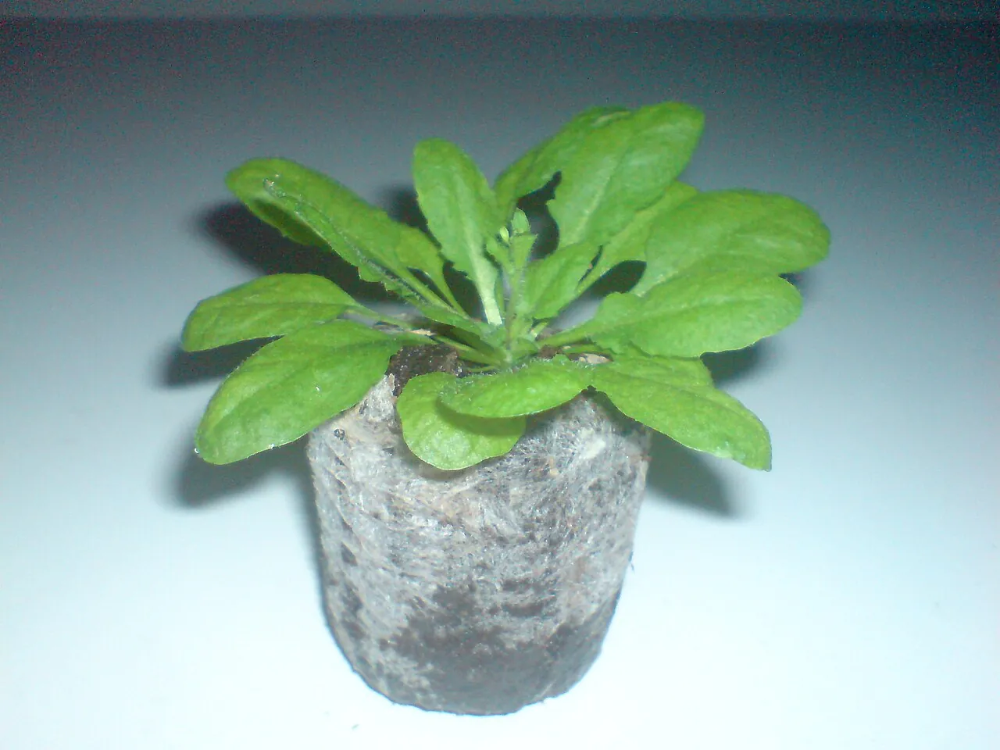

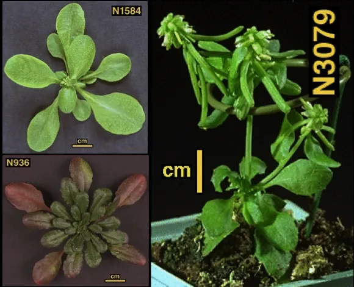

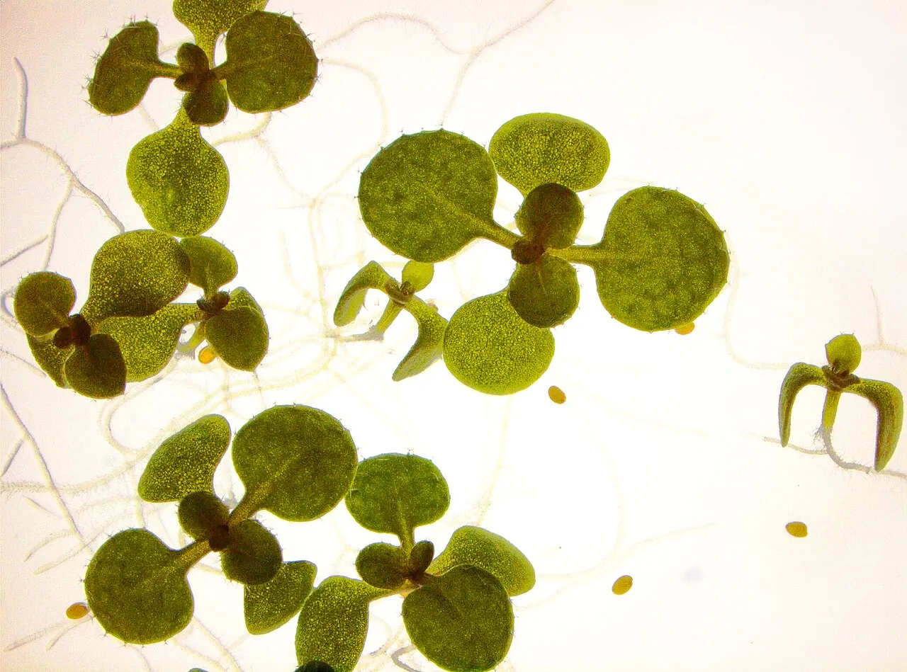
Один вид — багато «рас», зібраних у різних куточках світу; на фото вище — рослини різних екотипів, що помітно відрізняються габітусом і забарвленням.
1.2Геноми рослин
Головне. У клітині три геноми. Розміри ядерних геномів різняться на порядки (≈135 Мб — ≈20 Гб) і не залежать ні від життєвої форми, ні прямо від числа хромосом.
Рослинна клітина має три геноми:
| Геном | Структура | Розмір | Особливості |
|---|---|---|---|
| Ядерний | лінійні хромосоми | від ~100 Мб до десятків Гб (ялиця/хвойні — до ~20 Гб) | розмір варіює на порядки навіть у межах родини й не залежить від життєвої форми (є дерева й трави і з малими, і з великими геномами) |
| Пластидний (хлоропластний) | кільцевий, прокаріотичного типу | стабільний: ~120–170 (до 200) кб | у кожній пластиді 25–50+ копій ДНК, пластид у клітині — до сотні; при виділенні ДНК із зеленого листя пластидної ДНК дуже багато, тому для ядерних досліджень беруть етиольовані або незелені тканини |
| Мітохондріальний | кільця (часто складна мультикільцева організація) | від ~130 кб до гігабазних значень | чіткої кореляції з систематикою чи способом життя немає |
Одиниці: пара нуклеотидів (bp), кілобаза (kb = 10³ bp), мегабаза (Mb = 10⁶), гігабаза (Gb = 10⁹).
Порівняння ядерних геномів:
| Вид | Розмір геному (≈) |
|---|---|
| Arabidopsis thaliana | ~135 Мб, ~25–27 тис. генів (секвеновано 2000 р.) |
| Рис | ~400 Мб |
| Томат | ~900 Мб |
| Кукурудза | ~2,3 Гб |
Культурні рослини, як правило, мають значно більші геноми, ніж модельний об'єкт; малий геном арабідопсису робить його зручним: розібратися в меншій «ємності» простіше, а потім результати переносять на складніші геноми.
Приклад родини Пасльонових — розмір геному зростає в ряду картопля (2n = 48, ~0,8 Гб) → томат (~0,9 Гб) → баклажан (менше хромосом, але більше ДНК) → петунія (2n = 14, але великий геном) → тютюн (~4,5 Гб) → червоний перець (найбільший серед «природних» геномів родини). Тобто кількість хромосом і розмір геному не корелюють прямо.
Ядерний геном лінійний; пластидний і мітохондріальний — кільцеві, прокаріотичного типу. При виділенні ДНК із зеленого листя пластидної ДНК дуже багато, тому для ядерних досліджень беруть етиольовані або незелені тканини.
Перемикайте шкалу: на лінійній арабідопсис майже непомітний поряд із ялицею — тому розміри геномів порівнюють у логарифмах. Натисніть на рядок, щоб прочитати коментар.
1.3Міжвидова гібридизація та поліплоїдія
Головне. Міжвидова гібридизація з поліплоїдією стрибкоподібно збільшує геном: так виникли тютюн, слива, садова суниця, пшениці, банан.
Міжвидова гібридизація з подальшою поліплоїдизацією стрибкоподібно збільшує геном; далі в еволюції непотрібні послідовності поступово втрачаються, і геном стабілізується на новому рівні (числа хромосом і кількості ДНК). Багато культурних рослин у природі не трапляються саме тому, що вони — гібриди.
Задокументовані приклади:
- Тютюн курильний (Nicotiana tabacum) — алотетраплоїд, що об'єднує геноми N. sylvestris і N. tomentosiformis (по 24 хромосоми від кожного), звідси великий геном.
- Слива домашня — за поширеною гіпотезою походить від схрещування терну й аличі; має вдвічі більше хромосом, ніж батьківські види. Схрещування терну й аличі відтворено експериментально: отримано аналог домашньої сливи (з проблемами фертильності, але частину фертильних зразків вдалося відібрати).
- Суниця ананасна (садова «полуниця», Fragaria × ananassa) — історія, що відбулася «на очах людини»: до Франції з Чилі довезли лише жіночі рослини F. chiloensis; найкращий урожай вони давали поряд із F. virginiana; з насіння таких гібридів селекціонери отримали садову суницю. На початку XX ст. її схрестили з мускусною суницею (F. moschata) — виник гібрид «земклуніка» (прямостоячі квітконоси, більше вусів, менша кислотність, сильніший аромат, щільніші плоди).
- Пшениці — найскладніша історія:
- вихідна — дика однозернянка (Triticum boeoticum, геном A), Мала Азія, Греція, порушені місця;
- спонтанна гібридизація на полях давньої людини з бур'янами роду Aegilops (циліндричні колоски) дала форми з вищою врожайністю й крупнішим зерном;
- T. urartu (Aᵘ) × Ae. speltoides (B/G) → тверді (тетраплоїдні) пшениці (AABB);
- тетраплоїд × Ae. tauschii (Ae. squarrosa, «розчепірений», геном D) → м'яка пшениця (гексаплоїд AABBDD), утричі більше хромосом, ніж у вихідної диплоїдної пшениці;
- наслідок: багато генів представлені трьома гомеологічними копіями, не всі з них працюють; гібрид має гетерозисну силу, більшу врожайність і фізіологічну пластичність, але вивчати такі об'єкти складно.
- Грицики (Capsella bursa-pastoris) — приклад серед дикорослих: у Середземномор'ї відбулася гібридизація між C. grandiflora (Греція, Албанія) і C. rubella (Центральна Європа). Алополіплоїд із подвоєним набором хромосом від двох видів має вищу насіннєву продуктивність і пластичність і став космополітним бур'яном.
- Банани — вихідні види Musa acuminata (тропіки) та M. balbisiana утворювали насіння (плоди поїдали тварини й поширювали насіння). Гібридні культивари різного походження; закріплювали ознаку безнасінності. Найпоширеніший сорт Кавендиш — триплоїд, насіння не утворює і розмножується вегетативно.
- Лілійник рудий (Hemerocallis fulva) — триплоїд, що виник у Китаї від схрещування диплоїдних і тетраплоїдних форм; караванними шляхами потрапив до Візантії й Середземномор'я. Щонайменше ~2000 років не утворює насіння, але широко поширився вегетативно (люди викидають надлишки з ділянок — виникають здичавілі зарості).
Терміни: автополіплоїдія (подвоєння власного геному), алополіплоїдія (об'єднання геномів різних видів), гомеологічні гени, гетерозис.
Натискайте на вузли схеми; кнопка «Показати хромосоми» зображує по 7 хромосом кожного геному.

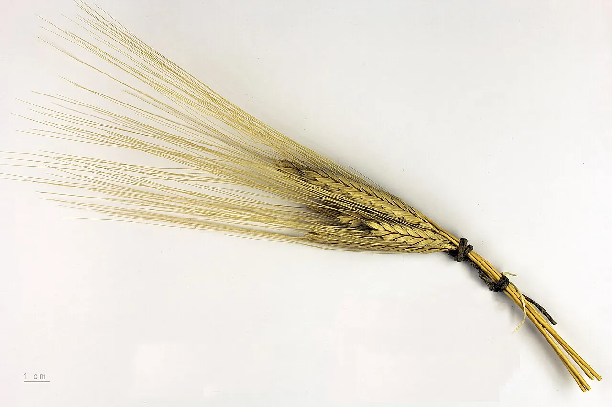

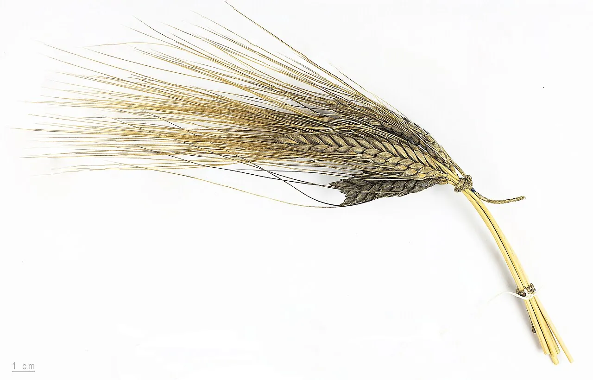

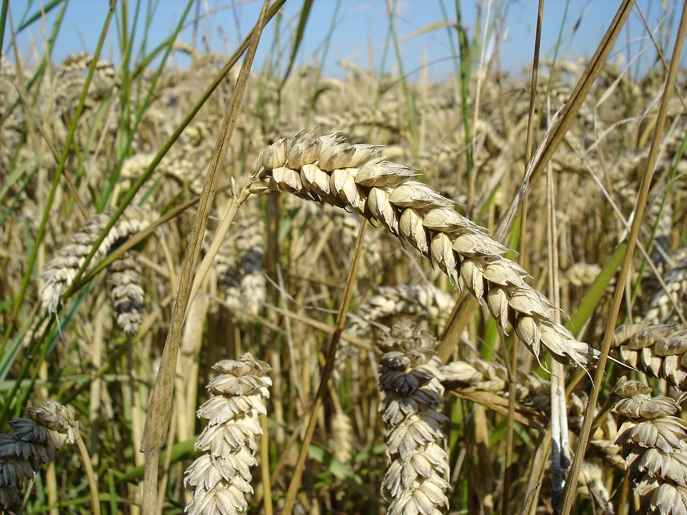

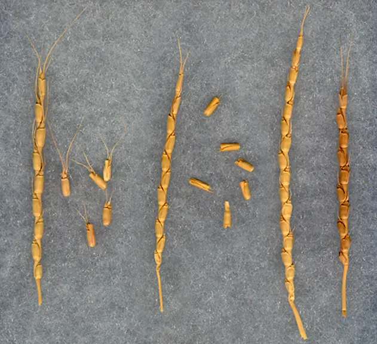

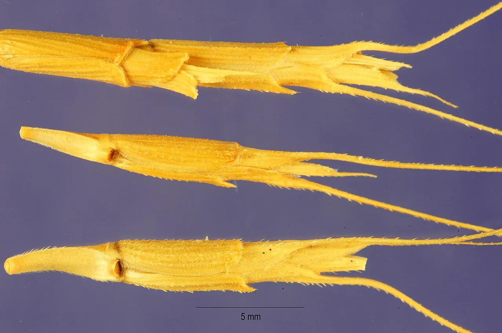
Задокументовані «алополіплоїдні» історії: два види → гібрид → подвоєння хромосом → новий вид

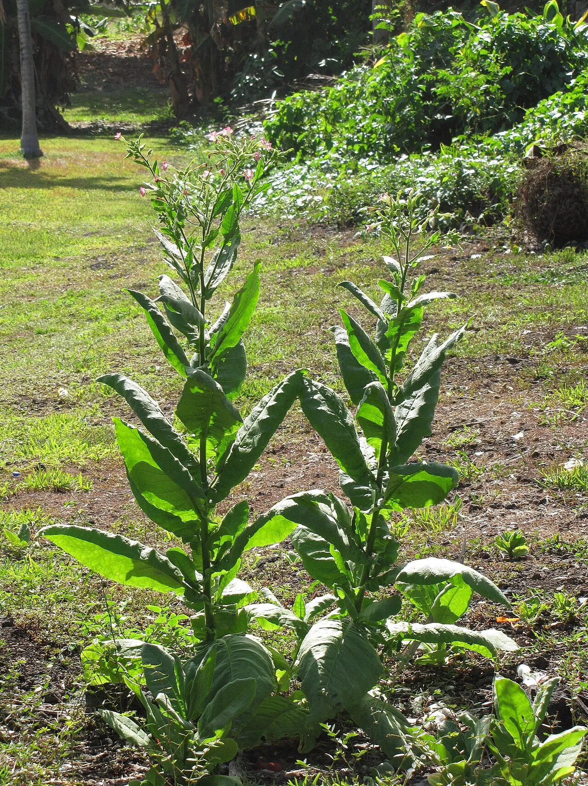

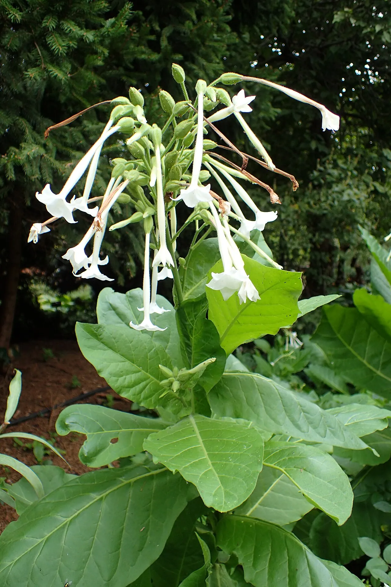

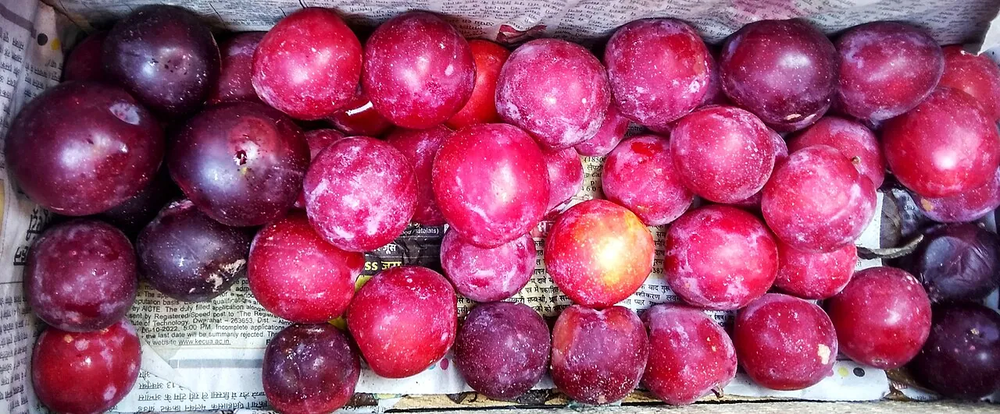

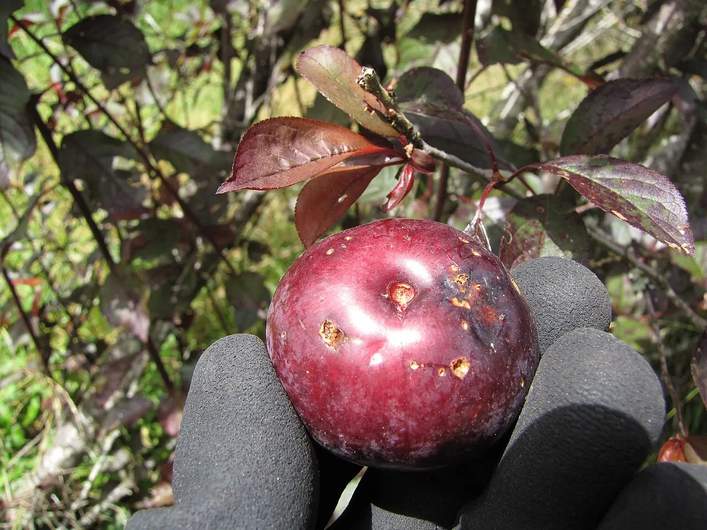

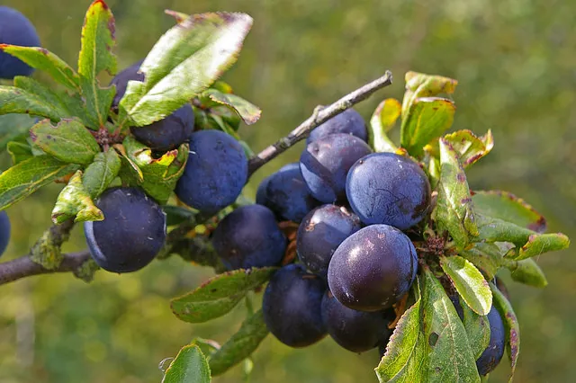

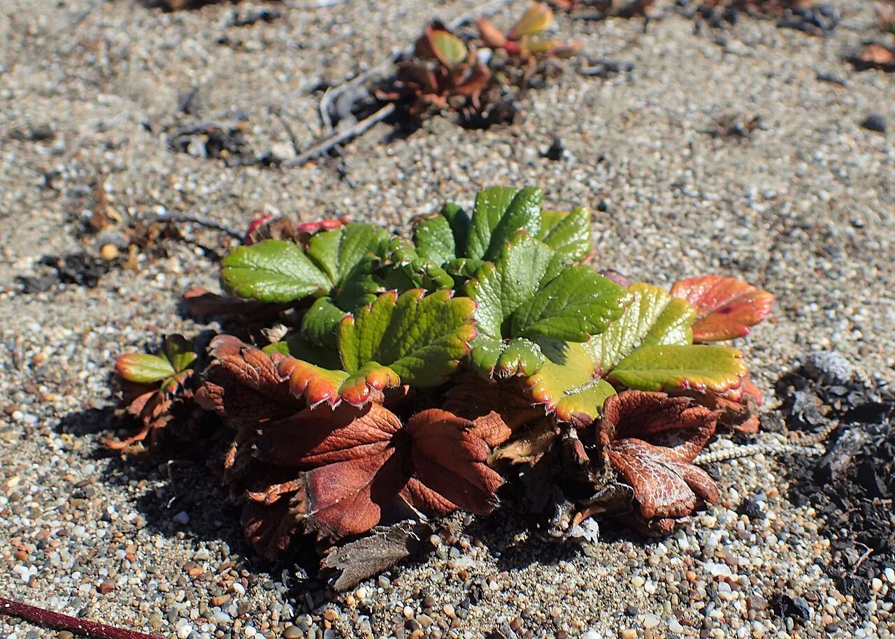


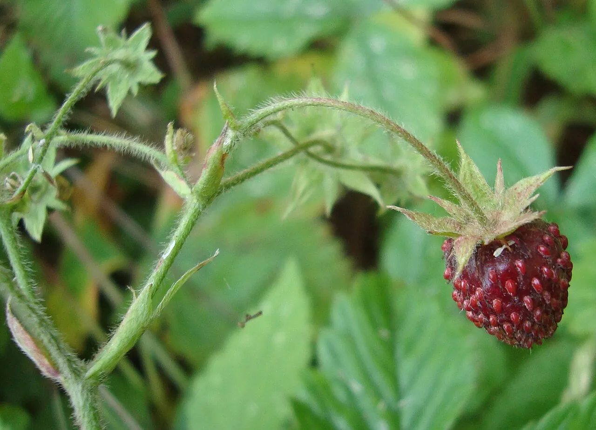

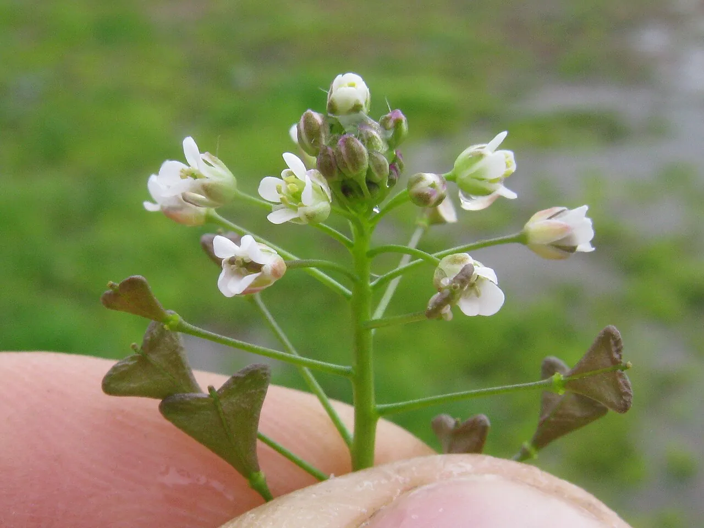

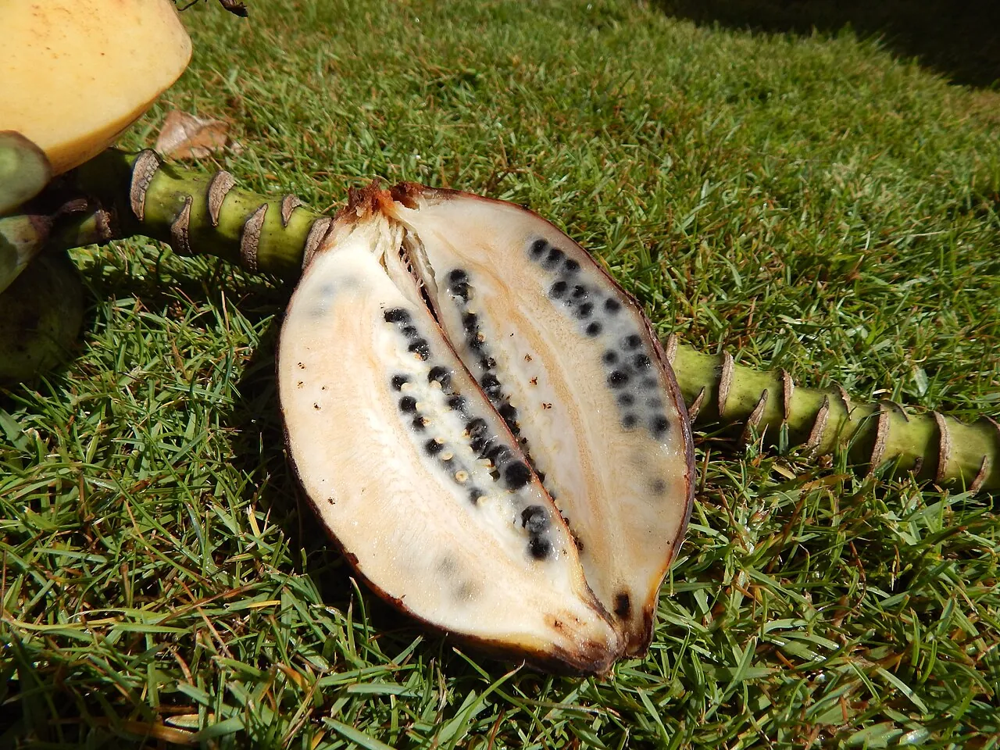

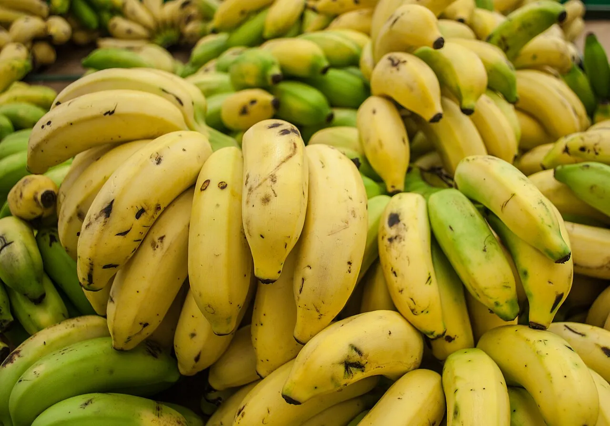

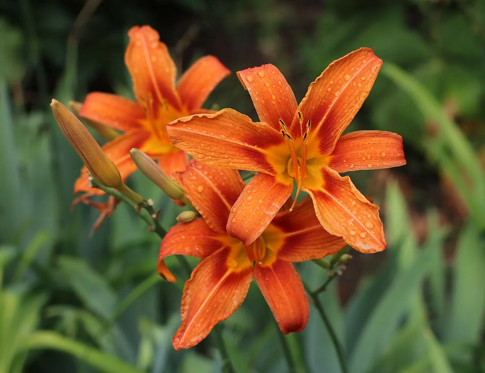
Джерела до розділу: [17] [18] [19] [20] [21] [22] [23] [24] [25] [26] [27] [28]
1.4Ретроелементи в геномі рослин
Головне. Значну частку геному — «егоїстична ДНК» ретроелементів (copy–paste). У петунії вони й ендогенні віруси тримаються під сайленсингом, що слабшає з віком і стресом.
Склад геному. Значну частку (іноді понад половину) займають ретроелементи / ретротранспозони — саме вони найбільше відповідають за мінливість розмірів геному навіть у близьких видів.
Принцип «copy–paste». Активна копія транскрибується → з РНК-копії зворотна транскриптаза синтезує ДНК → двоколанцюгова ДНК-копія вбудовується в нове місце. Тому за наявності активних копій елементи самі себе розмножують.
«Егоїстична ДНК». Ретроелементи не дають рослині селективної переваги й не беруть участі в регуляції — «живуть для себе» і засмічують геном. Геном з ними бореться (видаляє непотрібні послідовності, «замовчує» їх), а вони знову розмножуються.
Будова й білок. Зазвичай одна рамка зчитування кодує поліпротеїн із кількома доменами:
- протеаза — розрізає поліпротеїн на функціональні білки;
- зворотна транскриптаза — синтез ДНК на матриці РНК;
- РНКаза H — видаляє РНК із гібрида РНК/ДНК;
- інтеграза (ендонуклеазна активність) — робить розріз і вбудовує нову копію.
Життєвий цикл: транскрипція активної копії → зворотна транскрипція → видалення РНК і добудова другого ланцюга ДНК → розріз у новому місці й вставка.
Класифікація.
- Елементи обрамлені повторами, які зберігають цілісність інформації.
- LTR-ретротранспозони (з довгими кінцевими прямими повторами, long terminal repeats): довжина LTR — від ~76 bp до ~5 kb, довжина елементів — до ~24 kb. За положенням гена інтегрази поділяються на:
- Ty3/Gypsy (уперше описані в дріжджів, потім у дрозофіли): PR – RT – RNase H – INT;
- Ty1/Copia: PR – INT – RT – RNase H. Нагадують ретровіруси, але не мають білка капсиду — не пакуються й не переходять між рослинами; живуть у межах клітини.
- Не-LTR ретроелементи: LINE (long interspersed nuclear elements, до ~7 kb, автономні — кодують власні білки) і SINE (short interspersed nuclear elements, неавтономні — використовують ферменти LINE).
Під час зворотної транскрипції накопичуються помилки, тому активних копій мало, а більшість геному засмічено неактивними копіями, які вже не кодують повноцінного білка.
Приклад петунії. Ретротранспозони займають до ~40 % геному, ~4,5 тис. копій. FISH-зонди до Gypsy-подібних елементів фарбують практично всі хромосоми, з концентрацією в центромерних ділянках. Число копій варіює навіть між сортами та особинами, тому розмір геному завжди наближений.
Ендогенні параретровіруси петунії. Окрім ретроелементів, геном гібридної петунії містить вбудовані копії вірусів родини Caulimoviridae (як вірус мозаїки цвітної капусти, CaMV) — вірус просвітлення жилок петунії (PVCV). Порівняно з ретроелементами вони мають додаткові білки:
- білок руху (movement protein) — взаємодіє з системою міжклітинного транспорту (плазмодесмами);
- білок оболонки (coat protein) — утворення капсиду. Інтегровані копії локалізуються переважно в перицентромерних ділянках (FISH), тоді як, наприклад, гени 5S рРНК — у строго визначених ділянках (на хромосомі 2).
Історія «завірусованості». Дикі види (напр., Petunia parodii) PVCV не містять. У XIX ст. петунію розмножували як теплолюбний багаторічник живцями — так у геномі накопичилися віруси: ~50 ділянок із вірусними послідовностями, з них лише ~4 повноцінні копії (у менш культивованих — 1). Петунія також «нахапалася» фрагментів вірусів з інших рослин (CaMV, віруси рису, банана, троянди, винограду) — ймовірно, через брудний інструмент під час живцювання; повних копій цих вірусів немає.
Сайленсинг. Щоб жити на вірусному фоні, рослина використовує сайленсинг («замовчування») надто активних послідовностей. Ефективність сайленсингу знижується з віком:
- 1-й міс. культивування — низький рівень вірусної РНК;
- 2-й міс. — ×2; 3-й — ×17; 4-й — ~×100 000. Сорти петунії із «зірчастим» забарвленням: білі смуги — результат сайленсингу гена халконсинтази (CHS). У молодих рослин смуги чіткі; у старих сайленсинг слабшає, квітки стають суцільно малиновими, а одночасно проявляються симптоми вірусної інфекції (світлі жилки, деформовані листки та пелюстки).
Стрес активує віруси. Експеримент: регулярне обрізання рослин (для компактного габітусу) через 3 міс. призвело до симптомів у ~30 % рослин; без пошкоджень, на доброму агрофоні — лише у 2–3 %. Посуха, перегрів, механічні пошкодження активують ендогенні віруси.
Ретроелементи — головна причина відмінностей розміру геному навіть у близьких видів; кількість їхніх копій варіює між сортами та особинами, тому розмір геному завжди наближений.
Різниця між Ty3/Gypsy і Ty1/Copia — у порядку генів: інтеграза стоїть наприкінці (Gypsy) або посередині (Copia).
Крок за кроком (або автоматично) простежте, як з одного елемента стає два.
Посуньте повзунок: сайленсинг слабшає — смуги на квітці зникають, а вірусні симптоми на листку наростають. Стрес (обрізання, посуха, перегрів) прискорює цей процес.

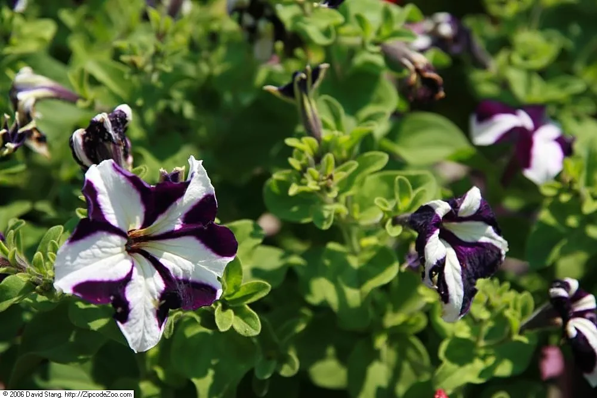

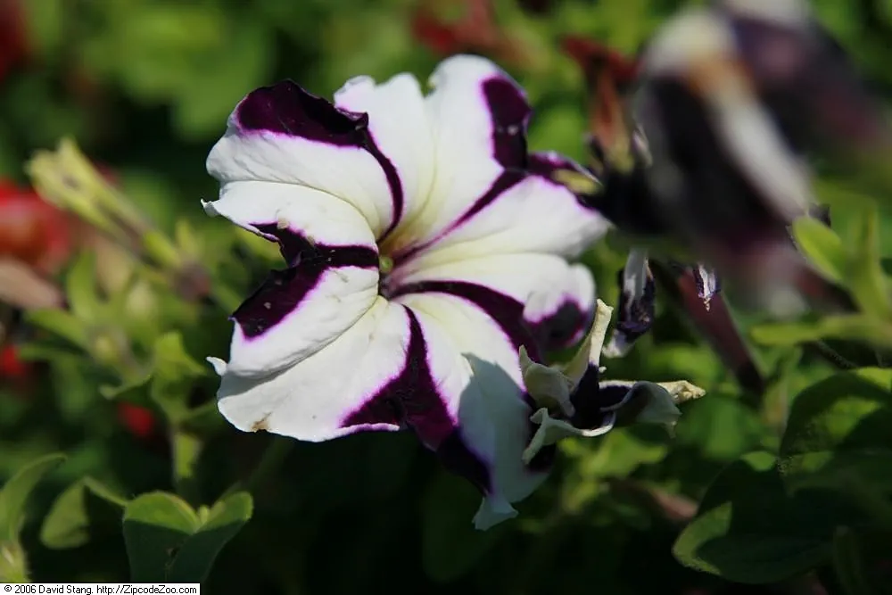

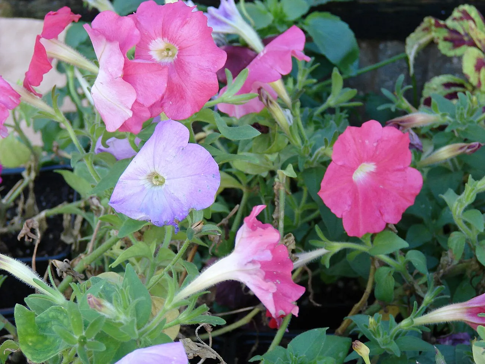
Джерела до розділу: [29] [30] [31] [32] [33] [34] [35] [36] [37]
1.5ДНК-транспозони. Система Активатор–Дисоціатор
Головне. ДНК-транспозони (Ac/Ds Мак-Клінток) переносяться за принципом cut–paste; наслідок залежить від місця вставки, а розмір плями — від моменту «стрибка».
Принцип «cut–paste». Нерепліктивні транспозони вирізаються зі старого місця й переносяться в нове. Їх відносно небагато, але їхня активність впливає на безліч ознак залежно від того, в яке генне оточення вони потрапили.
Відкриття Барбари Мак-Клінток (1940-ві; публікації 1946–1950). Цитогенетик, вивчаючи строкате забарвлення зернівок кукурудзи, помітила хромосому, яка постійно ламається в тому самому місці. Локус назвала Ds (Dissociation, дисоціатор). Дисоціатор працює лише на фоні іншого локусу — Ac (Activator, активатор).
- У відламаному плечі хромосоми є алель червоного забарвлення; у гетерозиготи (друга хромосома несе рецесивний алель) втрата плеча дає білі сектори → строкатість.
- Без Ac зернівки забарвлені рівномірно.
- Наукова спільнота довго не вірила (геном вважали стабільним), доки подібні елементи не знайшли в інших організмів і не охарактеризували молекулярно. Нобелівська премія — 1983 р. Мак-Клінток очолювала Генетичне товариство Америки, стала «живою легендою», на її честь випущено поштові марки.
Будова системи Ac/Ds.
- Ac (~4,6 kb) обрамлений короткими кінцевими інвертованими повторами (TIR, ~11 bp), які утворюють петлю. Усередині — ген транспозази (~3,5 kb).
- Транспозаза впізнає TIR, вирізає елемент (з 1–2 додатковими нуклеотидами) і вбудовує його в нове місце, часто в межах тієї ж хромосоми.
- Ds — широкий клас дефектних елементів: зіпсована транспозаза або взагалі лише TIR. Переміщуються тільки за наявності транспозази від Ac.
- TIR гомологічні межам інтронів, тож вставка в ген може «вирізатися» під час сплайсингу.
- У геномі кукурудзи — 2–4 активні Ac (у деяких ліній — жодного) і до ~50 Ds різної будови.
Фенотипові наслідки залежно від місця вставки:
| Позиція вставки | Наслідок вставки | Наслідок виходу (excision) |
|---|---|---|
| 1. Між промотором і кодувальною частиною | порушення експресії (віддаляє промотор) | відновлення функції → плями дикого типу на мутантному фоні |
| 2. В екзоні | може вирізатися зі сплайсингом, ефект малий | «слід» вирізання (втрата/вставка 1–2 нт) → зсув рамки → мутація |
| 3. В інтроні | видаляється під час сплайсингу, ефекту немає | зазвичай безпечно |
Крім того, Ds може спричиняти розриви та втрату фрагментів хромосом (втрата алелів, як у класичному досліді).
«Транспозонний фенотип». Строкаті плями, малюнок яких не повторюється від квітки до квітки (стохастичність). Розмір плями залежить від моменту «стрибка»: рано в розвитку — великий сектор, пізно — точки й штрихи.
- Tam — транспозони левиного зіва (Antirrhinum majus);
- Tmg — транспозони нічної красуні (Mirabilis jalapa): незалежна активність двох транспозонів у генах антоціанів і жовтих пігментів дає комбіновані рожеві й жовті сектори;
- приклади: строката насіннєва шкірка квасолі, білі плями в листі настурції, червоні — в колеуса, жовті штрихи на червоній троянді. Троянда: транспозон, імовірно, в екзоні гена червоного забарвлення — вихід руйнує ген, тому червоний фон «розсипається» на жовті/білі плями; суцільно біла троянда вже стабільна. Колеус: вихід відновлює функцію → червоні плями; суцільно червоний колеус — транспозон пішов.
Регуляція активності. Транспозон активується разом з геном, у якому сидить. Стани: неактивний (метилювання, модифікації хроматину) → криптичний (у гетерохроматині, рідко використовувана ділянка) → активний (коли ділянка «розплітається» і транскрибується). Тому найбільш мутабельні саме активно працюючі ділянки геному.
Транспозони як інструмент генетики.
- Термочутливі алелі: транспозаза активна при ~16 °C і неактивна при ~28 °C. Підвищення температури «заморожує» алель: якщо смугастість зникає й нові квітки однотонні — транспозон точно сидить у гені забарвлення.
- Транспозони програмують і долю органів: ген DEFICIENS левиного зіва — в одній квітці сектори з нормальними й недорозвиненими пелюстками; FLORICAULA (контроль квітки й суцвіття) теж уперше виявлено завдяки транспозону.
- До винайдення ПЛР (поч. 1990-х) транспозонне мічення (transposon tagging) було головним способом клонування генів; тому левиний зів (багато активних транспозонів) був зручним об'єктом.
- В арабідопсису власні ДНК-транспозони слабоактивні; можна пересаджувати чужі системи (напр., Ac/Ds), і вони працюватимуть. Перевага арабідопсису — низька копійність повторів у геномі.


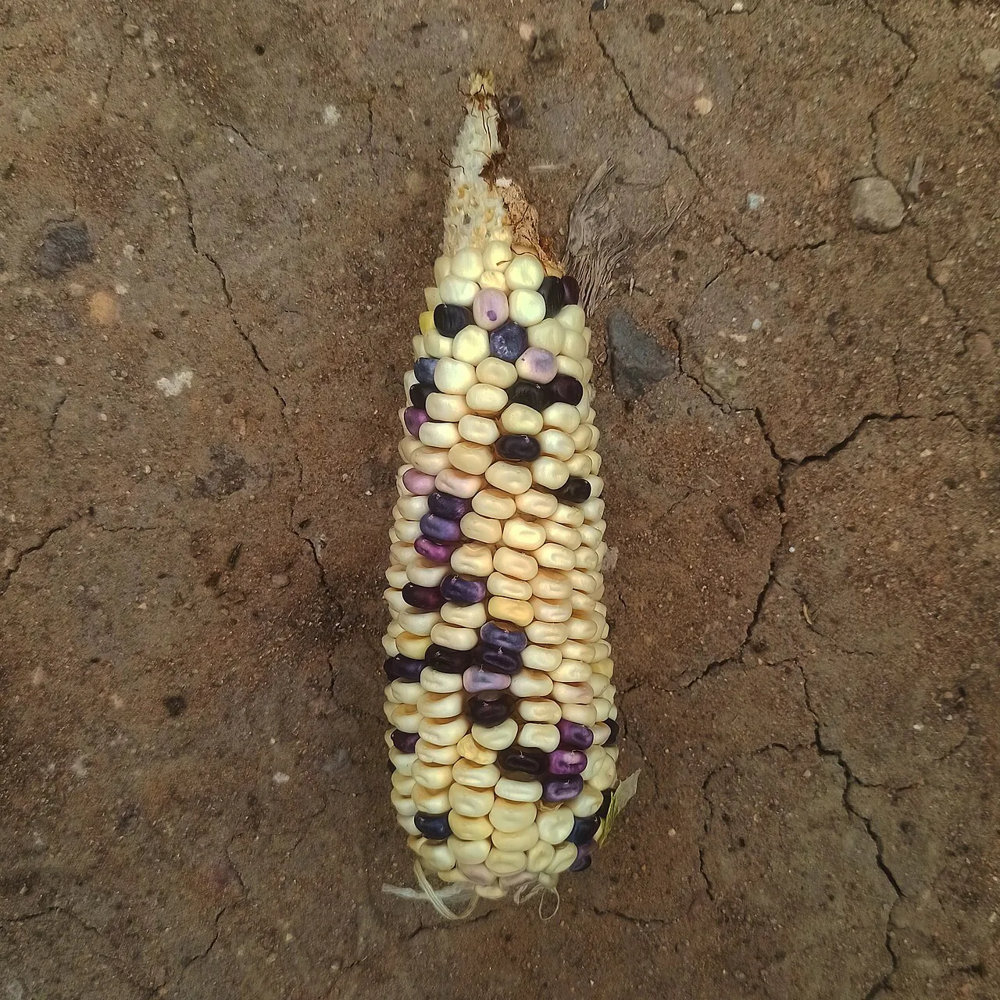
Ac кодує транспозазу, Ds — лише «ручки» (TIR). Без Ac Ds нерухомий.
Оберіть позицію транспозона, потім натисніть «вирізається» — і побачите наслідок для гена.
Кожен поділ клітини — шанс, що транспозон вирізається й пігмент відновиться. Рання подія дає великий сектор, пізня — крапку. Перемкніть температуру: за 28 °C «стрибків» немає.

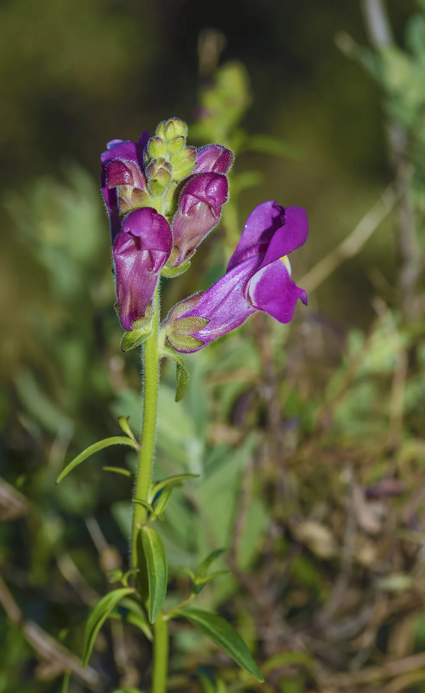

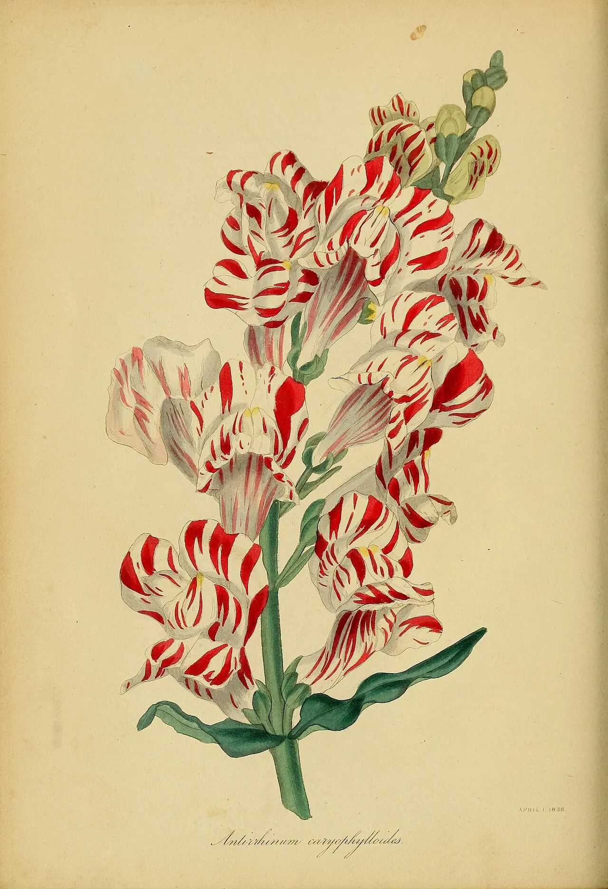

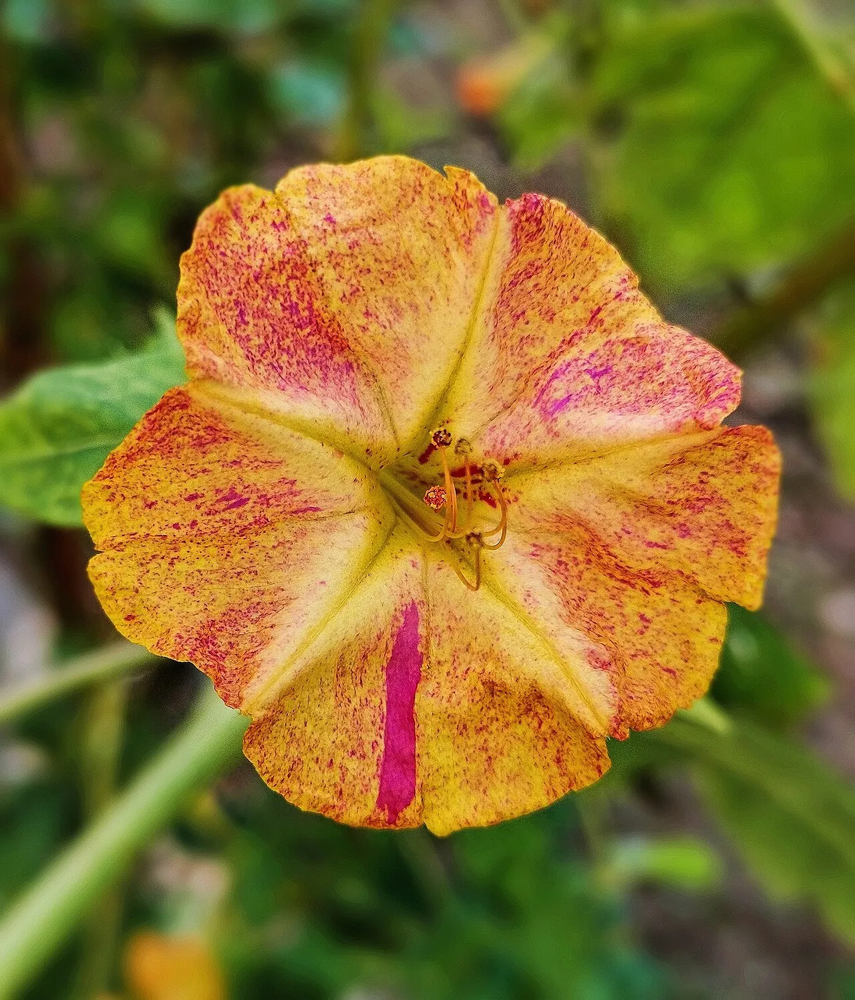

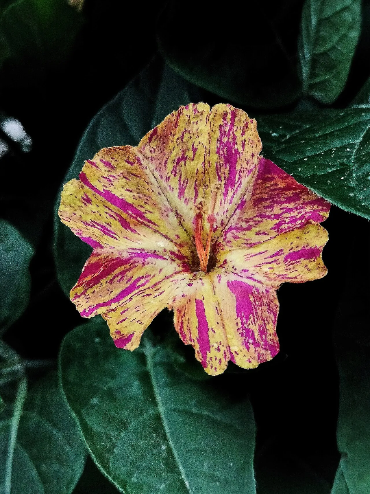

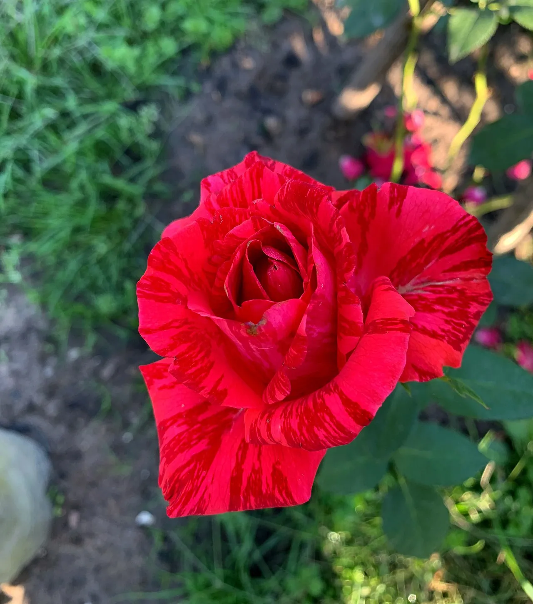
Джерела до розділу: [38] [39] [40] [41] [42] [43] [44] [45] [46] [47] [48]
1.6Інші повторювані елементи геному
Головне. Повтори необхідні: теломери захищають кінці хромосом, центромерні повтори формують кінетохор.
- ДНК низької складності, сателітні послідовності — частково не досліджені, займають різну частку геному.
- Без повторів жити неможливо:
- теломери — кінцеві повтори; при реплікації хромосома недочитується й вкорочується; спеціальні ферменти (теломераза) добудовують кінці, а відсутність кодувальних послідовностей у теломерах захищає важливі гени від втрати;
- центромерні/кінетохорні повтори — до кінетохора прикріплюється багато мікротрубочок, для організації такої ділянки потрібна однорідна повторювана ДНК.
Теломери захищають кінці хромосом, центромера утворює кінетохор.
1.7Гени та регуляторні послідовності
Головне. Ген = промотор + екзони/інтрони + термінатор. Назви: ген — курсивом, білок — прямим шрифтом; мутантні алелі — малими літерами з номером.
Частка геному. У Пасльонових — від чверті до третини. Найбільш досліджувана й найцінніша частина.
Мультигенні родини. Гени об'єднуються в родини за функцією та структурою; великі родини поділяють на класи. Причини множинності:
- потреба в масовому продукті (напр., тандемні повтори генів рРНК для рибосом);
- спеціалізація близьких продуктів у різних клітинах і процесах — основа для морфологічних, анатомічних і біохімічних інновацій. Недостатньо складний геном має обмежені можливості.
Будова білок-кодуючого гена еукаріотів: промотор → кодувальна частина (екзони/інтрони) → термінатор. Транскрипція від 5′-кінця; пре-мРНК → сплайсинг → зріла мРНК з 5′-кепом і 3′-полі(А)-хвостом (не записаний у ДНК, додається за сигналом термінації; дає стабільність). Прокаріотичні РНК мають на 3′-кінці шпильку; у цитоплазмі еукаріотів такі РНК сприймаються як чужорідні й швидко деградують. Трансляція — від ініціюючого кодону (з контекстом) до стоп-кодону.
Посттрансляційні етапи: N-кінцеві сигнальні/транзитні послідовності спрямовують білок у ЕПР, вакуолю, мітохондрії, хлоропласти (для цитозолю лідер відсутній); пре-білок процесується (відщеплення частин), глікозилюється, модифікується → зрілий білок.
Натискайте на частини гена. Внизу — як N-кінцева послідовність визначає, у який компартмент піде білок.
Номенклатура генів і мутантів (ядерні гени)
Існує міжнародна номенклатурна комісія з еукаріотів:
- Ген позначають скороченням з 1–3 літер, часто за назвою мутанта або ферменту: AG (AGAMOUS), VDE (віолаксантин-де-епоксидаза). Дослідники прагнуть запам'ятовуваних назв: UFO = UNUSUAL FLORAL ORGANS. Паралельні назви в різних лабораторіях згодом зводять за пріоритетом; зайняту назву змінюють.
- Цифра одразу після літер, без дефісу: SOC1, CLV1, CLV3, AP1, AP2. Часто (але не завжди!) це члени однієї родини: CLV1 (рецепторна кіназа) і CLV3 (пептид) — різні родини; AP1 (MADS) і AP2 (AP2/ERF) — теж.
- Дикий алель — ВЕЛИКИМИ літерами курсивом: AGAMOUS, AG.
- Мутантний алель — малими літерами курсивом, номер алеля через дефіс: ag-1, ap2-5, ap2-7 (нумерує лабораторія, що отримала мутацію).
- Спрямовані амінокислотні заміни: CLV1(R204F) — аргінін у позиції 204 замінено на фенілаланін (однолітерні коди амінокислот).
- Ортологи з інших видів: префікс із роду й виду — ZmAG (кукурудза Zea mays), NtAP2 (Nicotiana tabacum), Os… (рис Oryza sativa). Увага: Ps може означати і горох (Pisum sativum), і сосну (Pinus sylvestris) — завжди читайте, які об'єкти досліджували.
- Білок — прямим шрифтом: AG, AP2 (у ядерних — зазвичай великими літерами).
- Гени часто названо за мутантним фенотипом, тож функція протилежна назві:
- PIN-FORMED (PIN1) — мутант має голий «шпилькоподібний» стебло без квіток; функція гена — забезпечувати утворення органів (транспорт ауксину);
- CAULIFLOWER — у мутанта суцвіття з недорозвинених квіток (як цвітна капуста); ген забезпечує нормальний розвиток квіток;
- SEPALLATA — у мутанта всі органи квітки перетворюються на чашолистки (sepals); ген потрібен для розвитку пелюсток, тичинок і плодолистків.
Бокси та домени.
- Бокс — консервативна послідовність ДНК (у промоторі чи кодувальній частині), що вказує на спорідненість або функцію:
- TATA-бокс — ~30 нт до старту транскрипції, маркер промотора;
- G-бокс — промоторний мотив, який зв'язують PIF (phytochrome-interacting factors); гени з G-боксом відповідають на фітохромні сигнали;
- F-бокс — ділянка ~50 амінокислот в убіквітин-лігазах, забезпечує білок-білкові взаємодії при убіквітинуванні;
- MADS-бокс — кодує MADS-домен (~56–58 а. к.) факторів транскрипції, що зв'язує ДНК.
- Домен — консервативний фрагмент білка (α-спіралі, β-структури, мотиви), що визначає його функцію/взаємодії:
- гомеодомен — ~60 а. к., зв'язує ДНК (на рівні ДНК відповідна ділянка — гомеобокс);
- CHASE-домен — ~200–230 а. к., у рецепторних кіназах (рецептори цитокінінів);
- ABA-зв'язувальний домен — у рецепторах абсцизової кислоти.
- РНК-продукт позначають так само, як ген (зрозуміло з контексту).
Пластидні й мітохондріальні гени — за правилами номенклатури прокаріотів (історично дві комісії не домовилися про єдину систему). Спільне: гени — курсивом, білки — прямим шрифтом. Три малі літери + за потреби велика: psaA, atpB, rbcL; білки з великої літери; для численних родин — номер: rps12 (рибосомний білок малої субодиниці 12). Окремого позначення для мутантних алелів немає — тож слід пам'ятати, про який геном ідеться.
| Що позначаємо | Ядерний геном (приклад) | Пластидний/мітохондріальний (приклад) |
|---|---|---|
| Ген дикого типу | AGAMOUS, AG, CLV1 | rbcL, psaA |
| Мутантний алель | ag-1, clv1-4 | спеціального позначення немає |
| Білок | AG, CLV1 | RbcL, PsaA |
| Ортолог іншого виду | ZmAG, OsMADS… | — |
Оберіть приклад або введіть власну назву. Звертайте увагу на регістр літер, дефіс і префікс виду.
У таких назвах (pin-formed, cauliflower, sepallata) закодовано те, що стається, коли ген ВИМКНЕНО.
Перевірте себе
Які вимоги до «рослинної дрозофіли» виконує арабідопсис?
Чому екотип Landsberg erecta не можна вважати «чистим» диким типом?
Як виникли м'яка пшениця й тютюн?
У чому принципова різниця між ретротранспозонами й ДНК-транспозонами?
Як позначають ген дикого типу, мутантний алель і білок у ядерному геномі?
Регуляція експресії геному
Як клітина вирішує, який ген увімкнути: цис-елементи, транс-фактори, комплекси з WD40, MYB-регуляція забарвлення квітки та ремоделювання хроматину.
2.1Регуляція транскрипції
Головне. Експресію гена визначають три чинники: цис-елементи в промоторі, транс-фактори (ФТ) і стан хроматину.
На рівень експресії конкретного гена впливають три групи чинників:
- Цис-фактори — послідовності ДНК, що оточують ген або входять до його складу. Багато їх зосереджено в промоторах: це регуляторні бокси, з якими зв'язуються фактори транскрипції.
- Транс-фактори — фактори транскрипції (ФТ): активатори та репресори (останні, входячи до транскрипційних комплексів, пригнічують активність).
- Стан хроматину — разом із ФТ до комплексу часто залучаються фактори ремоделювання хроматину: ділянка або розпушується (ген і його оточення активуються), або конденсується (ген «виводиться з обігу»).
Вмикайте й вимикайте чинники та спостерігайте, коли ген працює.
2.2Різноманіття факторів транскрипції
Головне. ФТ ділять на родини за ДНК-зв'язувальним доменом (Zn-палець, B3, гомеодомен, AP2/ERF, MADS, MYB, bHLH, WRKY…); один тип домену може обслуговувати різні процеси.
Для арабідопсису побудовано «карту» родин ФТ: кожне коло — родина, площа кола пропорційна кількості генів (від величезних родин до таких, що містять 1–2 гени). ФТ мають домени: одні забезпечують специфічне впізнавання регуляторних послідовностей ДНК, інші — білок-білкові взаємодії; часто в одному білку кілька доменів.
Огляд основних родин:
| Родина | ДНК-зв'язувальна структура | Приклади генів і функцій |
|---|---|---|
| Цинкові пальці (Zn finger) | атом Zn координований 2 His + 2 Cys; α-спіраль + β-шпилька входять у велику борозну ДНК (форма лише умовно схожа на «палець») | CONSTANS-подібні (COL) — індукція цвітіння; YABBY — розвиток квітки й листка (абаксіальна ідентичність) |
| B3-домен (~300 а. к. у повному білку; домен переважно β-структурний) | ARF (AUXIN RESPONSE FACTORS) — первинна відповідь на ауксин; споріднені Aux/IAA — репресори, що в комплексі з ARF блокують експресію, доки їх не знищить убіквітин-протеасомна система; VIVIPAROUS1 (VP1) кукурудзи — відповідь на абсцизову кислоту (АБК) | |
| Гомеодомен (~60 а. к.; кодується гомеобоксом ~180 bp) | 3 α-спіралі з петлями | KNOX, HD-ZIP, WOX тощо |
| AP2/ERF (повтори ~70 а. к.) | впізнавання ДНК β-складками (є й α-спіраль) | APETALA2 |
| MADS-бокс (56–58 а. к.) | тетрамерні комплекси | AGAMOUS, DEFICIENS |
| MYB (повтори R1, R2, R3 по ~50 а. к., кожен — 3 α-спіралі) | регуляція антоціанів, волосків тощо | |
| bHLH (basic helix–loop–helix) | основна ділянка + спіраль–петля–спіраль; димери | партнери MYB |
| bZIP (лейцинова «блискавка») | ||
| WRKY | мотив WRKY + Zn | вторинна відповідь |
Гормонзалежні ФТ.
- Мутант кукурудзи vp1 (viviparous1): зернівка проростає просто в качані — у зародка немає спокою, не накопичуються запасні речовини, відсутнє антоціанове забарвлення алейрону — синдром порушеної відповіді на АБК. Отже, той самий тип домену (B3) використовується для відповіді на різні гормони.
Гомеодомен.
- Назва — від гомеозисних змін у тварин: у дрозофіли мутації комплексу Bithorax дають «дві груди» (замість жужжальців розвивається ще одна пара крил).
- У рослин гомеодомен довго не знаходили, хоча гомеозисні мутації рослин були відомі. Гомологія з тваринами стосується лише самого гомеобоксу/гомеодомену; решта білків дуже відмінна.
- Першими знайшли KNOX-гени (від KNOTTED1 кукурудзи — «вузлик»: при порушенні меристематична активність з'являється в листках, утворюючи нарости). KNOX контролюють меристематичну активність пагона.
- HD-ZIP (гомеодомен + лейцинова блискавка) — програма розвитку листка, визначення верхньої/нижньої поверхні.
- WOX — розмір меристем кореня й пагона, проліферація і диференціація.
- Є родини, що поєднують гомеодомен і цинкові пальці.
AP2/ERF — родина, уперше відкрита в рослин. APETALA2 («безпелюстковий») контролює розвиток органів квітки: у мутанта ap2 зникають пелюстки (та змінюється ідентичність інших органів).
MADS-бокс.
- Історія: у арабідопсису (мутант agamous) і левиного зіва (мутант deficiens) знайшли гени з доменом, спільним лише для двох відомих на той час білків: MCM1 дріжджів (підтримання мініхромосом) і SRF людини (фактор відповіді на сироватку). Акронім MADS = MCM1 + AG + DEF + SRF.
- Функціонують як тетрамери різних MADS-білків, що зв'язуються з ДНК.
- Контролюють ідентичність органів квітки: мутант agamous — махровість: тичинки й маточка не розвиваються, у центрі квітки утворюються нові пелюстки й чашолистки.
- Велика родина, яку рослини використовують для регуляції багатьох процесів.
MYB.
- Назва — від вірусу мієлобластозу птахів (avian myeloblastosis virus), онкоген якого (v-myb) спричиняє лейкоз у птахів (неконтрольований поділ лімфоїдних клітин, загибель птаха).
- Будова: до трьох тандемних повторів (R1, R2, R3) по ~50 а. к., кожен із трьох α-спіралей. Не всі члени мають повну структуру: є R2R3-, R1-тип тощо; до повторів приєднані різні регуляторні частини, тож функції різняться.
- У хребетних лише 3 гени з повними R1R2R3 (контроль проліферації і диференціації).
- У арабідопсису — ~200 генів (198) із MYB-повторами, а з м'якшим критерієм гомології — понад 300. Повних R1R2R3 — лише ~5, більшість — R2R3-тип, решта — атипові.
bHLH. Основний (лужний, позитивно заряджений) домен електростатично взаємодіє з ДНК (кислотою); далі спіраль–петля–спіраль. Працюють як димери, які обхоплюють ДНК, «наче щипці». Можуть поєднуватися з лейциновою блискавкою (bZIP): гідрофобні лейцини двох α-спіралей взаємодіють, забезпечуючи димеризацію.
Оберіть родину: домен, спосіб впізнавання ДНК, приклади.
Акронім — пам'ятка про те, звідки походять перші відкриті білки з цим доменом.
Схематичні діаграми (кола — орган за колами квітки).

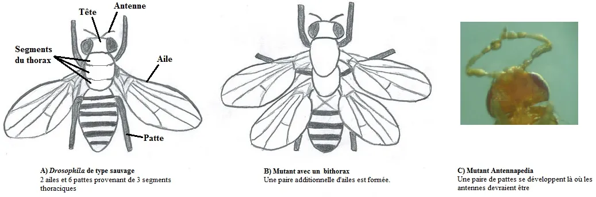

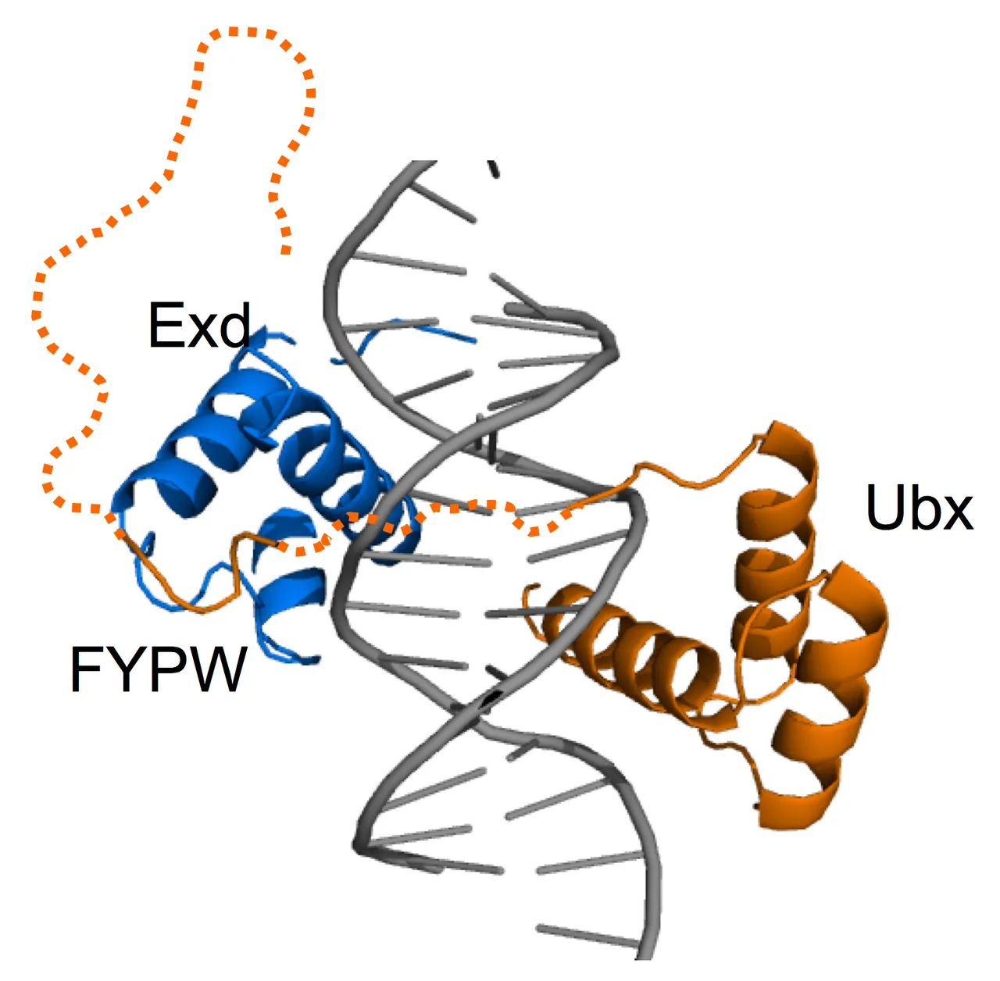

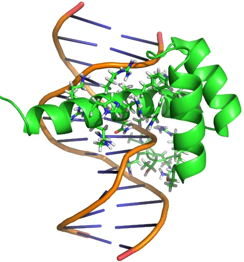

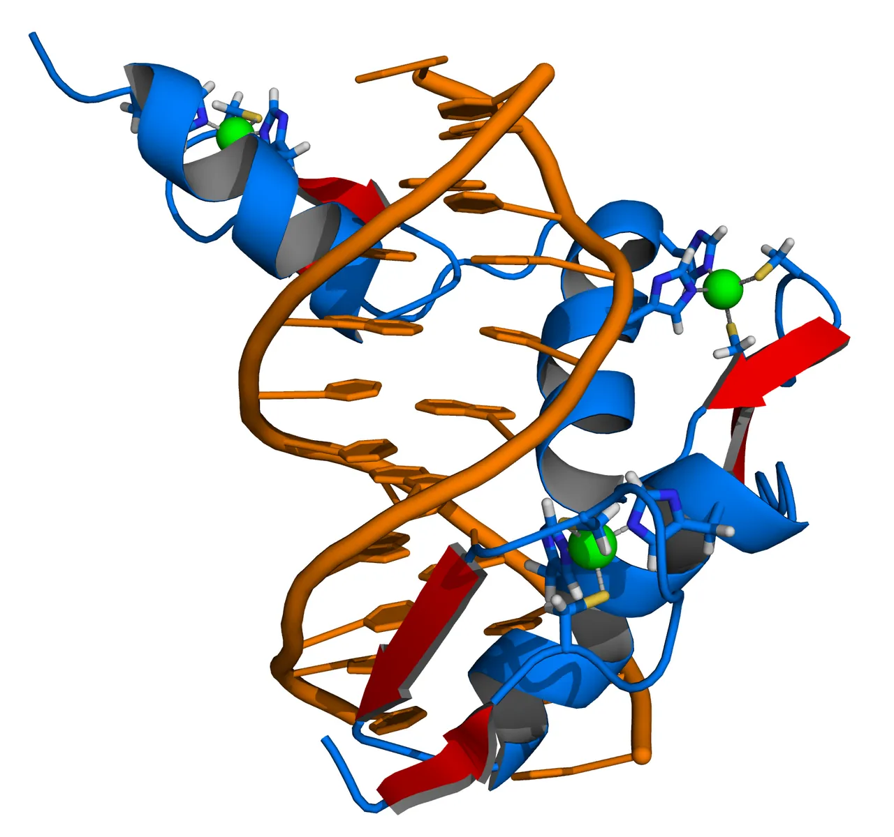

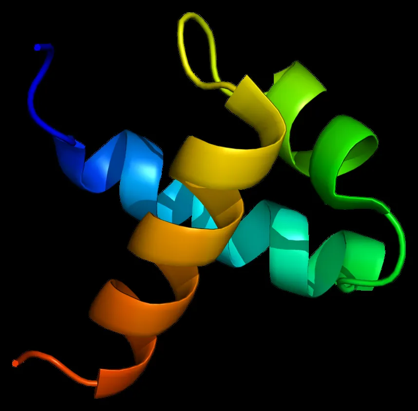

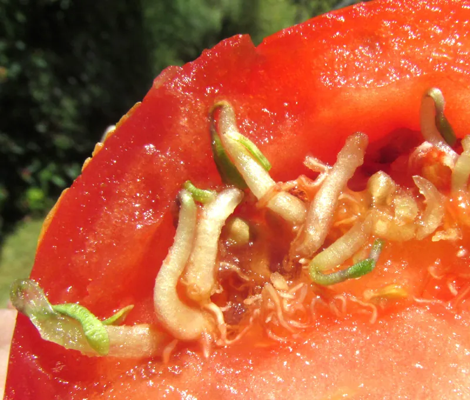

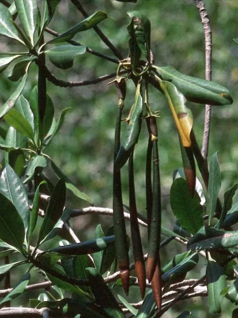
2.3Білки з WD40-повтором. MBW-комплекс
Головне. WD40-білок TTG1 — «платформа» MBW-комплексу; який саме процес запуститься, визначає пара bHLH + MYB.
WD40-білки самі з ДНК не зв'язуються (у вузькому сенсі не є ФТ), але слугують каркасом (платформою) для збирання транскрипційних комплексів.
- Спорідненість довели не одразу: послідовності дуже різні; єдиний регулярний мотив — триптофан (W) і аспарагінова кислота (D) приблизно через кожні 40 а. к. → WD40.
- Просторова структура — β-пропелер із різною кількістю «лопатей» (що ускладнює аналіз); можуть мати додаткові домени.
- Функції: збирання транскрипційних комплексів; мембранні сигнальні комплекси; убіквітинування білків-мішеней; формування клітинної стінки тощо.
MBW-комплекс (MYB–bHLH–WD40). На WD40-білок «нанизується» bHLH-фактор, до нього приєднується MYB-фактор → транскрипційний комплекс, що регулює дуже багато процесів. Центральний WD40-білок арабідопсису — TTG1 (TRANSPARENT TESTA GLABRA1). Залежно від bHLH- і MYB-партнерів комплекс контролює:
- розвиток трихом на листках (GLABRA: GL1 — MYB, GL3/EGL3 — bHLH);
- розвиток кореневих волосків (тут подібний комплекс діє як репресор);
- пігментацію насіннєвої шкірки (TRANSPARENT TESTA: TT2 — MYB, TT8 — bHLH);
- синтез антоціанів, слизу насіннєвої шкірки, накопичення жирів і запасних білків, час цвітіння, відповіді на біотичні й абіотичні стреси.
Структурно подібні MYB можуть бути як активаторами, так і репресорами («дзеркальна» функція).
Принцип специфічності (ієрархія):
| Компонент | Кількість копій у геномі | Специфічність експресії |
|---|---|---|
| WD40 | мало | майже всюди, «чекає», хто приєднається |
| bHLH | помірно | частково спеціалізовані |
| MYB | дуже багато (суперродина) | вузькоспецифічні: певні тканини, клітини, умови; активатори або репресори |
Платформа WD40 — одна й та сама; процес визначає пара bHLH + MYB.

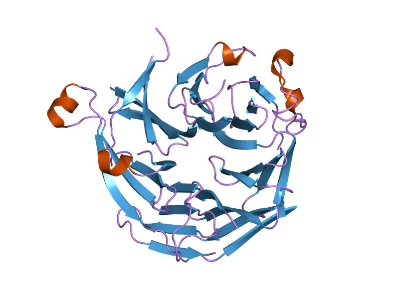

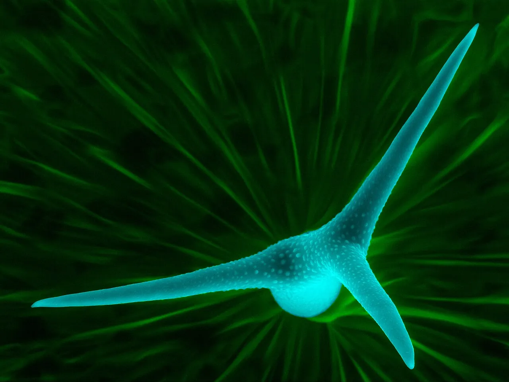

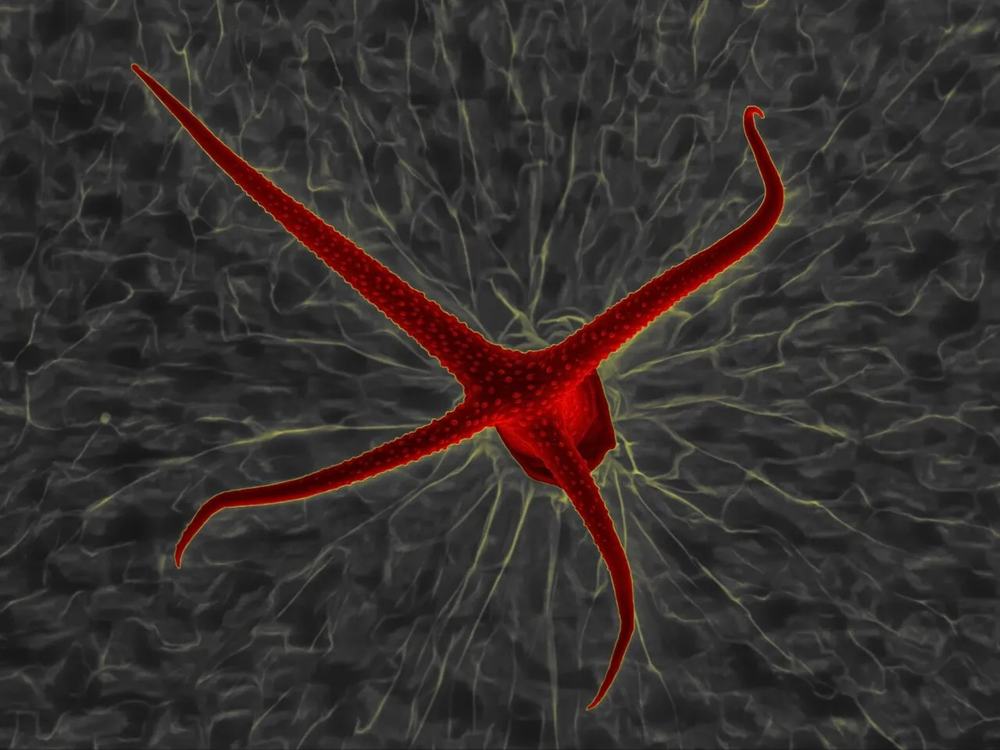

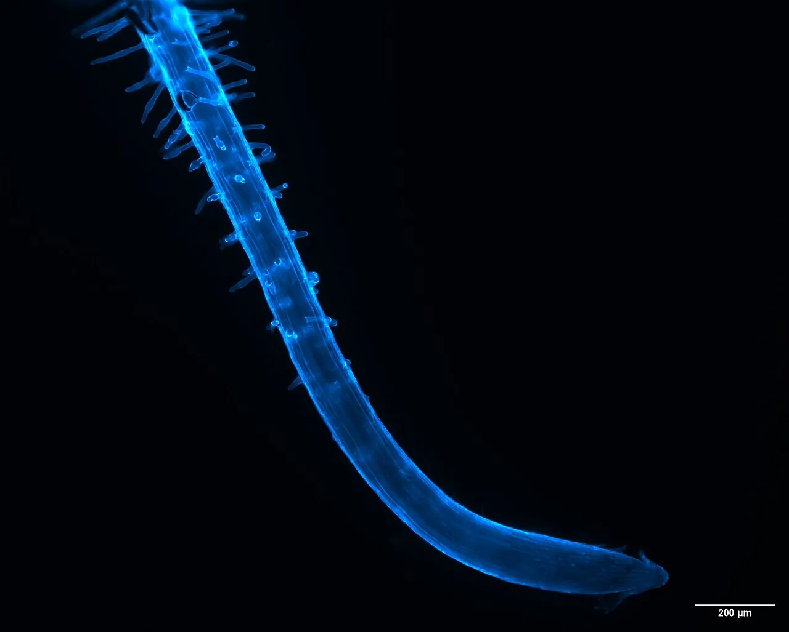

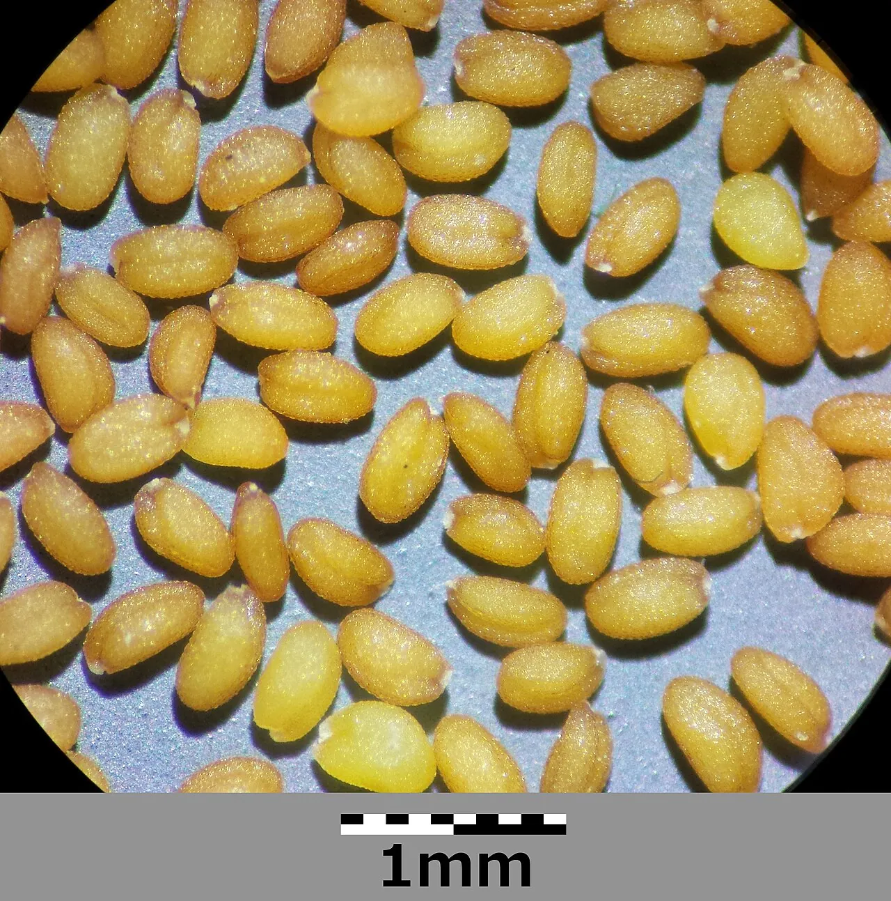
Джерела до розділу: [73] [74] [75] [76] [77] [78] [79] [80] [81] [82]
2.4Синтез антоціанів, гени родини MYB
Головне. Різні MYB-активатори вмикають синтез антоціанів у різних зонах квітки й за різних умов; ще потрібні транспорт у вакуолю та її підкислення (гени PH).
Кукурудза: локус B (Booster, bHLH). Різні алелі визначають місце синтезу антоціанів:
- алель типу B-I — забарвлення лише вегетативних органів: проросток інтенсивно забарвлений, під час достигання — обгортки качана (зелені листкові тканини), але не зернівки → контраст між жовтими зернівками й темними обгортками;
- алель B-Peru — забарвлює й листки, і зернівки (майже чорні). Такий контроль через bHLH рідкісний; частіше специфіку задають MYB.
Петунія: чотири MYB-активатори антоціанів (назви історичні):
- AN2 (ANTHOCYANIN2) — працює в відгині (лімбі) зрослопелюсткового віночка: забарвлений відгин і біла неснарбована пляма в зіві;
- AN4 — працює в трубці віночка: якщо діє лише він — чітка кругла пляма в центрі;
- DPL (DEEP PURPLE) — прив'язаний до жилок: глибоке малинове жилкування;
- PHZ (PURPLE HAZE) — «пурпуровий серпанок» на зворотному боці пелюсток і в чашолистках, у бутонах; індукується світлом, захист від УФ (білі квітки можуть мати забарвлені бутони).
Крім активаторів є MYB-репресори (напр., MYB27, MYBx), що конкурують за місце в комплексі.
Залежність від світла: на яскравому сонці/УФ рослини «засмагають» (бронзове, червонувате забарвлення) — різко зростає експресія MYB-активаторів (переважно PHZ, трохи DPL), тоді як рівень WD40 і bHLH майже незмінний. У темряві/тіні зростає експресія репресора MYB27 → антоціанів менше.
Масштаб регуляції: надекспресія MYB-активаторів (PHZ, DPL) посилює експресію практично всіх генів біосинтезу антоціанів — від фенілаланін-аміак-ліази (PAL) до антоціанідинсинтази, глікозилтрансфераз і генів транспорту у вакуолю. Один комплекс запускає цілий фізіологічний процес.
Вакуоля та pH. Накопичення антоціанів неможливе без підкислення вакуолі протонними АТФазами тонопласта; заряд мембрани забезпечує транспорт антоціанів; кінцевий pH вакуолярного соку визначає відтінок кольору. Відповідні гени петунії названо PH (від pH):
- PH1, PH5 — протонні помпи (P-АТФази) тонопласта;
- PH4 — MYB-фактор, що в складі MBW-комплексу регулює вакуолярні процеси й вмикає гени вторинної відповіді — WRKY-фактор (PH3), а той — ефекторні гени підкислення. Тобто «оркестрований» розв'язок задачі забарвлення: ферменти фенольно-флавоноїдного шляху + транспорт у вакуолю + підкислення (кількість і відтінок пігменту) + стабільність до вицвітання — для залучення запилювачів.
Аромат. MYB-фактор петунії ODORANT1 (ODO1) перемикає фенольний метаболізм з антоціанів на летючі бензеноїди/фенілпропаноїди (ванілін, бензилбензоат, метилбензоат, евгенол, ізоевгенол). У видів, що запилюються нічними комахами, MYB-фактори також активують ABC-транспортер плазмалеми, що виводить летючі речовини й посилює запах. Ті самі комплекси, але з іншими MYB-компонентами.
WRKY — вторинні ФТ, що зазвичай вмикаються після MBW-комплексу (можливо, іноді входять до більших комплексів чи мають власні мішені). Назва — від тандему W-R-K-Y (триптофан–аргінін–лізин–тирозин); мотив зв'язує Zn, β-складки взаємодіють з ДНК.
Вмикайте MYB-активатори й змінюйте освітлення.
Ферменти → транспорт → підкислення вакуолі.
Повзунок змінює кислотність вакуолярного соку.

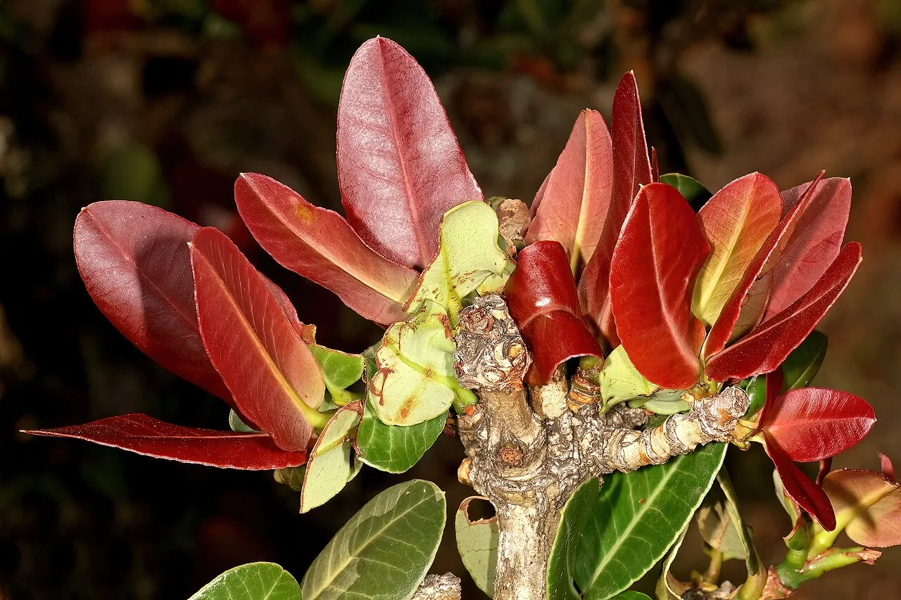
Джерела до розділу: [83] [84] [85] [86] [87] [88] [89] [90] [91]
2.5Ремоделювання хроматину
Головне. Ремоделювання хроматину й гени Polycomb перемикають програми розвитку; інсулятори ділять геном на функціональні домени.
Не всі ФТ зв'язуються з ДНК: до справжніх ФТ (напр., MADS) приєднуються транскрипційні кофактори, які рекрутують комплекси модифікації та ремоделювання хроматину. Великий транскрипційний комплекс: один білок впізнає промотор, решта — модифікують хроматин.
Механізми:
- Метилювання ДНК — мітка зниження активності: метильовані гени менш активні;
- Модифікації гістонів, зокрема ацетилювання (гістонацетилтрансферази / деацетилази) — впливають на ступінь збирання нуклеосом;
- РНК-спрямоване ущільнення: за гомологією з некодуючою РНК ділянка ДНК, визнана «шкідливою» (напр., транспозон), ущільнюється й вимикається;
- АТФ-залежні комплекси ремоделювання:
- assembly — збирання нових нуклеосом на вільній ДНК;
- sliding — ковзання нуклеосоми вздовж ДНК без втрати зв'язку;
- eviction — «виселення» нуклеосом (розбирання, ДНК розплітається й активується);
- unwrapping — послаблення зв'язку ДНК з гістонами;
- заміна гістонів варіантами (зміна складу октамеру), що змінює конформацію ДНК.
Інсулятори. Розплітається не вся ДНК одразу, а ділянки, обмежені інсуляторами, що поділяють геном на функціональні домени (петлі). Між двома інсуляторами — кілька генів подібної функції; щоб їх активувати, петлю треба розпушити, а щоб вимкнути — компактизувати. У основі петель — комплекси ремоделювання. Отже, важливе генне оточення й розташування інсуляторів. У рослин інсулятори передбачаються, але молекулярні механізми їх впізнавання ще не досліджено.
Polycomb — перемикання програм розвитку. Гени групи Polycomb (уперше знайдені в дрозофіли) у рослин критичні для зміни фаз розвитку:
- пригнічення всієї системи → сильно спотворені рослини з порушеною диференціацією («мішанина» тканин), часто летальні;
- окремі компоненти (комплекс PRC2):
- гени FIS (FERTILIZATION-INDEPENDENT SEED: MEDEA, FIS2, FIE) — синхронізація розвитку зародка й ендосперму; при мутаціях ендосперм (чи навіть зародок у fie) розвивається без запліднення;
- EMF (EMBRYONIC FLOWER) — перехід до вегетативного розвитку; у мутанта одразу після сім'ядоль утворюється квітка (без вегетативної фази);
- яровизація (вернализація) і стратифікація насіння — тривале охолодження переводить рослину із «зимового» стану до цвітіння чи проростання; також регулюється через пакування хроматину (епігенетичне вимкнення FLC).
Підсумок: експресія гена визначається (1) цис-елементами в промоторах, (2) транс-факторами (ФТ та інші компоненти транскрипційних комплексів) і (3) факторами ремоделювання хроматину, що здійснюють глобальну регуляцію активності геному.
Оберіть тип і натисніть «Запустити ремоделер».
Гени групи Polycomb перемикають програми розвитку, пакуючи цілі ділянки хроматину.
Рухайте повзунок тривалості охолодження.

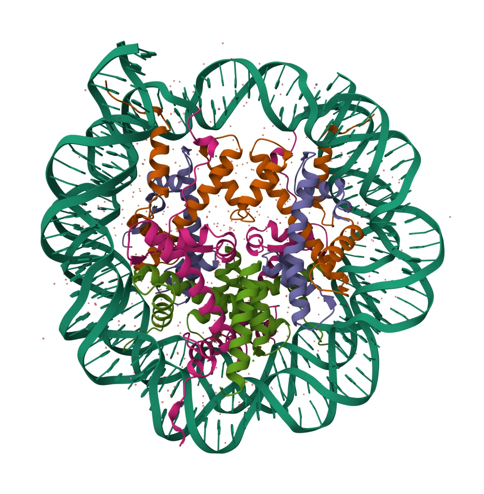
Джерела до розділу: [92] [93] [94] [95] [96] [97] [98] [99] [100] [101] [102] [103] [104] [105] [106] [107] [108] [109] [110] [111]
Перевірте себе
Назвіть три групи чинників, що визначають експресію гена.
Що означає MADS і чим характерні MADS-білки?
Яку роль виконує білок TTG1 в MBW-комплексі?
Чим відрізняються дії AN2, AN4, DPL і PHZ у петунії?
Які п'ять типів роботи АТФ-залежних ремоделерів нуклеосом?
Трансформація рослин
Як бактерія, що спричиняє пухлини, стала головним інструментом генної інженерії рослин: від корончастого гала до бінарних векторів і генної гармати.
Трансформація — стандартний метод отримання генетично модифікованих (ГМ) рослин у практиці та фундаментальних дослідженнях. Найкраще розроблена — агробактеріальна трансформація, відкрита завдяки вивченню пухлин, які спричиняють бактерії.
3.1Агробактеріальні пухлини. Біохімічна специфіка пухлин
Головне. Агробактерія викликає пухлини, де виробляються опіни — їжа лише для неї самої («генетична колонізація» рослини).
Корончасті гали. 1907 р. із корончастого гала виділено Agrobacterium tumefaciens. Пухлини злоякісні: навіть після знищення бактерій антибіотиком ріст триває. Хвороба зазвичай починається біля кореневої шийки, далі бактерії можуть поширюватися вгору; у тяжких випадках гал «стягує» всі поживні речовини, рослина дає лише слабкі пагони.
Споріднені види та їхні хвороби:
| Вид | Хвороба / особливість | Плазміда |
|---|---|---|
| A. tumefaciens | корончастий гал, широке коло дводольних (трави, кущі, дерева) | Ti (tumor-inducing) |
| A. rubi | «кореневий рак» малини (й інших Rubus) | Ti з трьома Т-ділянками, що переносяться незалежно |
| A. rhizogenes | «косматі (бородаті) корені» (hairy roots): ростуть без тропізмів, дуже багато кореневих волосків; іноді з пухлини виростають пагони й рослина нормалізується | Ri (root-inducing) |
| A. vitis | корончастий гал винограду (поширився з кінця XIX ст. з масовим щепленням) | Ti з однією Т-ділянкою |
| A. radiobacter | непатогенний, живе в ризосфері, споживає кореневі виділення | плазмід Ti/Ri немає |
Агробактерії генетично близькі до ризобій (родина Rhizobiaceae).
Пошук господаря (хемотаксис). Пошкодження коренів дводольних виділяє фенольну сполуку ацетосирингон; руйнування клітинної стінки звільняє глюкуронову/галактуронову кислоту, арабінозу, глюкозу — ще один сигнал. Бактерії спрямовуються до поранення.
Опіни — нові речовини в пухлині, продукти конденсації двох молекул (амінокислота + кетокислота, цукри тощо) з частковим відновленням:
- нопалін = аргінін + α-кетоглутарат;
- октопін = аргінін + піруват (уперше виділений 1927 р. з м'язів восьминога Octopus; у молюсків утворюється при гіпоксії — відновлювальні еквіваленти NADH «скидаються» на багаті азотом сполуки, а не на піруват→лактат, як у людини);
- агроцинопіни A/B — фосфодиефіри цукрів; манопін — маноза + глутамін(ат); кукумопін — похідне гістидину; агропін (у Ri-плазмід).
Класифікація штамів за опіном: нопалінові, октопінові тощо. Різні опіни в одній пухлині зазвичай не трапляються; між штамами є конкуренція.
Біологічний сенс опінів («генетична колонізація»): рослина не здатна їх катаболізувати → продукти фотосинтезу та елементи живлення (N, P) вилучаються з її метаболізму; рослина у відповідь шле в пухлину нові порції N, P, асимілятів, а пухлина знову робить із них опіни — так «стягує» ресурси з усієї рослини. Опіни катаболізує лише агробактерія відповідного типу (гени катаболізму — на тій самій плазміді).

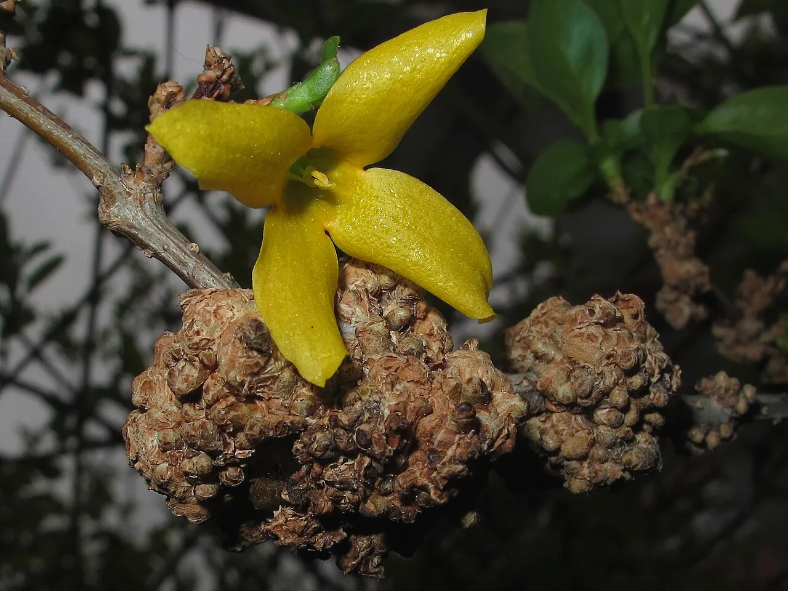

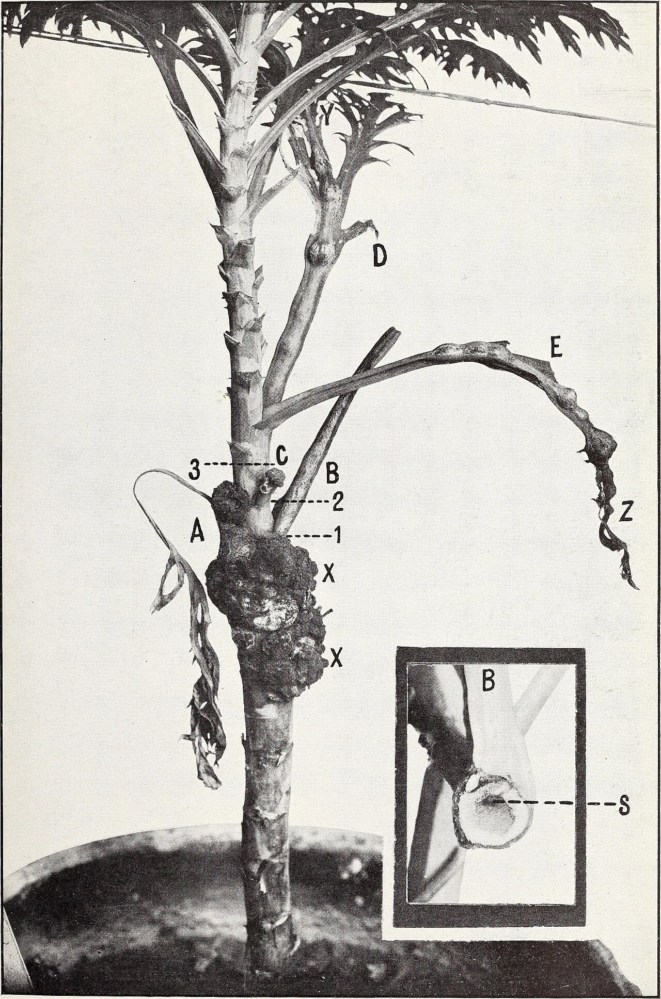

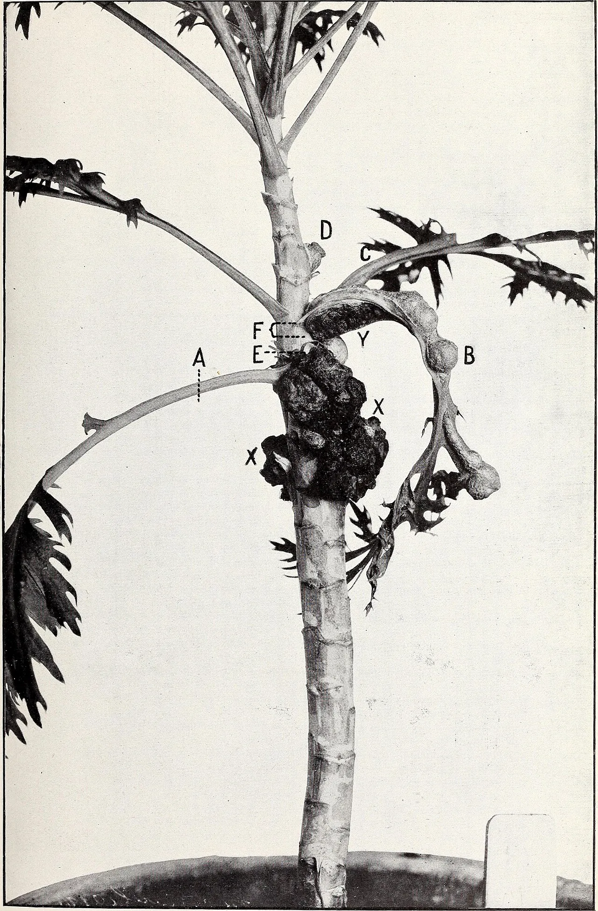

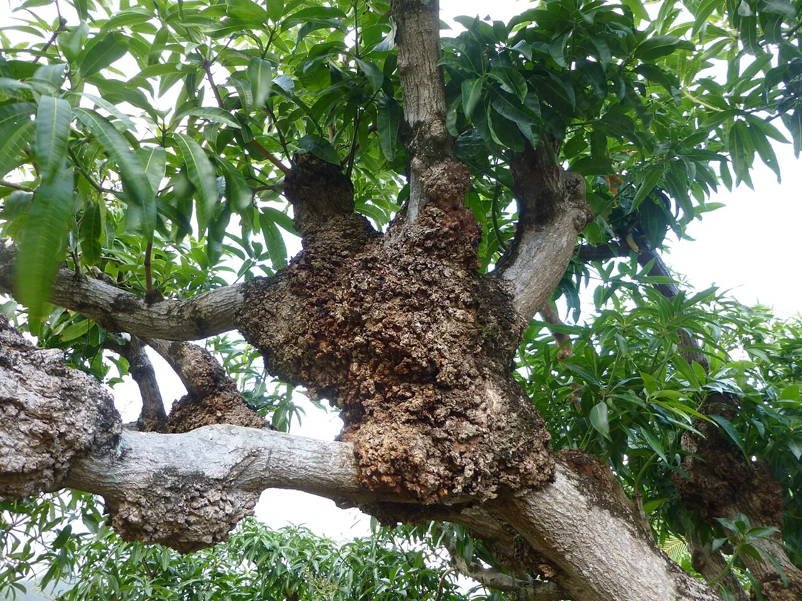

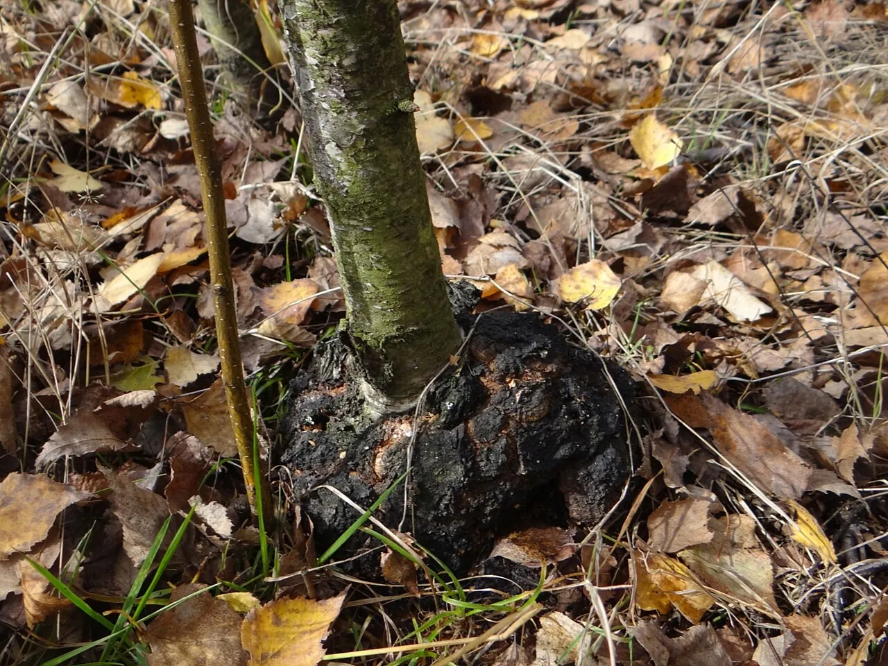

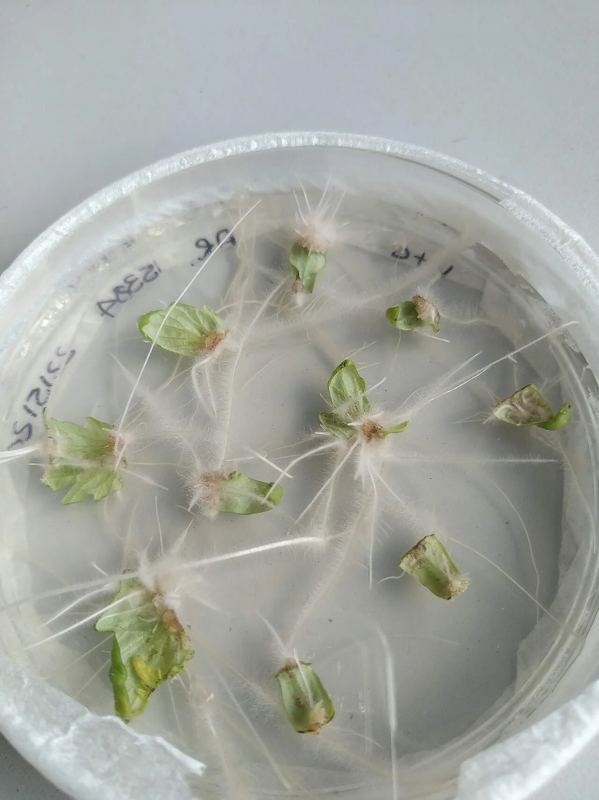
Оберіть опін — і побачите, з чого він «зібраний».
Анімація потоків ресурсів між рослиною, пухлиною й агробактерією.

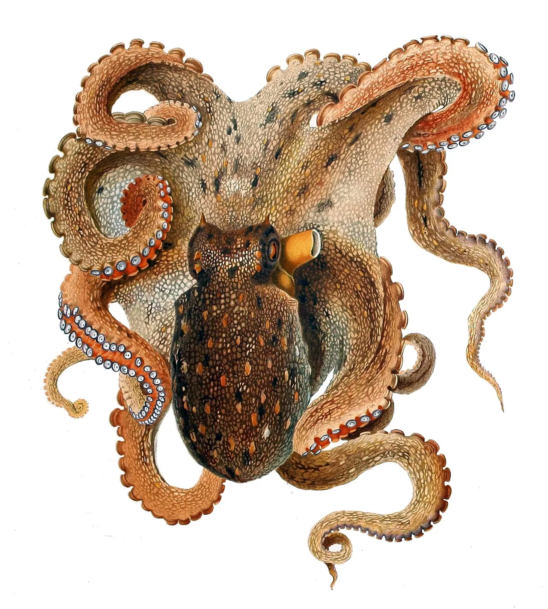
Джерела до розділу: [112] [113] [114] [115] [116] [117] [118]
3.2Гормон-незалежний ріст. Генетичні функції Ti-плазмід
Головне. Ti-плазміда (vir-ділянка + Т-ДНК) визначає вірулентність і коло господарів; Т-ДНК вбудовується в геном рослини.
Для поділу клітин потрібні ауксини й цитокініни. Тканину пухлини, звільнену від бактерій, вирощують in vitro без додавання гормонів — вона синтезує їх сама. Пухлина пронизана ксилемою і флоемою. Видимий гал з'являється приблизно за місяць.
Ti-плазміда визначає вірулентність і коло господарів:
- vir-ділянка (оперони virA–G): мутації різко знижують вірулентність;
- Т-ділянка (T-DNA) під дією продуктів vir копіюється, переноситься в клітину господаря й інтегрується в геном.
Особливості: великий розмір (~200 kb, важко маніпулювати напряму); низька копійність (власний ori); легко втрачається (у ґрунті лише ~5 % клітин вірулентні); здатна до кон'югативного переносу пілею (активується пораненим господарем/опінами); дає селективну перевагу в пухлинах. У природі вражає переважно дводольні, але є протоколи й для однодольних та голонасінних.
Вірулентність і коло господарів визначає саме вона.
Джерела до розділу: [114] [115] [119] [120] [121] [122] [123] [124] [125]
3.3Родина Rhizobiaceae. Види Agrobacterium
Головне. Усі види Rhizobiaceae конкурують за корені; ризобії спеціалізуються завдяки симбіотичній плазміді, а агробактерії — Ti/Ri.
- Усі види, включно з непатогенним A. radiobacter, конкурують за корені: корінь, колонізований A. radiobacter, гірше заражається патогенами.
- Ризобії специфічно взаємодіють з господарем завдяки великій симбіотичній плазміді (pSym): R. leguminosarum — горох; R. phaseoli — квасоля; Sinorhizobium meliloti — люцерна/буркун; Bradyrhizobium japonicum — соя. Без pSym бульбочки не утворюються — пряма паралель з Ti-плазмідою.
Усунення агробактерій. У лабораторії — цефалоспорини (цефотаксим/клафоран) у високій дозі (у рослин немає мішені, тож концентрацію можна підняти, потім знижувати). У полі — агротехніка (зволоження, кількарічні однодольні), біоконтроль непатогенним A. radiobacter K84 (нестабільний) та бактеріофаги (1975 р. — 4 помірні фаги; у полі знижують кількість галів на саджанцях ліщини).

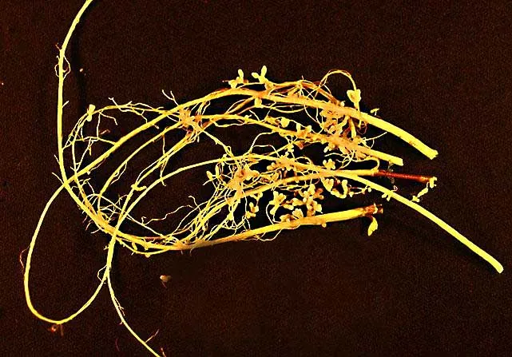


3.4Транспорт оц-ДНК і білків
Головне. VirA/VirG вмикає vir-гени → VirD2 вирізає одноланцюгову Т-ДНК → T4SS переносить її через сім бар'єрів.
Впізнавання пораненого господаря — система VirA/VirG.
- VirA — мембранний сенсор внутрішньої мембрани (гідрофобні α-спіралі, петля в періплазмі й петля в цитозолі); працює як димер, гістидинкіназа. Сайт зв'язування ацетосирингону — з внутрішнього (цитоплазматичного) боку.
- Малий білок ChvE зв'язує вільну галактуронову кислоту/моносахариди й підвищує спорідненість VirA до ацетосирингону.
- VirA автофосфорилюється по гістидину → переносить фосфат на аспартат VirG (фосфотрансмітер і фактор транскрипції) → VirG вмикає решту vir-генів. (Паралель: у рослин цитокініновий сигнал теж передається через рецепторні кінази His→Asp.)
Вирізання Т-ДНК. Межі (RB, LB) — консервативні 25 bp. Комплекс VirD2+VirD1 надрізає їх; VirD2 ковалентно приєднується до 5′-кінця одноланцюгової Т-ДНК (пілот-білок). Одноланцюгова Т-ДНК витісняється, а на місці добудовується новий ланцюг (реплікація за «котячим кільцем») — з однієї Ti-плазміди можна зробити багато копій Т-ДНК. Спроби скопіювати решту плазміди зазвичай невдалі (оцДНК швидко рветься).
Сім бар'єрів. Щоб потрапити з бактерії в ядро рослини, оцДНК долає 7 перешкод: внутрішня мембрана → періплазма → зовнішня мембрана → клітинна стінка → плазмалема → цитоплазма → ядерна оболонка.
Транспортний комплекс VirB (система секреції IV типу, T4SS). 11 білків оперону virB + VirD4:
- VirB4, VirB11, VirD4 — цитоплазматичні АТФази (гексамери): «ловлять» Т-ДНК і білки й змінюють їхню конформацію (розплітання + фолдинг, що потребує АТФ);
- VirB3/VirB6 — пора у внутрішній мембрані;
- VirB1 — гідроліз пептидоглікану (без цього збирання неможливе);
- VirB8/VirB10 — внутрішня частина пори; VirB7/VirB9 — проходження зовнішньої мембрани;
- VirB2 — білок пілі (спіральна укладка, порожниста всередині); VirB5 — «віночок» на верхівці, продірявлює мембрану господаря. Структурно й функціонально T4SS споріднена з кон'югативними системами плазмід (напр., RP4): той самий механізм переносу оцДНК з клітини в клітину був «злегка модифікований» для переносу в еукаріота. Тому агробактерія в експерименті може переносити Т-ДНК навіть клітинам тварин/людини — великої специфічності немає, пара «агробактерія–рослина» лише типова.
Адгезія. На поверхні агробактерії нерівномірно розташований уніполярний полісахарид (UPP), яким вона стає «сторч» у місці контакту; мутанти синтезу UPP прикріплюються боком. Міцний контакт потрібний для транспорту.
Дев'ять кроків: від ацетосирингону до експресії онкогенів. Крок 4 — сім бар'єрів; крок 6 — розбирання комплексу.

Джерела до розділу: [132] [133] [134] [135] [136] [137] [138] [139]
3.5Взаємодія з господарем
Головне. Т-комплекс «одягається» в VirE2/VIP1, обминає захист рослини й вбудовується NHEJ у випадкове місце; не всі копії інтегруються (транзієнтна експресія).
Імунна відповідь рослини. Рецептори плазмалеми впізнають консервативні бактеріальні молекули (PAMP): FLS2 — флагелін джгутиків; EFR — фактор елонгації EF-Tu. Кіназний каскад → ФТ (WRKY) → гени первинної імунної відповіді.
Як агробактерія уникає захисту. У клітину разом із Т-ДНК потрапляють білки, що маскують і спрямовують комплекс у ядро:
- VirD2 несе сигнал ядерної локалізації (NLS) → тягне приєднану Т-ДНК у ядро;
- VirE2 має три ролі: (1) щільно «одягає» оцДНК, захищаючи від нуклеаз (оцДНК у цитозолі — SOS-сигнал); (2) має власний NLS (резервний транспорт у ядро); (3) взаємодіє з активованим господарським білком VIP1, що також несе NLS, — комплекс додатково «вдягається» в хазяйський білок. Отже, комплекс тричі помічений сигналами (VirD2, VirE2, VIP1).
- VirF — компонент убіквітин-лігази (F-box), має спорідненість до VIP1 → після доставки в ядро VIP1 стає мішенню протеасоми й розбирається, не піднімаючи SOS-сигналу; VirD5 стабілізує VirF.
Інтеграція в геном. У ядрі VirD2 робить надрізи у випадкових місцях хроматину (неспецифічність важлива!). Репарація рослини йде переважно негомологічним з'єднанням кінців (NHEJ): розірвані кінці зшиваються з першим-ліпшим обривком → Т-ДНК вбудовується назавжди; одноланцюгова ділянка слугує матрицею для добудови.
Транзієнтна трансформація. Не всім копіям «щастить» інтегруватися: Т-ДНК може кілька днів «бовтатися» в ядрі, проявляючи генну активність, а потім втратитися під час поділу (тимчасова експресія). Тому частина клітин спершу виглядає трансформованою, але згодом втрачає ознаку.
3.6Синтез гормонів у пухлині (онкогени)
Головне. Гени Т-ДНК роблять ауксин (iaaM, iaaH) і цитокінін (ipt) поза контролем рослини → гормон-незалежний ріст; баланс гормонів визначає морфологію пухлини.
Важливо: у Т-ділянці гени під еукаріотичними промоторами — всередині бактерії вони мовчать, працюють лише в рослині.
Мутанти патогенезу: tms (tumor morphology shoot, «коса шута») — пухлини з пагонами; tmr (tumor morphology root) — з коренями, пухлина більша. Функції:
- при пошкодженні біосинтезу ауксинів баланс зсувається до цитокінінів → пагони (отже, це гени синтезу ауксину);
- при пошкодженні синтезу цитокінінів — надлишок ауксинів → корені.
Синтез ауксину (ІОК) — два гени, два етапи:
- IaaM (tms1) — триптофанмонооксигеназа: триптофан → індол-3-ацетамід (одноетапне окисне декарбоксилювання);
- IaaH (tms2) — гідролаза: індол-3-ацетамід → індол-3-оцтова кислота (ІОК/ауксин). Індол-3-ацетаміду в рослинах зазвичай немає; синтез ІОК стає непідконтрольним рослині.
Звідки гени? У природі є бактерії, що модифікують ріст рослин через ауксин: Pseudomonas savastanoi (пухлини оливи), ендофіти P. syringae, Rhizobium тощо — доброякісні пухлини (після антибіотика ріст спиняється, бо немає гормон-незалежного росту). Ризобії теж несуть один із цих генів на pSym і «підганяють» господаря до утворення бульбочок.
Синтез цитокінінів — один ген:
- Ipt (tmr) — ізопентенілтрансфераза: переносить ізопентенільний залишок на аденінове ядро (у складі АМФ) → ізопентеніладенозин-монофосфат → далі (гідроксилювання, зняття фосфату/рибози) транс-зеатин. Один етап «оминає» кілька ферментів рослини → синтез цитокінінів теж непідконтрольний. Гомолог (tzs, транс-зеатинсинтаза) є поряд із vir-ділянкою — агробактерія сама виділяє трохи зеатину. Ген ipt є і в Xanthomonas oryzae (рис).
Локус tml (октопінові штами): синтез опіну + опінпермеаза (tml6a) для виведення опіну з клітини; tml6b — онкоген, здатний переміщуватися по рослині й викликати симптоми в нових місцях.
Двоетапний синтез ауксину та одноетапний — цитокініну.
Оберіть тип Т-ДНК або рухайте повзунок.
Джерела до розділу: [119] [120] [121] [122] [124] [125] [145] [146] [147]
3.7Гени rol
Головне. Гени rol Ri-плазмід (rolA–D) змінюють чутливість до гормонів і дають «косматі корені».
Ri-плазміда A. rhizogenes (агропіновий тип) має дві Т-ділянки — праву (TR) і ліву (TL):
- у TR — біосинтез ауксину й цитокініну та синтез опінів (подібно до нопалінової Т-ДНК);
- можна видалити майже всю TR, і патогенність зберігається за рахунок TL, де немає генів синтезу гормонів, але є гени rol (root loci: rolA, rolB, rolC, rolD) та відкриті рамки невідомої функції.
- Є природні кукумопінові/манопінові Ri-плазміди взагалі без правої ділянки й без генів синтезу гормонів.
Функції rol (вивчали надекспресією, переважно в тютюну й каланхое):
- rolA — зморщене листя, укорочене суцвіття;
- rolB — знижує апікальне домінування, дрібніші квітки, менше пилку; сильно підвищує чутливість до ауксину (гідрофобний; йому допомагає ORF13/ORF1); копія в TR;
- rolC — спершу думали, що це глікозидаза цитокінінів (підвищує рівень вільних цитокінінів); знижує чутливість до ауксину, зменшує розміри;
- rolD — імовірно, орнітинциклодеаміназа (синтез проліну з орнітину). Після перших публікацій досліджень мало — функції ще уточнюються.
Праворуч — «гормональна» TR, ліворуч — TL із генами rol.
Зморщене листя, укорочене суцвіття.
Знижує апікальне домінування, дрібніші квітки, менше пилку; сильно підвищує чутливість до ауксину (гідрофобний; допомагає ORF13/ORF1).
Спершу вважали глікозидазою цитокінінів (підвищує рівень вільних цитокінінів); знижує чутливість до ауксину, зменшує розміри.
Імовірно, орнітинциклодеаміназа (синтез проліну з орнітину).
Джерела до розділу: [148] [149] [150] [151] [152] [153] [154] [155] [156]
3.8Практичне використання Ri-плазмід
Головне. Культура косматих коренів — необмежено зростаючі корені без гормонів: джерело вторинних метаболітів і зручна система для мікоризи.
- Культура «косматих коренів» — необмежено зростаючі корені без зовнішніх гормонів із власною біохімічною специфікою → наробка цінних вторинних метаболітів, які синтезуються саме в коренях.
- У стерильній культурі зручно вивчати взаємодію з мікоризними грибами (кусочок косматого кореня + спори мікоризи; на якій відстані проростають, якими стимулами) і нарощувати спори арбускулярних грибів для сільгосппрепаратів (у звичайній культурі ці гриби не ростуть).
- «Роззброєні» (disarmed) Ri-плазміди дають не такі косматі корені; придатні для об'єктів, що погано уражуються Ti-плазмідою. Китайські дослідники трансформують сою, лікарські дикороси, розробляють системи регенерації (м'якша система, що підштовхує до морфогенезу).

3.9Агробактеріальна трансформація рослин
Головне. «Роззброєна» Ti + бінарний вектор. Ген інтересу — біля RB, маркер — біля LB; вибір промоторів, маркерів і репортерів.
«Роззброєння» Ti-плазміди: з Т-ділянки видаляють онкогени (iaaM, iaaH, ipt) і вставляють гени інтересу + маркерні (відбір трансформантів) та репортерні (візуалізація) гени.
Піонери (1980-ті): Марк ван Монтегю (бельгієць) і Джефф Шелл у 1980-х висували ідеї: клонувати ген запасного білка бразильського горіха → перенести в сою; створити гербіцид-стійкі культури й продавати їх у парі з гербіцидом. У середині 1980-х це звучало як фантастика, але ~за 10 років опинилося на полях США. Згодом обидва працювали в лабораторіях Monsanto і створили ~80 % світових ГМ-рослин.
Методи роззброєння та векторні системи:
- Гомологічна рекомбінація з коінтегративним вектором: онкогени заміщуються генами інтересу (ненадійно, історичне значення).
- Бінарна система (сучасна): Ti-плазміду розділяють на (а) плазміду-хелпер із vir-ділянкою (маркується, напр., стійкістю до рифампіцину, тримається в агробактерії) і (б) малу бінарну плазміду з Т-ДНК, якою маніпулюють у E. coli. Vir-продукти in trans переносять Т-ДНК бінарної плазміди. Відбір за двома антибіотиками.
- Порядок у Т-ДНК: ген інтересу — ближче до RB (добре захищений), селективний маркер — ближче до LB (часто ушкоджується): якщо LB-кінець «з'їдено», маркер пошкоджено й клітина відсіюється → гарантія інтеграції всієї конструкції.
Селективні гени: стійкість до хлорамфеніколу (старий); канаміцину (nptII, неоміцинфосфотрансфераза) — стандарт; гігроміцину (особливо рис); фосфінотрицин/гліфосат (гербіцидна стійкість). Сильні промотори: 35S вірусу мозаїки цвітної капусти (CaMV), промотор гена нопалінсинтази (nos) агробактерії; для однодольних — промотори убіквітину кукурудзи й актину рису (працюють краще). Репортерні гени: GUS (β-глюкуронідаза), GFP (зелений флуоресцентний білок) та інші.
Розділяємо Ti-плазміду на дві: хелпер (vir) і бінарну (Т-ДНК).
Симуляція переносу Т-ДНК у 60 клітин.


Джерела до розділу: [163] [164] [165] [166] [167] [168] [169] [170] [171] [172] [173] [174] [175] [176] [177] [178] [179]
3.10«Генна гармата» (біобалістика) та інші методи
Головне. Біобалістика й гострі наноматеріали застосовують там, де агробактерія не працює; генна гармата трансформує також пластиди та мітохондрії.
Агробактерія вражає не всіх господарів, тому розроблено альтернативи.
Біобалістика (генна гармата). Мікрочастинки металу (напр., вольфраму, золота), вкриті ДНК, розганяють і «вистрілюють» у стерильну тканину; за інерцією частинки відриваються й проникають у клітини.
- Спершу використовували порох, але порохові гази (оксиди азоту) пригнічують ріст — перейшли на стиснений гелій/інертні гази із заслінкою.
- Недолік: частинки ушкоджують клітини (розрив вакуолі → загибель), тож обстріл має бути «м'яким».
- Переваги: трансформує не лише ядро, а й пластиди та мітохондрії (агробактерія для цього не годиться); у клітину потрапляє багато ДНК → можлива гомологічна рекомбінація при репарації. Є дорогі лабораторні установки (регулювання тиску, відстані, навіть керування польотом частинок електромагнітним полем) і дешеві портативні (для транзієнтної експресії).
- Транзієнтна експресія корисна там, де інтеграція не потрібна: напр., наробка білка, або запуск сайленсингу (anti-sense ДНК/РНК, РНК-інтерференція) для боротьби з вірусною інфекцією — обстріляний листок сам «вичищає» вірус.
Трансформація гострими наноматеріалами. Дуже тонкі й гострі об'єкти механічно надрізають ДНК/клітини:
- карбід кремнію (SiC) — тонкі гострі кристали: у розчин чужорідної ДНК додають суспензію SiC і клітини, різко збовтують → проколювання клітин і надрізи ДНК → з певною ймовірністю чужорідна ДНК вбудовується. Дешево й масово, хоча ефективність низька.
- вуглецеві нанотрубки — сучасна заміна SiC (подібний ефект проникнення й мікропошкоджень).
- (Пересторога: будь-який надріз ДНК — мутація; тому дуже тонкі волокна, як-от азбестовий пил, є потенційним мутагеном/канцерогеном — це треба враховувати, працюючи з ріжучими матеріалами.)
Підсумок: методи трансформації різноманітні, базуються переважно на агробактерії (найрозробленіше поле); у спеціальних випадках — біобалістика або трансформація нанотрубками/нанокристалами.


| Метод | Що вносить / як діє | Господарі | Що трансформує | Особливості |
|---|---|---|---|---|
| Агробактерія | Т-ДНК бінарного вектора; vir-продукти переносять її в ядро | Переважно дводольні; є протоколи й для однодольних та голонасінних | Ядро | Найрозробленіше поле; інтеграція в геном назавжди (NHEJ) |
| Біобалістика (генна гармата) | Мікрочастинки вольфраму чи золота, вкриті ДНК, «вистрілюють» у стерильну тканину стисненим гелієм | Не обмежена колом господарів | Ядро, пластиди й мітохондрії | Багато ДНК у клітині → можлива гомологічна рекомбінація; частинки ушкоджують клітини; зручна для транзієнтної експресії |
| Карбід кремнію (SiC) | Тонкі гострі кристали проколюють клітини й надрізають ДНК, коли суспензію різко збовтують | Широке коло | Ядро | Дешево й масово, ефективність низька |
| Вуглецеві нанотрубки | Сучасна заміна SiC: подібне проникнення й мікропошкодження | Широке коло | Ядро | Будь-який надріз ДНК — мутація; тонкі волокна можуть бути мутагенними — враховувати під час роботи |


Джерела до розділу: [180] [181] [182] [183] [184] [185] [186] [187] [188]
Перевірте себе
Що таке опіни і навіщо вони агробактерії?
Опишіть систему VirA/VirG.
Яка роль VirD2, VirE2 і VirF?
Чому ген інтересу ставлять біля RB, а селективний маркер — біля LB?
Коли застосовують біобалістику замість агробактерії?
Трансгенні рослини в дослідженнях
Арсенал молекулярної біології рослин: мутагенез, промотори, репортери, індукована експресія, РНК-інтерференція, дегрони, аблація та редагування геному.
Арсенал ДНК/РНК-технологій на основі трансгенних рослин: інсерційний мутагенез, надекспресія, аналіз структури й патернів промоторів, ектопічна й індукована експресія, сайленсинг, «генетична хірургія», редагування геному. Перелік неповний і щороку оновлюється.
4.1Інсерційний і транспозонний мутагенез
Головне. Кожна вставка ДНК — це мутація; Т-ДНК і транспозони «мітять» гени й полегшують їхнє клонування.
Будь-яка вставка ДНК у геном — це мутація. Навіть трансформація з самим лише селективним маркером дає вставку у випадкове місце; якщо вона потрапляє в ген чи промотор — виникає мутантний фенотип. Масова трансформація → багато інсерційних мутацій; далі доводять, що мутація пов'язана саме зі вставкою (ген «помічений» Т-ДНК → легко клонувати).
Транспозонний мутагенез. Транспозон вставляється / вирізається в межах однієї хромосоми. Конструкцію розбирають на дві частини:
- транспозаза під сильним промотором (на одній хромосомі) забезпечує стрибки;
- касета з селективним маркером (напр., стійкість до канаміцину), обрамлена TIR, перестрибує. Мутації виявляються зчепленими з маркером. Перевага: можна «прицільно» мутувати потрібну хромосому (куди вбудовано конструкцію).
Щоб маркер працював у всіх тканинах, його ставлять під конститутивні промотори (напр., промотор нопалін- або октопінсинтази агробактерії).
Мічення гена вставкою.
Джерела до розділу: [37] [189] [190] [191] [192] [193] [194] [195] [196] [197] [198]
4.2Сильні та синтетичні промотори
Головне. Промотор добирають під завдання (вірусні, «домашнього господарства», тканинні, синтетичні); потрібні ділянки знаходять делеційним аналізом.
Вірусні сильні промотори:
- 35S вірусу мозаїки цвітної капусти (CaMV) — стандарт; від нього синтезується велика РНК (35S). У вірусу є РНК-стадія зі зворотною транскрипцією (помилки), тому використовують лише промотор, не весь вірус.
- щоб не провокувати сайленсинг при повторному використанні одного промотора для кількох генів, беруть промотори інших вірусів (напр., вірусу скручування листя томата та ін.).
Промотори генів «домашнього господарства» (для ширшого кола об'єктів, бо вірусні найкраще працюють у дводольних/пасльонових):
- актин (цитоскелет, потрібен у великій кількості) — напр. з арабідопсису або рису;
- убіквітин (кукурудзи) — для однодольних;
- для фотосинтезуючих тканин — мала субодиниця Rubisco (rbcS) та білок світлозбиральних комплексів (LHC/CAB); увага: вони мають добову динаміку (активні на світлі), на відміну від актину/убіквітину.
- для трансгенезу хлоропластів — промотор великої субодиниці Rubisco (rbcL) (закодована в пластому); Rubisco — найпоширеніший білок планети (до 40 % білка листка, до 60 % у водоростей).
Синтетичні промотори (біоінформатика):
- DR5 — ауксин-залежний: кілька тандемних копій ауксин-чутливих елементів (AuxRE) → спрацьовує навіть за низьких концентрацій ауксину; слугує «репортером розподілу ауксину»;
- мінімальні синтетичні промотори для сильної конститутивної експресії.
Метод аналізу промоторів (Нам-Хай Чуа, N.-H. Chua). До промотора малої субодиниці Rubisco приєднав ген стійкості (неоміцинфосфотрансфераза) і поступово вкорочував промотор у серії трансгенних ліній → знайшов, що ділянка ~–33 від TATA-боксу відповідає за світлову активацію (видалення → втрата відповіді на світло). Сучасні модифікації простіші, але принцип той самий: серія делецій промотора + репортер.
35S вірусу мозаїки цвітної капусти (CaMV) — стандарт; використовують лише промотор, не весь вірус (в нього є РНК-стадія зі зворотною транскрипцією — помилки). Щоб не провокувати сайленсинг при повторах, беруть промотори інших вірусів. Найкраще працюють у дводольних/пасльонових.
Актин (арабідопсис, рис), убіквітин кукурудзи — для однодольних. Експресія без добової динаміки.
rbcS (мала субодиниця Rubisco) і LHC/CAB — мають добову динаміку (активні на світлі). Для трансгенезу хлоропластів — rbcL (велика субодиниця закодована в пластомі). Rubisco — найпоширеніший білок планети: до 40 % білка листка.
DR5 — кілька тандемних копій ауксин-чутливих елементів (AuxRE): спрацьовує навіть за низьких концентрацій ауксину; «репортер розподілу ауксину».
Рухайте повзунок: промотор вкорочується з 5′-боку.

Джерела до розділу: [199] [200] [201] [202] [203] [204] [205]
4.3Репортерні гени
Головне. Репортери (GUS, GFP, люциферази, RUBY) показують, де й коли працює промотор; кожен має свої обмеження.
GUS (β-глюкуронідаза, uidA з E. coli). Розщеплює штучний субстрат X-Gluc → нерозчинна синя речовина (похідне індиго) там, де працював промотор. Приклади: PIN7 (транспорт ауксину — забарвлення стели й термінальної частини зародка); рецепторна кіназа, що вмикається за ~3 дні до цвітіння (забарвлення в приймочці). Недолік: об'єкт треба вбити (фіксація, просвітлення) → лише «моментальний знімок», динаміку в одного екземпляра не простежити. Приклад патерну під впливом: промотор PAL (фенілаланін-аміак-ліаза) гороху — відповідь на зараження фітофторою (стійка раса → реакція надчутливості, некроз, лігнінові бар'єри, конденсовані таніни, антоціани; сумісна раса проходить бар'єри).
GFP (зелений флуоресцентний білок, медуза Aequorea victoria). Світиться під синім світлом; не вбиваючи об'єкт. Хромофор дозріває зі зшивання трьох амінокислот (Tyr–?–Gly). Приклад: DR5::GFP показує динаміку ауксину в зародку (рівномірно на ранніх стадіях → кореневий полюс на стадії глобули → картина на стадії «торпедо»). Недолік: надто сильне/часте збудливе світло теж токсичне. Спектральні варіанти (інженерія GFP): BFP (синій, Tyr→His), CFP (ціановий, Tyr→Trp), YFP (жовтий, додаткова електронна густина) → спостереження за двома процесами; RFP/DsRed (корал Discosoma). FRET — передача енергії між близькими білками → виявлення взаємодії молекул. Інженери також оптимізують швидкість дозрівання (раніше зафіксувати ввімкнення) та швидку деградацію (швидко «гасне» після вимкнення).
Люциферази.
- Люцифераза світляка (субстрат люциферин) + просочування рослини люциферином → реєстрація світіння in vivo (напр., під LHC-промотором). Недолік: люциферин у високих концентраціях токсичний; успіх залежить від рівномірності просочення.
- Грибна люцифераза (напр., Neonothopanus/Omphalotus): працює від кофейної кислоти через ферменти (гіспідин-синтаза, гідроксилаза → 3-гідроксигіспідин = грибний люциферин). Треба перенести 3–4 грибні гени — і рослина світиться автономно, без субстрату ззовні. Світло в «зеленому провалі» хлорофілу (не поглинається). Дає змогу стежити за фенольним метаболізмом неінвазивно: механічне поранення → спалах за секунди; видно циркадні ритми.
Кольорові метаболіти як репортер — конструкція RUBY. Синтез бетанінів (буряково-червоні пігменти; буряк, кактуси, амарант, бугенвілія — замість антоціанів). RUBY = три злиті кодувальні ділянки ферментів синтезу бетаніну, розділені самовирізальними пептидами 2A, під 35S → червоне забарвлення без приладів і хімікатів; видно навіть трансгенні насінини в стручку. DR5::RUBY дає ті самі смуги вздовж жилок, що й GFP. Недолік: бетаніни накопичуються й не зникають → видно лише ввімкнення, не вимкнення. Застосування: томати, баклажани, картопля (стають стійкішими до грибних хвороб; бетаніни — антиоксиданти).
Пастки промоторів (promoter/enhancer trap). Безпромоторний GUS за транспозоном «ловить» промотори при перестрибуванні; приклад — промотор, активний у найповерхневішому шарі (протодерма/ATML1) → маркер поверхневих клітин.


Увімкніть потрібні вимоги — підходящі репортери залишаться яскравими.
Піки емісії та взаємодія молекул.


Червоний бетанін видно без приладів: у томатах, баклажанах, картоплі бетаніни ще й антиоксиданти, які підвищують стійкість до грибних хвороб.
Джерела до розділу: [206] [207] [208] [209] [210] [211] [212] [213] [214] [215] [216]
4.4Ектопічна експресія
Головне. Ектопічна експресія вмикає ген «не там»; двокомпонентна система (драйвер × таргет) допомагає зі слабкими промоторами.
Ектопічна експресія — активність гена не там, де належить. Класичний приклад — мутант Knotted1 (kn1) кукурудзи (вузлики на листку; перший знайдений у рослин гомеобокс-ген) — природна ектопічна експресія KNOX у листку. Сучасно: промотор одного гена + кодувальна частина іншого:
- STM (SHOOT MERISTEMLESS, KNOX) у примордії листка → збереження недиференційованого стану, тривала проліферація → лопатеві/зубчасті листки (замість гладкого краю в арабідопсису).
Система двох ліній (трансактивація, LhG4/Op або GAL4/UAS). Для слабких промоторів: лінія-драйвер (промотор гена 1 + химерний активатор на основі lac-репресора E. coli без репресорної функції) × таргетна лінія (кілька копій lac-оператора перед геном 2). Химерний білок зв'язує оператор і активує еукаріотичну експресію; оператора в геномі рослин немає → специфічність. Приклад: промотор APETALA3 керує AGAMOUS → втрата пелюсток і чашолистків, зупинка розвитку квітки.
Перемикайтеся між батьківськими лініями та покоління F₁.
4.5Індукована експресія
Головне. Індуковані системи вмикають ген за командою експериментатора: тепло/холод, дексаметазон, естроген, етанол, тетрациклін.
Експресія вмикається за волею експериментатора.
Власні промотори рослин:
- білки теплового шоку (HSP, напр. HSP18.2) — індукція нагріванням до ~37–40 °C (HSP — шаперони фолдингу; активуються ФТ HSF зі структурою «спіраль-поворот-спіраль», що зв'язують HSE-елементи). Недолік — «підтікання» (leaky): за норми теж потрібно трохи HSP. Приклад: X-Gluc під HSP-промотором мовчить при 22 °C, після 30 хв нагрівання прошивається все; можна нагріти навіть окремі клітини лазером. Застосування: флориген (FT) під HSP-промотором в евкаліпта → кілька годин нагрівання → квітки за ~9 тижнів → прискорення селекції дерев.
- білки холодового стресу (COR) — індукція охолодженням до ~0–5 °C; ФТ типу AP2/EREBP (CBF/DREB); частково перекриваються з відповіддю на посуху; антифризні білки проти кристалів льоду.
Чужорідні (рослинам невластиві) індуковані системи — без «підтікання»:
- глюкокортикоїдна (GR) система (індуктор — дексаметазон): химерний білок lac-зв'язування + GR-домен + активатор (GAL4); без гормону зв'язаний з HSP90 у цитозолі й не йде в ядро; дексаметазон → звільнення → ядро → експресія. Приклад: подвійний мутант gl1 gl3 (голий лист) + pLGL3::GR-GL3: без дексаметазону — голу рослину; через 4 год після обробки — нові трихоми, через 7 днів — нові листки, суцільно вкриті волосками (обхід летальності ранньої надекспресії).
- естрогенна (людський ER) система (індуктор — естроген) — аналогічно; можна «намалювати» естрогеном літери й побачити локальну експресію. Недолік тваринних гормонів: повільна дифузія, бар'єри → реакція не охоплює всю рослину одночасно.
- етанол-індукована система (ФТ AlcR + промотор алкогольдегідрогенази alcA з Aspergillus): реагує на пари/полив спиртом; швидко поширюється по рослині (видно за люциферазою); лінійна відповідь у певному діапазоні.
- тетрациклінова система — активатор або репресор, злитий із tet-рецептором: з тетрацикліном ген вмикається або вимикається.
Оберіть систему, додайте індуктор — і дивіться, що змінюється.

Джерела до розділу: [218] [219] [220] [221] [222] [223] [224] [225]
4.6Сайленсинг і вимкнення генів
Головне. Антисенс і РНК-інтерференція вимикають гени на рівні РНК (siRNA → RISC).
Антисенс-супресія (відкрита 1978 р.). Якщо в клітині одночасно є смислова мРНК і комплементарна антисенс-РНК — утворюється дволанцюгова РНК, яку клітина знищує → продукт не синтезується. У конструкції кодувальну частину гена пришивають до промотора (напр. 35S) у зворотній орієнтації. Достатньо навіть короткого фрагмента (~13–25 нт). Недолік: протяжні антисенс-ділянки вимикають і гомологічні гени родини — тому майже не використовуються.
Способи блокування на рівні РНК:
- антисенс-олігонуклеотиди блокують рух рибосоми; дволанцюгова ділянка — мішень для РНКази H;
- рибозими — штучна РНК з ділянкою гомології + рибозимною активністю розрізає цільову РНК;
- siRNA (мала інтерферуюча РНК) — короткий дволанцюговий фрагмент впізнається комплексом RISC і слугує «еталоном»: усі РНК із цією послідовністю руйнуються.
Сайленсинг (RNAi). Уперше виявлено на петунії (вимкнення 35S-конструкції; петунія бореться з петувірусами, тому система розвинена). Небажана РНК ріжеться на фрагменти 21–23 нт, що взаємодіють з RISC (компоненти — Dicer, Argonaute); запускається деградація; siRNA переносяться плазмодесмами в сусідні клітини → сайленсингом охоплюються цілі органи/рослина; також діють на рівні ДНК (метилювання, ремоделювання хроматину). Сучасна конструкція: кодувальна частина + інвертований повтор у кінці → шпилька на 3′-кінці → ріжеться на siRNA → власна система запускає сайленсинг (знижує експресію, часто не до нуля). Приклади: сайленсинг AG → махрові квітки; сайленсинг каротиноїд-диоксигеназ у «білої» хризантеми → проявляється накопичення каротиноїдів. РНК-пестициди: siRNA/dsRNA проти специфічних генів шкідника (субодиниця протеасоми, тубулін, гени линяння комах) — ціль має бути видоспецифічною, без гомології з корисними комахами, рибами, людиною. Проблеми: стабілізація РНК у природі, проникнення; частина комах уже стійка (РНК перетравлюється в кишківнику).
Від шпилькової конструкції до сайленсингу цілої рослини.

Джерела до розділу: [226] [227] [228] [229] [230] [231] [232] [233] [234] [235] [236]
4.7Деградація білка (degron-системи)
Головне. Дегрони прибирають уже синтезований білок за сигналом, напр. ауксин-залежна деградація через SCF-TIR1.
Дегрони прибирають уже синтезований білок. Приклад з фізіології рослин — деградація Aux/IAA: у присутності ауксину домен (degron) Aux/IAA впізнається убіквітин-лігазою SCF^TIR1 (F-box білок TIR1 — рецептор ауксину) → убіквітинування → протеасома. До цільового білка пришивають degron Aux/IAA → він деградує за наявності ауксину.
- Приклад: degron + Venus (швидкодозрівальний YFP): з ауксином швидко зникає; стабілізований degron (контроль) не деградує навіть через 120 хв.
- У гетерологічних системах (дріжджі, тварини) TIR1 позбавляють NLS і модифікують під синтетичний ауксин (ніша для об'ємного замісника) → індукція модифікованою молекулою.
- Загальний прийом: химера dCas9 + degron + репресор/ремоделер хроматину → транскрипцію будь-якого гена роблять залежною від ауксину (чи іншого гормону). З ауксином репресорна конструкція деградує → Venus «розгоряється».
- Замінюючи degron, стежать за концентрацією гіберелінів чи жасмонатів (біосенсори): напр., ядра зародка/ендосперму, на які діяв гіберелін, жовтіють; поранення → поширення жасмонатного сигналу по листку.
Додайте ауксин і рухайте час: сигнал Venus згасає. Контроль — стабілізований degron.
4.8Генетична хірургія (аблація)
Головне. Аблація (DTA, барназа) вибірково вбиває клітини; барназа/барстар дають чоловічу стерильність і гібриди F₁.
Аблація (нім. Ablast) — орган закладається, але рано відмирає («генетична хірургія»). Використовують гени токсинів:
- DTA (A-субодиниця дифтерійного токсину) під тканиноспецифічним промотором. Приклад: pLEAFY::DTA → квітки відмирають на ранніх етапах. Незворотно.
- Система Barnase/Barstar (Bacillus amyloliquefaciens): барназа — секретована РНКаза («молекулярна зброя»), барстар — білок-інгібітор, що закриває її активний центр (зв'язування дуже міцне, використовується й у наноматеріалах). Два гени: барназа — для аблації, барстар — для скасування.
- Чоловіча стерильність: промотор гена тапетуму (з гороху) + барназа → перенесено в пеларгонію: відмирають лише тканини пиляка, тичинкова нитка ціла. Відновлення фертильності: барстар під тим самим/35S-промотором. Лінія А (барназа) × лінія-відновник (Rf, барстар) → у нащадків F1 барназа + барстар «склеюються», РНКаза вимикається, клітини живі. Важливо для виробництва гібридів F1.
Генетичний «термінатор» (патентний захист сортів). Каскад: tet-індукований активатор → при обробці тетрацикліном рекомбіназа видаляє спейсер → промотор пізнього ембріогенезу вмикає білок, що інгібує рибосоми (RIP) → зародок у вже сформованому насінні гине. До продажу насіння обробляють тетрацикліном → зібраний фермером урожай має мертві зародки й не проростає. Викликає етичні заперечення (доступність продовольства для країн, що розвиваються).
Увімкніть лінії й дивіться, що з пиляком.
Каскад, що вбиває зародок у зібраному насінні.


Джерела до розділу: [243] [244] [245] [246] [247] [248] [249]
4.9Редагування геному
Головне. CRISPR/Cas: нокаут (NHEJ), нокін (HDR), dCas9 як платформа та редактори основ без дволанцюгового розриву.
CRISPR/Cas. CRISPR (Clustered Regularly Interspaced Short Palindromic Repeats) — бактеріальна «молекулярна пам'ять» про віруси; білок Cas (напр., Cas9) + гідова РНК (gRNA) з ділянкою гомології знаходить ціль і вносить дволанцюговий розріз. У консервативну частину можна вставити будь-яку послідовність → націлювання на будь-яке місце геному. Після редагування конструкцію Cas/CRISPR видаляють схрещуванням → лишається тільки відредагований геном (часто не відрізнити від звичайного сорту).
Інші нуклеази (до CRISPR):
- ZFN (цинкові-пальцеві нуклеази): тандем Zn-пальців (кожен впізнає триплет) + неспецифічна нуклеаза (FokI). Складні в збиранні й тестуванні (білок-ДНК взаємодія, можливі помилки) → не набули поширення.
- TALEN: повтори, кожен впізнає свій нуклеотид + FokI. Теж складні.
Репарація розривів у рослин:
- переважно негомологічне з'єднання кінців (NHEJ) — втрати/вставки нуклеотидів → зсув рамки, стоп-кодони → нокаут гена;
- гомологічна репарація (HDR) рідкісніша → для неї підвищують копійність донорної ДНК з гомологічними плечима (гемінівірусні репликони, генна гармата) → нокін (knock-in): вставка нової послідовності.
Можливості CRISPR:
- нокаут: gRNA до цільового гена → розрізи → NHEJ → мутація (прицільно, на відміну від хімічного/радіаційного мутагенезу);
- нокін: два gRNA (вирізання ділянки) + донорна ДНК з плечима гомології → HDR;
- dCas9 (дефектна, без нуклеазної активності) як платформа: + активатор ФТ (вмикання гена), + репресор/ремоделер хроматину (вимикання), + флуоресцентний білок (візуалізація локусів у хромосомах), + ферменти;
- редактори основ (base editing): dCas9/nCas9 + цитидиндезаміназа (C→U→ пара G·C → A·T) або аденіндезаміназа (A→I→ пара A·T → G·C) → прицільна заміна однієї пари основ без дволанцюгового розриву.
Оберіть режим і перегляньте, що саме відбувається з послідовністю.


Джерела до розділу: [250] [251] [252] [253] [254] [255] [256] [257] [258] [259] [260] [261] [262] [263] [264] [265] [266] [267] [268] [269] [270] [271] [272] [273] [274]
4.10Дизайн (інженерія) метаболізму
Головне. Інженерія метаболізму: зняти зворотний зв'язок/репресію, вимкнути конкурентну гілку — на прикладі каротиноїдів томата.
Нокаут/нокін для спрямування метаболізму до цільового продукту:
- зняти негативний зворотний зв'язок (нокаут месенджера, що інгібує фермент);
- зняти транскрипційне інгібування ферменту (нокаут ФТ-репресора) або надекспресія ферменту;
- вимкнути конкурентну гілку (нокаут непотрібного ферменту; miRNA/сайленсинг);
- математичні моделі (диференціальні рівняння швидкостей переходів з урахуванням активації/інгібування та зворотних зв'язків). У прокаріотів інженерія метаболізму працює чудово; у рослин через складність регуляції — скромніше, але успіхи є (вторинні метаболіти, лікарські сполуки).
Модельна система — каротиноїди томата. Фітоєн → лікопін (червоний) → (β-/ε-цикл) → α-/β-каротин → ксантофіли (зеаксантин ⇄ антераксантин ⇄ віолаксантин).
- ген каротиноїд-ізомерази (CRTISO); мутант tangerine (tan) (помаранчевий, накопичує пролікопін замість лікопіну; жовтіє листя, бляклі квітки);
- при достиганні вимикаються β-циклаза та гідроксилаза (β-каротин→ксантофіли) → у плоді переважає лікопін;
- проєкт «Xantomato»: інженерія, щоб гідроксилаза не вимикалася при достиганні → томат, збагачений ксантофілами (антиоксиданти, користь для зору) і β-каротином;
- виправлення мутації: гемінівірусний реплікон + CRISPR надрізає дефектний алель tan → HDR вставляє нормальний фрагмент CRTISO → помаранчеві томати знову стають червоними (демонстрація: редагування не лише ламає, а й виправляє гени).
Підсумок: методичний арсенал молекулярної біології рослин постійно оновлюється; багато підходів приходить з інших систем. Повний огляд неможливий, але основні принципи — інсерційний мутагенез, промоторно-репортерний аналіз, ектопічна/індукована експресія, сайленсинг, дегрони, аблація та редагування геному — дають базу для досліджень і практичних результатів.
Оберіть стан: дикий тип, мутант tan, виправлення CRISPR, «Xantomato».


Джерела до розділу: [272] [275] [276] [277] [278] [279] [280] [281] [282]
Перевірте себе
Порівняйте репортери GUS і GFP.
У чому суть двокомпонентної системи драйвер × таргет?
Як працює РНК-інтерференція?
Як барназа/барстар використовують для отримання гібридів F₁?
Чим нокаут через NHEJ відрізняється від нокіну через HDR?
Позиційний контроль розвитку
Чому ген вмикається саме в цій точці рослини: позиційна інформація, пептидні сигнали, контур WUS–CLV3, активатор–інгібітор і математичні моделі філотаксису та квітки.
Генетики добре знають, у якій послідовності вмикаються гени («партитуру»), але значно менше — чому ген вмикається в конкретній точці рослини («хореографію»). Цей розділ — позиційний контроль розвитку.
5.1Позиційна інформація
Головне. Клітини «розуміють» своє положення, зчитуючи концентрацію морфогену за порогами — модель «французького прапора» Вольперта.
Позиційна інформація — клітина «розуміє» своє розташування в організмі завдяки позиційним сигналам. Є клітини-джерела сигналу й клітини-отримувачі, що залежно від отриманої інформації розвивають ту чи іншу структуру.
Модель «французького прапора» (Льюїс Вольперт, L. Wolpert, 1969). Ряд недиференційованих клітин оцінює концентрацію морфогену, що дифундує від джерела й розпадається/поглинається:
- висока концентрація (поріг 1) → «червоний»;
- середня → «жовтий»;
- нижче порога → «синій». Регулюючи чутливість до одного й того ж морфогену, з ряду клітин роблять кілька диференційованих зон (не лише три).
Експерименти Вольперта з куркою. У бруньці крила курки є зона поляризувальної активності (ZPA) ближче до хвостового краю: її опромінення вбиває клітини → зникають пальці (слабша доза — зникає палець 4, середня — ще й 3, лишається 2; сильна — усі). Пересадка другої ZPA симетрично → подвоєння набору пальців (дзеркально). Хімічний морфоген ZPA — ретиноєва кислота (каротиноїдна природа): її градієнт задає «номер» пальця. Той самий морфоген використовується багаторазово — напр., градієнт ретиноєвої кислоти «голова→хвіст» задає відділи хребта.
Змініть дальність дифузії, чутливість і кількість зон; додайте друге джерело — отримаєте дзеркальний набір, як при пересадці ZPA.


Джерела до розділу: [283] [284] [285] [286] [287] [288] [289] [290] [291]
5.2Регулятори росту й морфогенезу в рослин
Головне. Позиційні сигнали в рослин: фітогормони, мікроРНК, короткі пептиди, рухливі ФТ та олігосахариди клітинної стінки.
Потенційні джерела позиційного сигналу в рослин (мають точки синтезу, поширюються, а мутації в них порушують морфогенез):
- фітогормони — низькомолекулярні, мають точки синтезу й поширюються; фізіологічна відповідь залежить від позиції клітини;
- мікроРНК — рухаються плазмодесмами, вимикають гени-мішені (сайленсинг) → позиційний сигнал;
- короткі пептиди — рухаються переважно апопластом (виділяються з клітин); деякі одразу закодовані коротко, інші дозрівають із пропептидів;
- рухливі фактори транскрипції — місце синтезу ≠ місце дії; найвідоміше — родина WOX; також KNOX, HD-ZIP; рухаються плазмодесмами;
- олігосахаридні сигнали — фрагменти клітинної стінки задають полярність клітини.
Низькомолекулярні; мають точки синтезу й поширюються; фізіологічна відповідь залежить від позиції клітини.
Рухаються плазмодесмами, вимикають гени-мішені (сайленсинг) — позиційний сигнал.
Рухаються переважно апопластом; деякі закодовані коротко, інші дозрівають із пропептидів.
Місце синтезу ≠ місце дії. Найвідоміше — родина WOX; також KNOX, HD-ZIP; рухаються плазмодесмами.
Фрагменти клітинної стінки задають полярність клітини.
5.3Короткі пептиди
Головне. CLE-пептиди дозрівають через ЕПР і діють через LRR-рецепторні кінази; функціональне дублювання часто маскує фенотип.
Родина CLE (назва від CLV3 + ESR-related). В арабідопсису понад 30 генів, подібних між собою.
- Синтез як пре-пропептиду: сигнальна послідовність → просвіт ЕПР → видалення сигнального пептиду → модифікації пропептиду (гідроксилювання проліну, глікозилювання) → протеоліз → зрілий короткий пептид → секреція. Порушення будь-якого етапу → збій сигналу (мутації).
- 2010 р.: усі CLE-білки арабідопсису досліджено репортером GUS — дуже складні патерни експресії (базальна частина листка, жилки, продихи, прилистки, апекс, квітки, стручки, кінчик кореня тощо).
- Нокаути часто не мають фенотипу через функціональне дублювання (пептиди схожі, взаємозамінні); фенотип виявляється лише там, де діє єдиний CLE.
Рецептори CLE — LRR-рецепторні кінази (із лейцин-збагаченим повтором): екстрацелюлярний LRR-домен зв'язує CLE (у димерній формі, необоротно → після зв'язування рецептор деградує). Приклад: CLV1 зв'язує CLV3 (увага: гени CLAVATA з різними номерами належать до різних родин — CLV1 кіназа, CLV3 пептид). Аналогія з афінною хроматографією: пептиди «розсідаються» на рецепторах → концентрація падає з відстанню від джерела.
Від пре-пропептиду до градієнта.
Джерела до розділу: [295] [296] [297] [298] [299] [300] [301]
5.4Рецепторні кінази з LRR-доменом. Диференціювання провідної системи
Головне. Система TDIF → TDR/PXY → WOX4 задає трьохзонний «прапор» провідного пучка: флоема – прокамбій – ксилема.
Система TDIF/TDR (три типи диференціювання, як «французький прапор»). У культурі клітин цинії (що переходять до диференціювання судин ксилеми) виявлено пептид TDIF (Tracheary Element Differentiation Inhibitory Factor) — CLE-пептид, що гальмує диференціювання ксилеми:
- багато TDIF → клітини «думають», що близько до флоемного полюса → флоема;
- середня доза → прокамбій → камбій;
- підпорогова (мало TDIF) → ксилема. Рецептор — TDR/PXY (мутант pxy — перервані судини й флоема, бо клітини не відчувають рівня сигналу). Сигнал передається на WOX4 (і WOX14): експресується в прокамбії, має позитивний зворотний зв'язок, запускає поділ → камбій. Експресія CLE сама під гормональним контролем (вмикається цитокініном) → сигнальний каскад.
Інженерні експерименти (підтверджують позиційну модель): посилення сигналу (35S::TDIF), інверсія сигналу (TDIF під промотором целюлозосинтази IRX3, що вмикається при диференціюванні ксилеми → «ксилема тане, як цукор»), посилення флоемного сигналу (промотор сахарозосинтази) → уся система зсувається від флоемного полюса.
Порівняйте дикий тип, мутант pxy та інженерні лінії.


Джерела до розділу: [302] [303] [304] [305] [306] [307] [308] [309] [310] [311]
5.5Родина WOX. Взаємодія WOX–CLE
Головне. Контур WUS–CLV3 з негативним зворотним зв'язком підтримує розмір меристеми; збій призводить до фасціації.
WOX (WUSCHEL-related homeobox) — гомеобокс-гени недиференційованих клітин. В арабідопсису ~15 генів, 3 клади:
- сучасна (WUS, WOX1–7) — лише у квіткових;
- проміжна (WOX8, 9, 11, 12) — у т. ч. у голонасінних;
- давня (WOX10, 13, 14) — у зелених водоростей, мохів, папоротей.
Контур WUS–CLV3 у меристемі пагона (SAM). Меристема поділена на шари:
- у ~3-му шарі експресується WUS; білок рухається плазмодесмами в поверхневий шар, де в ядрі вмикає CLV3;
- CLV3 дозріває, секретується й дифундує вглиб; у 2-му шарі рецепторні кінази (CLV1, CLV2/CORYNE комплекси) виловлюють CLV3 (знижують концентрацію, «не передаючи сигнал у ядро»);
- частина CLV3 доходить до клітин WUS → негативний зворотний зв'язок: CLV3 через рецептори знижує експресію WUS. Автоколивальний контур підтримує сталий розмір меристеми. Порушення (напр., синтезу CLV3) → меристема «не відчуває» кількості клітин → розростання центральної зони → фасціація (сильно витягнута, «гребінчаста» меристема; типово для складноцвітих).
Змінюйте синтез CLV3 і рецепторне захоплення. Якісна модель негативного зворотного зв'язку.


Джерела до розділу: [312] [313] [314] [315] [316] [317] [318] [319] [320] [321] [322] [323] [324] [325] [326] [327] [328]
5.6Модель активатора/інгібітора
Головне. Модель активатор–інгібітор (TTG1/GL1/GL3 — TRY) розставляє трихоми; схожа логіка — у продихів (TMM/SPCH).
Продихи — позиційний контроль у межах одного шару. У дикого типу продихи не торкаються один одного (правило «одна клітина між продихами»). Мутант tmm (TOO MANY MOUTHS) — продихи контактують; причина — LRR-рецепторна кіназа TMM. Її ліганд — цистеїн-збагачений пептид STOMAGEN/EPF (не CLE). Сигнал іде на bHLH-фактор SPEECHLESS (SPCH) → перемикання на продиховий чи звичайний епідермальний шлях; взаємодія пептиду з TMM «вимикає» продихи в сусідстві.
Модель активатора–інгібітора (Gierer–Meinhardt; на гідрі). Гідра: активатор голови (коротка дистанція, довгоживучий) + інгібітор голови (далі діє, коротше живе), щоб не виникла друга голова (мутанти з багатьма головами → ідентифікація інгібітора). У рослин ролі грають рухливі фактори транскрипції:
- TTG1 (WD40) активує GL1 (MYB) → клітина йде у трихому; разом з GL3 (bHLH) посилюють одне одного;
- трихома виділяє TRY (TRIPTYCHON) — інгібітор, що поширюється на сусідні клітини й пригнічує там розвиток волосків → трихоми розставлені. Мутант gl1 (немає активатора) — немає трихом; мутант try (немає інгібітора) — «гнізда» трихом; подвійний мутант двох інгібіторів — великі острівці волосків.
Оберіть генотип і радіус дії інгібітора.


Джерела до розділу: [286] [329] [330] [331] [332] [333] [334] [335] [336] [337]
5.7Математичне моделювання морфогенезу. Моделювання філотаксису
Головне. Потоки ауксину (PIN) і зони інгібування задають філотаксис; число органів у колі квітки значною мірою визначає геометрія.
Закладання бічних органів через потоки ауксину. Клітини епідермісу спрямовують транспорт ауксину (білки PIN) одна до одної → утворюється локальний максимум ауксину → «ініцій» нового примордія. Потужні потоки «диригують» слабшими (басейн збору ауксину). Доказ: мутант pin1 / pinoid (PIN-FORMED) — «шпилькоподібне» безлисте стебло: активного транспорту ауксину немає → немає локальних максимумів → немає бічних органів (меристема росте, але органів не закладає).
Постулати моделі філотаксису (поле інгібування). Класична модель (Hofmeister, Snow & Snow, Douady & Couder) спирається на прості правила:
- новий примордій закладається в кільцевій зоні апекса там, де «заборона» найслабша;
- меристема росте, тож раніше закладені примордії віддаляються від центру, а їхній вплив слабшає;
- кожен примордій створює навколо себе зону інгібування (молекулярна основа — відтік ауксину в примордій і збіднення на ауксин його сусідів);
- щойно в кільці з'являється достатньо «вільного» місця, виникає наступний примордій.
Типи філотаксису залежать від розміру зони інгібування відносно меристеми (у моделі Douady–Couder — від одного безрозмірного параметра):
- велика зона інгібування → дистихія (дворядне розташування, кут 180°);
- менша зона → спіральний філотаксис (кут між послідовними листками наближається до «золотого» ≈ 137,5°, числа парастіх — члени ряду Фібоначчі);
- ще менша зона → супротивне (пари листків, кожна наступна повернута на 90°);
- найменша зона → кільчасте (мутовчасте) розташування — 3, 4, 5… органів у вузлі.
Мірність квітки (квітка — видозмінений пагін): кількість органів у колі значною мірою залежить від геометрії — скільки примордіїв вміщується на колі апекса за даного розміру зони інгібування. Звідси тримерні квітки однодольних (традесканція, лілійник, тюльпан), тетра- та пентамерні квітки дводольних і проміжні випадки, коли між колами «не вистачає» одного органа.
Ускладнення квітки. Махрові форми (додаткові кола оцвітини, як у махрового нарциса) виникають, коли змінюється ідентичність і кількість органів — наприклад, у мутантів ag (див. розділ 5.8).
Анімація: примордії закладаються у найменш «заборонених» місцях і відсуваються від центру. Керуйте розміром зони інгібування.


Скільки органів вміщується на колі розмітки?


Джерела до розділу: [338] [339] [340] [341] [342] [343] [344] [345] [346] [347] [348] [349]
5.8Квітка арабідопсису й ABC-модель. Стійкість моделей
Головне. ABC-модель пояснює ідентичність органів комбінацією генів класів A, B, C (з SEPALLATA); мережа генів стійка до збурень.
Будова квітки. Квітка хрестоцвітих (арабідопсис) складається з чотирьох кіл (вертикалів): 4 чашолистки, 4 пелюстки, 6 тичинок (2 коротких + 4 довгих) і гінецей із двох зрослих плодолистків. Така мінімальна схема дуже стала: число органів у колах майже не варіює, тому квітка — зручний об'єкт для генетичного аналізу.
ABC-модель (Coen & Meyerowitz, 1991) пояснює ідентичність органів комбінацією трьох функцій:
- клас A (APETALA1, APETALA2) — вертикали 1–2; клас B (APETALA3, PISTILLATA) — вертикали 2–3; клас C (AGAMOUS) — вертикали 3–4; функції A і C взаємно пригнічують одна одну;
- A → чашолистки; A + B → пелюстки; B + C → тичинки; C → плодолистки;
- для роботи B- і C-білків потрібні також гени SEPALLATA (SEP1–4): MADS-білки утворюють тетрамерні комплекси («квартети») на ДНК.
Передбачення моделі, перевірені на мутантах.
- ap2 (немає A): послідовність органів «плодолисток – тичинка – тичинка – плодолисток»;
- ap3 або pi (немає B): «чашолисток – чашолисток – плодолисток – плодолисток»;
- ag (немає C): «чашолисток – пелюстка – пелюстка – нова квітка» (квітка втрачає детермінованість і росте повторно);
- потрійний мутант sep1 sep2 sep3: усі вертикали утворюють чашолисткоподібні органи; у sep1 sep2 sep3 sep4 — листкоподібні;
- ектопічна експресія AP3 + PI + AP1 + SEP3 перетворює листки на пелюстки, а AP3 + PI + AG + SEP3 — на тичинки.
Стійкість моделі. Мережу взаємодій генів ідентичності органів описують булевою моделлю: кожен ген — вузол зі станами «вимкнено/увімкнено», правила задають, як стан гена залежить від інших. Починаючи від різних початкових станів, мережа сходиться до невеликого числа стійких станів (атракторів), кожен із яких відповідає профілю експресії певного типу клітин: чашолистка, пелюстки, тичинки, плодолистка або клітин суцвіття. Ці стани зберігаються за невеликих збурень — модель робастна й відтворює експериментальні дані без підгонки параметрів.

Оберіть генотип — і побачите, як змінюється ідентичність органів у чотирьох вертикалах.
Джерела до розділу: [350] [351] [352] [353] [354] [355] [356] [357] [358] [359] [360] [361]
5.9Прогноз структури аномальних квіток
Головне. Модель передбачає, що дадуть мутації та ектопічна експресія, — і ці прогнози підтверджуються експериментом.
Моделі як інструмент прогнозу. Якщо модель добре описує норму, її можна «зламати» на комп'ютері й порівняти із живою рослиною:
- ABC-модель передбачила, що ектопічна експресія гена класу B у першому вертикалі (де діє A) дасть пелюстки, а у четвертому (де діє C) — тичинки; саме це спостерігали у рослин, що несуть AP3 та PI під конститутивним промотором;
- булева мережа передбачає, які подвійні та потрійні мутанти мають існувати, і які комбінації втрат функції призводять до «квітки-листка»;
- еволюційні варіації. У тюльпана й лілії зовнішнє коло (чашолистки) за формою й забарвленням нагадує пелюстки (tepals), бо гени класу B експресуються й у першому вертикалі — це «зсув межі» домену B, що пояснюють модифікованою ABC-моделлю. Аналогічні відхилення відомі в базальних покритонасінних.
Аномалії числа органів. Збільшення кількості органів, фасціація й додаткові кола (наприклад, у мутантів clavata із збільшеною меристемою) пов'язані не з ідентичністю органів, а з розміром меристеми та контуром WUS–CLV3 (розділ 5.5).
Клас B з'являється в першому вертикалі (A + B) і в четвертому (B + C). Передбачення: замість чашолистків — пелюстки, замість плодолистків — тичинки. Результат: збігається зі спостереженнями у рослин із конститутивною експресією обох генів.
Втрата A: C поширюється на вертикали 1–2. Передбачення: «плодолисток – тичинка – тичинка – плодолисток». Результат: збігається.
Втрата C: A поширюється на вертикали 3–4. Передбачення: «чашолисток – пелюстка – пелюстка – нова квітка». Результат: збігається — «квітка у квітці».
Немає комплексів, що потрібні B та C. Передбачення: усі органи чашолисткоподібні. Результат: збігається; у чотирикратному мутанті — листкоподібні органи.
Джерела до розділу: [313] [316] [358] [359] [360] [362] [363] [364]
5.10Заключення. Роль моделей у вивченні розвитку
Головне. Моделі пояснюють патерни, передбачають наслідки мутацій і показують, чого ще бракує нашим знанням.
Математичні й логічні моделі дозволяють:
- пояснювати, як із однорідних клітин виникають патерни (градієнти морфогенів, активатор–інгібітор, поле інгібування);
- передбачати наслідки мутацій і ектопічної експресії, а отже планувати експерименти; сьогодні такі прогнози перевіряють редагуванням геному (CRISPR/Cas);
- виявляти неповноту знань: якщо модель не відтворює спостережуване, бракує істотного компонента (наприклад, механічних сил у рості тканин);
- описувати еволюційні переходи (зміна кількості й ідентичності органів) через зміну параметрів чи доменів експресії генів.
Перевірте себе
Поясніть модель «французького прапора».
Як працює контур WUS–CLV3?
Яка роль TDIF у диференціюванні провідної системи?
Як модель активатор–інгібітор пояснює розташування трихом?
Від чого залежить тип філотаксису?
Що передбачає ABC-модель для мутанта ag?
А–ЯГлосарій: ключові терміни частин 1–5
Усі терміни з кінця частин в одному місці. Фільтруйте за частиною або текстом; натисніть на термін — і він знайдеться по всьому конспекту.
- модельний об'єкт
- екотип
- ефемер
- алополіплоїдія
- ретротранспозон (LTR, LINE, SINE, Ty1/Copia, Ty3/Gypsy)
- параретровірус (Caulimoviridae, PVCV)
- сайленсинг
- ДНК-транспозон
- транспозаза
- TIR
- Ac/Ds
- transposon tagging
- теломери
- центромера
- мультигенна родина
- бокс
- домен
- цис-/транс-фактори
- ФТ
- домен
- Zn-палець
- B3
- ARF
- Aux/IAA
- гомеодомен
- KNOX
- HD-ZIP
- WOX
- AP2/ERF
- MADS-бокс
- MYB (R2R3)
- bHLH
- bZIP
- WD40
- MBW
- TTG1
- WRKY
- ремоделювання хроматину
- інсулятор
- Polycomb (PRC2)
- яровизація
- Agrobacterium tumefaciens/rhizogenes
- корончастий гал
- hairy roots
- Ti/Ri-плазміда
- Т-ДНК
- RB/LB
- vir-регулон
- VirA/VirG
- VirD1/D2
- VirE2
- VIP1
- VirF
- T4SS (VirB)
- ацетосирингон
- опіни (нопалін, октопін, агропін)
- гормон-незалежний ріст
- онкогени (iaaM/iaaH, ipt)
- гени rol
- NHEJ
- транзієнтна експресія
- бінарний вектор
- промотор 35S
- маркер nptII
- репортери GUS/GFP
- біобалістика
- карбід кремнію
- вуглецеві нанотрубки
- інсерційний/транспозонний мутагенез
- промотор 35S/actin/ubiquitin/rbcS/rbcL
- DR5
- делеційний аналіз промотора
- репортери GUS (X-Gluc)
- GFP/BFP/CFP/YFP/RFP
- FRET
- люцифераза
- RUBY (бетаніни, 2A-пептиди)
- ектопічна експресія
- KNOX/STM
- двокомпонентна трансактивація
- індукована експресія (HSP/HSF/HSE, GR/дексаметазон, ER/естроген, Alc/етанол, Tet)
- антисенс-супресія
- RNAi (Dicer, Argonaute, RISC, siRNA)
- рибозими
- дегрон (Aux/IAA, TIR1)
- аблація (DTA, Barnase/Barstar, Rf-лінія)
- генетичний термінатор
- CRISPR/Cas9
- dCas9
- gRNA
- NHEJ
- HDR
- нокаут/нокін
- ZFN
- TALEN
- base editing
- інженерія метаболізму
- каротиноїди
- tangerine
- позиційна інформація
- морфоген
- «французький прапор» (Вольперт)
- ZPA
- ретиноєва кислота
- CLE-пептиди (CLV3, TDIF)
- LRR-рецепторні кінази (CLV1, TDR/PXY, TMM)
- STOMAGEN/EPF
- SPEECHLESS
- WOX (WUS, WOX4)
- контур WUS–CLV3
- фасціація
- модель активатор–інгібітор (TTG1/GL1/GL3/TRY)
- PIN
- філотаксис (дистихія, спіральний, супротивний, мутовчастий)
- мірність квітки
- зона інгібування
- ABC-модель
- SEPALLATA
- генна регуляторна мережа
- атрактор
★Джерела та подяки
- Meyerowitz EM (2001) Prehistory and history of Arabidopsis research. Plant Physiology 125: 15–19. DOI
- Koornneef M, Meinke D (2010) The development of Arabidopsis as a model plant. The Plant Journal 61: 909–921. DOI
- Somerville C, Koornneef M (2002) A fortunate choice: the history of Arabidopsis as a model plant. Nature Reviews Genetics 3: 883–889. DOI
- Meinke DW, Cherry JM, Dean C, Rounsley SD, Koornneef M (1998) Arabidopsis thaliana: a model plant for genome analysis. Science 282: 662–682. DOI
- Rédei GP (1975) Arabidopsis as a genetic tool. Annual Review of Genetics 9: 111–127. DOI
- Laibach F (1943) Arabidopsis thaliana (L.) Heynh. als Objekt für genetische und entwicklungsphysiologische Untersuchungen. Botanisches Archiv 44: 439–455. Знайти
- Provart NJ, Alonso J, Assmann SM, et al. (2016) 50 years of Arabidopsis research: highlights and future directions. New Phytologist 209: 921–944. DOI
- 1001 Genomes Consortium (2016) 1,135 genomes reveal the global pattern of polymorphism in Arabidopsis thaliana. Cell 166: 481–491. Знайти
- The Arabidopsis Genome Initiative (2000) Analysis of the genome sequence of the flowering plant Arabidopsis thaliana. Nature 408: 796–815. DOI
- Bennett MD, Leitch IJ (2005) Nuclear DNA amounts in angiosperms: progress, problems and prospects. Annals of Botany 95: 45–90. DOI
- Wendel JF, Jackson SA, Meyers BC, Wing RA (2016) Evolution of plant genome architecture. Genome Biology 17: 37. DOI
- Schnable PS, Ware D, Fulton RS, et al. (2009) The B73 maize genome: complexity, diversity, and dynamics. Science 326: 1112–1115. Знайти
- International Rice Genome Sequencing Project (2005) The map-based sequence of the rice genome. Nature 436: 793–800. DOI
- Tuskan GA, DiFazio S, Jansson S, et al. (2006) The genome of black cottonwood, Populus trichocarpa (Torr. & Gray). Science 313: 1596–1604. Знайти
- Nystedt B, Street NR, Wetterbom A, et al. (2013) The Norway spruce genome sequence and conifer genome evolution. Nature 497: 579–584. DOI
- Amborella Genome Project (2013) The Amborella genome and the evolution of flowering plants. Science 342: 1241089. Знайти
- Soltis PS, Marchant DB, Van de Peer Y, Soltis DE (2015) Polyploidy and genome evolution in plants. Current Opinion in Genetics & Development 35: 119–125. DOI
- Van de Peer Y, Mizrachi E, Marchal K (2017) The evolutionary significance of polyploidy. Nature Reviews Genetics 18: 411–424. DOI
- Comai L (2005) The advantages and disadvantages of being polyploid. Nature Reviews Genetics 6: 836–846. DOI
- Adams KL, Wendel JF (2005) Polyploidy and genome evolution in plants. Current Opinion in Plant Biology 8: 135–141. DOI
- Dubcovsky J, Dvořák J (2007) Genome plasticity a key factor in the success of polyploid wheat under domestication. Science 316: 1862–1866. DOI
- Marcussen T, Sandve SR, Heier L, et al. (International Wheat Genome Sequencing Consortium) (2014) Ancient hybridizations among the ancestral genomes of bread wheat. Science 345: 1250092. Знайти
- Feldman M, Levy AA (2012) Genome evolution due to allopolyploidization in wheat. Genetics 192: 763–774. DOI
- Leitch IJ, Hanson L, Lim KY, et al. (2008) The ups and downs of genome size evolution in polyploid species of Nicotiana (Solanaceae). Annals of Botany 101: 805–814. DOI
- Sierro N, Battey JND, Ouadi S, et al. (2014) The tobacco genome sequence and its comparison with those of tomato and potato. Nature Communications 5: 3833. DOI
- Douglas GM, Gos G, Steige KA, et al. (2015) Hybrid origins and the earliest stages of diploidization in the highly successful recent polyploid Capsella bursa-pastoris. PNAS 112: 2806–2811. DOI
- D’Hont A, Denoeud F, Aury JM, et al. (2012) The banana (Musa acuminata) genome and the evolution of monocotyledonous plants. Nature 488: 213–217. DOI
- Edger PP, Poorten TJ, VanBuren R, et al. (2019) Origin and evolution of the octoploid strawberry genome. Nature Genetics 51: 541–547. DOI
- Wicker T, Sabot F, Hua-Van A, et al. (2007) A unified classification system for eukaryotic transposable elements. Nature Reviews Genetics 8: 973–982. DOI
- Kumar A, Bennetzen JL (1999) Plant retrotransposons. Annual Review of Genetics 33: 479–532. DOI
- SanMiguel P, Tikhonov A, Jin YK, et al. (1996) Nested retrotransposons in the intergenic regions of the maize genome. Science 274: 765–768. DOI
- Bennetzen JL (2000) Transposable element contributions to plant gene and genome evolution. Plant Molecular Biology 42: 251–269. DOI
- Kazazian HH Jr (2004) Mobile elements: drivers of genome evolution. Science 303: 1626–1632. DOI
- Grandbastien MA (1998) Activation of plant retrotransposons under stress conditions. Trends in Plant Science 3: 181–187. DOI
- Kobayashi S, Goto-Yamamoto N, Hirochika H (2004) Retrotransposon-induced mutations in grape skin color. Science 304: 982. DOI
- Butelli E, Licciardello C, Zhang Y, et al. (2012) Retrotransposons control fruit-specific, cold-dependent accumulation of anthocyanins in blood oranges. The Plant Cell 24: 1242–1255. DOI
- Hirochika H, Sugimoto K, Otsuki Y, Tsugawa H, Kanda M (1996) Retrotransposons of rice involved in mutations induced by tissue culture. PNAS 93: 7783–7788. DOI
- McClintock B (1950) The origin and behavior of mutable loci in maize. PNAS 36: 344–355. DOI
- McClintock B (1951) Chromosome organization and genic expression. Cold Spring Harbor Symposia on Quantitative Biology 16: 13–47. DOI
- Fedoroff NV, Furtek DB, Nelson OE Jr (1984) Cloning of the bronze locus in maize by a simple and generalizable procedure using the transposable controlling element Activator (Ac). PNAS 81: 3825–3829. DOI
- Döring HP, Starlinger P (1986) Molecular genetics of transposable elements in plants. Annual Review of Genetics 20: 175–200. DOI
- Kunze R, Weil CF (2002) The hAT and CACTA superfamilies of plant transposons. In: Craig NL, Craigie R, Gellert M, Lambowitz AM (eds) Mobile DNA II. ASM Press, Washington, pp. 565–610. Знайти
- Feschotte C, Jiang N, Wessler SR (2002) Plant transposable elements: where genetics meets genomics. Nature Reviews Genetics 3: 329–341. DOI
- Naito K, Zhang F, Tsukiyama T, et al. (2009) Unexpected consequences of a sudden and massive transposon amplification on rice gene expression. Nature 461: 1130–1134. DOI
- Jiang N, Bao Z, Zhang X, Eddy SR, Wessler SR (2004) Pack-MULE transposable elements mediate gene evolution in plants. Nature 431: 569–573. DOI
- Studer A, Zhao Q, Ross-Ibarra J, Doebley J (2011) Identification of a functional transposon insertion in the maize domestication gene tb1. Nature Genetics 43: 1160–1163. DOI
- Lisch D (2013) How important are transposons for plant evolution? Nature Reviews Genetics 14: 49–61. DOI
- Fedoroff NV (2012) Transposable elements, epigenetics, and genome evolution. Science 338: 758–767. DOI
- Heslop-Harrison JS, Schwarzacher T (2011) Organisation of the plant genome in chromosomes. The Plant Journal 66: 18–33. DOI
- Blackburn EH, Greider CW, Szostak JW (2006) Telomeres and telomerase: the path from maize, Tetrahymena and yeast to human cancer and aging. Nature Medicine 12: 1133–1138. DOI
- Fajkus J, Sýkorová E, Leitch AR (2005) Telomeres in evolution and evolution of telomeres. Chromosome Research 13: 469–479. DOI
- Plohl M, Meštrović N, Mravinac B (2014) Centromere identity from the DNA point of view. Chromosoma 123: 313–325. DOI
- Melters DP, Bradnam KR, Young HA, et al. (2013) Comparative analysis of tandem repeats from hundreds of species reveals unique insights into centromere evolution. Genome Biology 14: R10. DOI
- Meinke D, Koornneef M (1997) Community standards for Arabidopsis genetics. The Plant Journal 12: 247–253. DOI
- Butler JEF, Kadonaga JT (2002) The RNA polymerase II core promoter: a key component in the regulation of gene expression. Genes & Development 16: 2583–2592. DOI
- Weber B, Zicola J, Oka R, Stam M (2016) Plant enhancers: a call for discovery. Trends in Plant Science 21: 974–987. DOI
- Gaszner M, Felsenfeld G (2006) Insulators: exploiting transcriptional and epigenetic mechanisms. Nature Reviews Genetics 7: 703–713. DOI
- Rose AB (2008) Intron-mediated regulation of gene expression. Current Topics in Microbiology and Immunology 326: 277–290. DOI
- Gilbert W (1978) Why genes in pieces? Nature 271: 501. Знайти
- Hernandez-Garcia CM, Finer JJ (2014) Identification and validation of promoters and cis-acting regulatory elements. Plant Science 217–218: 109–119. DOI
- Ptashne M, Gann A (1997) Transcriptional activation by recruitment. Nature 386: 569–577. DOI
- Struhl K (1999) Fundamentally different logic of gene regulation in eukaryotes and prokaryotes. Cell 98: 1–4. DOI
- Spitz F, Furlong EEM (2012) Transcription factors: from enhancer binding to developmental control. Nature Reviews Genetics 13: 613–626. DOI
- Lelli KM, Slattery M, Mann RS (2012) Disentangling the many layers of eukaryotic transcriptional regulation. Annual Review of Genetics 46: 43–68. DOI
- Lee TI, Young RA (2013) Transcriptional regulation and its misregulation in disease. Cell 152: 1237–1251. DOI
- Riechmann JL, Heard J, Martin G, et al. (2000) Arabidopsis transcription factors: genome-wide comparative analysis among eukaryotes. Science 290: 2105–2110. DOI
- Mitsuda N, Ohme-Takagi M (2009) Functional analysis of transcription factors in Arabidopsis. Plant and Cell Physiology 50: 1232–1248. DOI
- Pabo CO, Sauer RT (1992) Transcription factors: structural families and principles of DNA recognition. Annual Review of Biochemistry 61: 1053–1095. DOI
- Franco-Zorrilla JM, López-Vidriero I, Carrasco JL, Godoy M, Vera P, Solano R (2014) DNA-binding specificities of plant transcription factors and their potential to define target genes. PNAS 111: 2367–2372. DOI
- Theißen G, Melzer R, Rümpler F (2016) MADS-domain transcription factors and the floral quartet model of flower development: linking plant development and evolution. Development 143: 3259–3271. DOI
- Dubos C, Stracke R, Grotewold E, Weisshaar B, Martin C, Lepiniec L (2010) MYB transcription factors in Arabidopsis. Trends in Plant Science 15: 573–581. DOI
- Stracke R, Werber M, Weisshaar B (2001) The R2R3-MYB gene family in Arabidopsis thaliana. Current Opinion in Plant Biology 4: 447–456. DOI
- Smith TF, Gaitatzes C, Saxena K, Neer EJ (1999) The WD repeat: a common architecture for diverse functions. Trends in Biochemical Sciences 24: 181–185. DOI
- Walker AR, Davison PA, Bolognesi-Winfield AC, et al. (1999) The TRANSPARENT TESTA GLABRA1 locus, which regulates trichome differentiation and anthocyanin biosynthesis in Arabidopsis, encodes a WD40 repeat protein. The Plant Cell 11: 1337–1349. DOI
- Paz-Ares J, Ghosal D, Wienand U, Peterson PA, Saedler H (1987) The regulatory c1 locus of Zea mays encodes a protein with homology to myb proto-oncogene products and with structural similarities to transcriptional activators. The EMBO Journal 6: 3553–3558. DOI
- Ludwig SR, Habera LF, Dellaporta SL, Wessler SR (1989) Lc, a member of the maize R gene family responsible for tissue-specific anthocyanin production, encodes a protein similar to transcriptional activators and contains the myc-homology region. PNAS 86: 7092–7096. DOI
- Goff SA, Cone KC, Chandler VL (1992) Functional analysis of the transcriptional activator encoded by the maize B gene: evidence for a direct functional interaction between two classes of regulatory proteins. Genes & Development 6: 864–875. DOI
- Payne CT, Zhang F, Lloyd AM (2000) GL3 encodes a bHLH protein that regulates trichome development in Arabidopsis through interaction with GL1 and TTG1. Genetics 156: 1349–1362. DOI
- Zhang F, Gonzalez A, Zhao M, Payne CT, Lloyd A (2003) A network of redundant bHLH proteins functions in all TTG1-dependent pathways of Arabidopsis. Development 130: 4859–4869. DOI
- Baudry A, Heim MA, Dubreucq B, Caboche M, Weisshaar B, Lepiniec L (2004) TT2, TT8, and TTG1 synergistically specify the expression of BANYULS and proanthocyanidin biosynthesis in Arabidopsis thaliana. The Plant Journal 39: 366–380. DOI
- Ramsay NA, Glover BJ (2005) MYB–bHLH–WD40 protein complex and the evolution of cellular diversity. Trends in Plant Science 10: 63–70. DOI
- Xu W, Dubos C, Lepiniec L (2015) Transcriptional control of flavonoid biosynthesis by MYB–bHLH–WDR complexes. Trends in Plant Science 20: 176–185. DOI
- Winkel-Shirley B (2001) Flavonoid biosynthesis. A colorful model for genetics, biochemistry, cell biology, and biotechnology. Plant Physiology 126: 485–493. Знайти
- Holton TA, Cornish EC (1995) Genetics and biochemistry of anthocyanin biosynthesis. The Plant Cell 7: 1071–1083. DOI
- Borevitz JO, Xia Y, Blount J, Dixon RA, Lamb C (2000) Activation tagging identifies a conserved MYB regulator of phenylpropanoid biosynthesis. The Plant Cell 12: 2383–2394. DOI
- Koes R, Verweij W, Quattrocchio F (2005) Flavonoids: a colorful model for the regulation and evolution of biochemical pathways. Trends in Plant Science 10: 236–242. DOI
- Gonzalez A, Zhao M, Leavitt JM, Lloyd AM (2008) Regulation of the anthocyanin biosynthetic pathway by the TTG1/bHLH/Myb transcriptional complex in Arabidopsis seedlings. The Plant Journal 53: 814–827. DOI
- Grotewold E (2006) The genetics and biochemistry of floral pigments. Annual Review of Plant Biology 57: 761–780. DOI
- Gould KS (2004) Nature’s Swiss Army knife: the diverse protective roles of anthocyanins in leaves. Journal of Biomedicine and Biotechnology 2004: 314–320. DOI
- Jaakola L (2013) New insights into the regulation of anthocyanin biosynthesis in fruits. Trends in Plant Science 18: 477–483. DOI
- Lepiniec L, Debeaujon I, Routaboul JM, et al. (2006) Genetics and biochemistry of seed flavonoids. Annual Review of Plant Biology 57: 405–430. DOI
- Kornberg RD (1974) Chromatin structure: a repeating unit of histones and DNA. Science 184: 868–871. DOI
- Luger K, Mäder AW, Richmond RK, Sargent DF, Richmond TJ (1997) Crystal structure of the nucleosome core particle at 2.8 Å resolution. Nature 389: 251–260. DOI
- Strahl BD, Allis CD (2000) The language of covalent histone modifications. Nature 403: 41–45. DOI
- Jenuwein T, Allis CD (2001) Translating the histone code. Science 293: 1074–1080. DOI
- Kouzarides T (2007) Chromatin modifications and their function. Cell 128: 693–705. DOI
- Pfluger J, Wagner D (2007) Histone modifications and dynamic regulation of genome accessibility in plants. Current Opinion in Plant Biology 10: 645–652. DOI
- Clapier CR, Cairns BR (2009) The biology of chromatin remodeling complexes. Annual Review of Biochemistry 78: 273–304. DOI
- Han SK, Wu MF, Cui S, Wagner D (2015) Roles and activities of chromatin remodeling ATPases in plants. The Plant Journal 83: 62–77. DOI
- Wagner D, Meyerowitz EM (2002) SPLAYED, a novel SWI/SNF ATPase homolog, controls reproductive development in Arabidopsis. Current Biology 12: 85–94. DOI
- Law JA, Jacobsen SE (2010) Establishing, maintaining and modifying DNA methylation patterns in plants and animals. Nature Reviews Genetics 11: 204–220. DOI
- Zhang H, Lang Z, Zhu JK (2018) Dynamics and function of DNA methylation in plants. Nature Reviews Molecular Cell Biology 19: 489–506. DOI
- Matzke MA, Mosher RA (2014) RNA-directed DNA methylation: an epigenetic pathway of increasing complexity. Nature Reviews Genetics 15: 394–408. DOI
- Lippman Z, Gendrel AV, Black M, et al. (2004) Role of transposable elements in heterochromatin and epigenetic control. Nature 430: 471–476. DOI
- Goodrich J, Puangsomlee P, Martin M, Long D, Meyerowitz EM, Coupland G (1997) A Polycomb-group gene regulates homeotic gene expression in Arabidopsis. Nature 386: 44–51. DOI
- Mozgova I, Hennig L (2015) The Polycomb group protein regulatory network. Annual Review of Plant Biology 66: 269–296. DOI
- Michaels SD, Amasino RM (1999) FLOWERING LOCUS C encodes a novel MADS domain protein that acts as a repressor of flowering. The Plant Cell 11: 949–956. DOI
- Bastow R, Mylne JS, Lister C, Lippman Z, Martienssen RA, Dean C (2004) Vernalization requires epigenetic silencing of FLC by histone methylation. Nature 427: 164–167. DOI
- Sung S, Amasino RM (2004) Vernalization in Arabidopsis thaliana is mediated by the PHD finger protein VIN3. Nature 427: 159–164. DOI
- Berry S, Dean C (2015) Environmental perception and epigenetic memory: mechanistic insight through FLC. The Plant Journal 83: 133–148. DOI
- Song J, Angel A, Howard M, Dean C (2012) Vernalization – a cold-induced epigenetic switch. Journal of Cell Science 125: 3723–3731. Знайти
- Smith EF, Townsend CO (1907) A plant-tumor of bacterial origin. Science 25: 671–673. DOI
- Braun AC (1958) A physiological basis for autonomous growth of the crown-gall tumor cell. PNAS 44: 344–349. DOI
- Zaenen I, Van Larebeke N, Teuchy H, Van Montagu M, Schell J (1974) Supercoiled circular DNA in crown-gall inducing Agrobacterium strains. Journal of Molecular Biology 86: 109–127. DOI
- Chilton MD, Drummond MH, Merlo DJ, et al. (1977) Stable incorporation of plasmid DNA into higher plant cells: the molecular basis of crown gall tumorigenesis. Cell 11: 263–271. DOI
- Gelvin SB (2003) Agrobacterium-mediated plant transformation: the biology behind the “gene-jockeying” tool. Microbiology and Molecular Biology Reviews 67: 16–37. DOI
- Pitzschke A, Hirt H (2010) New insights into an old story: Agrobacterium-induced tumour formation in plants by plant transformation. The EMBO Journal 29: 1021–1032. DOI
- Dessaux Y, Petit A, Farrand SK, Murphy PJ (1998) Opines and opine-catabolizing bacteria. In: Spaink HP, Kondorosi A, Hooykaas PJJ (eds) The Rhizobiaceae. Kluwer, Dordrecht, pp. 173–197. Знайти
- Akiyoshi DE, Morris RO, Hinz R, Mischke BS, Kosuge T, Garfinkel DJ, Gordon MP, Nester EW (1983) Cytokinin/auxin balance in crown gall tumors is regulated by specific loci in the T-DNA. PNAS 80: 407–411. Знайти
- Barry GF, Rogers SG, Fraley RT, Brand L (1984) Identification of a cloned cytokinin biosynthetic gene. PNAS 81: 4776–4780. DOI
- Schröder G, Waffenschmidt S, Weiler EW, Schröder J (1984) The T-region of Ti plasmids codes for an enzyme synthesizing indole-3-acetic acid. European Journal of Biochemistry 138: 387–391. DOI
- Thomashow LS, Reeves S, Thomashow MF (1984) Crown gall oncogenesis: evidence that a T-DNA gene from the Agrobacterium Ti plasmid pTiA6 encodes an enzyme that catalyzes synthesis of indoleacetic acid. PNAS 81: 5071–5075. DOI
- Gelvin SB (2000) Agrobacterium and plant genes involved in T-DNA transfer and integration. Annual Review of Plant Physiology and Plant Molecular Biology 51: 223–256. Знайти
- Skoog F, Miller CO (1957) Chemical regulation of growth and organ formation in plant tissues cultured in vitro. Symposia of the Society for Experimental Biology 11: 118–131. Знайти
- Akiyoshi DE, Klee H, Amasino RM, Nester EW, Gordon MP (1984) T-DNA of Agrobacterium tumefaciens encodes an enzyme of cytokinin biosynthesis. PNAS 81: 5994–5998. Знайти
- Young JM, Kuykendall LD, Martínez-Romero E, Kerr A, Sawada H (2001) A revision of Rhizobium Frank 1889, with an emended description of the genus, and the inclusion of all species of Agrobacterium Conn 1942 and Allorhizobium undicola de Lajudie et al. 1998 as new combinations. International Journal of Systematic and Evolutionary Microbiology 51: 89–103. DOI
- Farrand SK, van Berkum PB, Oger P (2003) Agrobacterium is a definable genus of the family Rhizobiaceae. International Journal of Systematic and Evolutionary Microbiology 53: 1681–1687. DOI
- Wood DW, Setubal JC, Kaul R, et al. (2001) The genome of the natural genetic engineer Agrobacterium tumefaciens C58. Science 294: 2317–2323. DOI
- Goodner B, Hinkle G, Gattung S, et al. (2001) Genome sequence of the plant pathogen and biotechnology agent Agrobacterium tumefaciens C58. Science 294: 2323–2328. DOI
- Nester EW (2015) Agrobacterium: nature’s genetic engineer. Frontiers in Plant Science 5: 730. DOI
- Kyndt T, Quispe D, Zhai H, et al. (2015) The genome of cultivated sweet potato contains Agrobacterium T-DNAs with expressed genes: an example of a naturally transgenic food crop. PNAS 112: 5844–5849. DOI
- Stachel SE, Messens E, Van Montagu M, Zambryski P (1985) Identification of the signal molecules produced by wounded plant cells that activate T-DNA transfer in Agrobacterium tumefaciens. Nature 318: 624–629. DOI
- Hooykaas PJJ, Beijersbergen AGM (1994) The virulence system of Agrobacterium tumefaciens. Annual Review of Phytopathology 32: 157–179. DOI
- Binns AN, Thomashow MF (1988) Cell biology of Agrobacterium infection and transformation of plants. Annual Review of Microbiology 42: 575–606. DOI
- Zupan J, Muth TR, Draper O, Zambryski P (2000) The transfer of DNA from Agrobacterium tumefaciens into plants: a feast of fundamental insights. The Plant Journal 23: 11–28. DOI
- Christie PJ, Atmakuri K, Krishnamoorthy V, Jakubowski S, Cascales E (2005) Biogenesis, architecture, and function of bacterial type IV secretion systems. Annual Review of Microbiology 59: 451–485. DOI
- Citovsky V, Zupan J, Warnick D, Zambryski P (1992) Nuclear localization of Agrobacterium VirE2 protein in plant cells. Science 256: 1802–1805. DOI
- Ziemienowicz A, Merkle T, Schoumacher F, Hohn B, Rossi L (2001) Import of Agrobacterium T-DNA into plant nuclei: two distinct functions of VirD2 and VirE2 proteins. The Plant Cell 13: 369–383. DOI
- Gelvin SB (2017) Integration of Agrobacterium T-DNA into the plant genome. Annual Review of Genetics 51: 195–217. DOI
- Tzfira T, Vaidya M, Citovsky V (2004) Involvement of targeted proteolysis in plant genetic transformation by Agrobacterium. Nature 431: 87–92. DOI
- Tzfira T, Citovsky V (2006) Agrobacterium-mediated genetic transformation of plants: biology and biotechnology. Current Opinion in Biotechnology 17: 147–154. DOI
- Citovsky V, Kozlovsky SV, Lacroix B, et al. (2007) Biological systems of the host cell involved in Agrobacterium infection. Cellular Microbiology 9: 9–20. DOI
- Gelvin SB (2010) Plant proteins involved in Agrobacterium-mediated genetic transformation. Annual Review of Phytopathology 48: 45–68. DOI
- Lacroix B, Citovsky V (2013) The roles of bacterial and host plant factors in Agrobacterium-mediated genetic transformation. International Journal of Developmental Biology 57: 467–481. DOI
- Ream W (1989) Agrobacterium tumefaciens and interkingdom genetic exchange. Annual Review of Phytopathology 27: 583–618. DOI
- Sakakibara H (2006) Cytokinins: activity, biosynthesis, and translocation. Annual Review of Plant Biology 57: 431–449. DOI
- Zhao Y (2010) Auxin biosynthesis and its role in plant development. Annual Review of Plant Biology 61: 49–64. DOI
- Chilton MD, Tepfer DA, Petit A, David C, Casse-Delbart F, Tempé J (1982) Agrobacterium rhizogenes inserts T-DNA into the genomes of the host plant root cells. Nature 295: 432–434. DOI
- White FF, Taylor BH, Huffman GA, Gordon MP, Nester EW (1985) Molecular and genetic analysis of the transferred DNA regions of the root-inducing plasmid of Agrobacterium rhizogenes. Journal of Bacteriology 164: 33–44. DOI
- Slightom JL, Durand-Tardif M, Jouanin L, Tepfer D (1986) Nucleotide sequence analysis of TL-DNA of Agrobacterium rhizogenes agropine type plasmid. Journal of Biological Chemistry 261: 108–121. DOI
- Spena A, Schmülling T, Koncz C, Schell JS (1987) Independent and synergistic activity of rol A, B and C loci in stimulating abnormal growth in plants. The EMBO Journal 6: 3891–3899. DOI
- Schmülling T, Schell J, Spena A (1988) Single genes from Agrobacterium rhizogenes influence plant development. The EMBO Journal 7: 2621–2629. DOI
- Estruch JJ, Chriqui D, Grossmann K, Schell J, Spena A (1991) The plant oncogene rolC is responsible for the release of cytokinins from glucoside conjugates. The EMBO Journal 10: 2889–2895. DOI
- Estruch JJ, Schell J, Spena A (1991) The protein encoded by the rolB plant oncogene hydrolyses indole glucosides. The EMBO Journal 10: 3125–3128. DOI
- Filippini F, Rossi V, Marin O, et al. (1996) A plant oncogene as a phosphatase. Nature 379: 499–500. DOI
- Nilsson O, Olsson O (1997) Getting to the root: the role of the Agrobacterium rhizogenes rol genes in the formation of hairy roots. Physiologia Plantarum 100: 463–473. DOI
- Tepfer D (1984) Transformation of several species of higher plants by Agrobacterium rhizogenes: sexual transmission of the transformed genotype and phenotype. Cell 37: 959–967. DOI
- Christey MC (2001) Use of Ri-mediated transformation for production of transgenic plants. In Vitro Cellular & Developmental Biology – Plant 37: 687–700. DOI
- Guillon S, Trémouillaux-Guiller J, Pati PK, Rideau M, Gantet P (2006) Hairy root research: recent scenario and exciting prospects. Current Opinion in Plant Biology 9: 341–346. DOI
- Ono NN, Tian L (2011) The multiplicity of hairy root cultures: prolific possibilities. Plant Science 180: 439–446. DOI
- Boisson-Dernier A, Chabaud M, Garcia F, Bécard G, Rosenberg C, Barker DG (2001) Agrobacterium rhizogenes-transformed roots of Medicago truncatula for the study of nitrogen-fixing and endomycorrhizal symbiotic associations. Molecular Plant-Microbe Interactions 14: 695–700. DOI
- Kereszt A, Li D, Indrasumunar A, et al. (2007) Agrobacterium rhizogenes-mediated transformation of soybean to study root biology. Nature Protocols 2: 948–952. DOI
- Zambryski P, Joos H, Genetello C, Leemans J, Van Montagu M, Schell J (1983) Ti plasmid vector for the introduction of DNA into plant cells without alteration of their normal regeneration capacity. The EMBO Journal 2: 2143–2150. DOI
- Hoekema A, Hirsch PR, Hooykaas PJJ, Schilperoort RA (1983) A binary plant vector strategy based on separation of vir- and T-region of the Agrobacterium tumefaciens Ti-plasmid. Nature 303: 179–180. DOI
- Bevan M (1984) Binary Agrobacterium vectors for plant transformation. Nucleic Acids Research 12: 8711–8721. DOI
- Fraley RT, Rogers SG, Horsch RB, et al. (1983) Expression of bacterial genes in plant cells. PNAS 80: 4803–4807. DOI
- Herrera-Estrella L, Depicker A, Van Montagu M, Schell J (1983) Expression of chimaeric genes transferred into plant cells using a Ti-plasmid-derived vector. Nature 303: 209–213. DOI
- Bevan MW, Flavell RB, Chilton MD (1983) A chimaeric antibiotic resistance gene as a selectable marker for plant cell transformation. Nature 304: 184–187. DOI
- Barton KA, Binns AN, Matzke AJM, Chilton MD (1983) Regeneration of intact tobacco plants containing full length copies of genetically engineered T-DNA, and transmission of T-DNA to R1 progeny. Cell 32: 1033–1043. DOI
- Horsch RB, Fry JE, Hoffmann NL, Eichholtz D, Rogers SG, Fraley RT (1985) A simple and general method for transferring genes into plants. Science 227: 1229–1231. DOI
- Hellens R, Mullineaux P, Klee H (2000) A guide to Agrobacterium binary Ti vectors. Trends in Plant Science 5: 446–451. DOI
- Lee LY, Gelvin SB (2008) T-DNA binary vectors and systems. Plant Physiology 146: 325–332. DOI
- Clough SJ, Bent AF (1998) Floral dip: a simplified method for Agrobacterium-mediated transformation of Arabidopsis thaliana. The Plant Journal 16: 735–743. DOI
- Bechtold N, Ellis J, Pelletier G (1993) In planta Agrobacterium-mediated gene transfer by infiltration of adult Arabidopsis thaliana plants. Comptes Rendus de l’Académie des Sciences, Paris, Sciences de la Vie 316: 1194–1199. Знайти
- Hiei Y, Ohta S, Komari T, Kumashiro T (1994) Efficient transformation of rice (Oryza sativa L.) mediated by Agrobacterium and sequence analysis of the boundaries of the T-DNA. The Plant Journal 6: 271–282. DOI
- Ishida Y, Saito H, Ohta S, Hiei Y, Komari T, Kumashiro T (1996) High efficiency transformation of maize (Zea mays L.) mediated by Agrobacterium tumefaciens. Nature Biotechnology 14: 745–750. DOI
- Altenbach SB, Pearson KW, Meeker G, Staraci LC, Sun SSM (1989) Enhancement of the methionine content of seed proteins by the expression of a chimeric gene encoding a methionine-rich protein in transgenic plants. Plant Molecular Biology 13: 513–522. DOI
- Nordlee JA, Taylor SL, Townsend JA, Thomas LA, Bush RK (1996) Identification of a Brazil-nut allergen in transgenic soybeans. New England Journal of Medicine 334: 688–692. DOI
- Van Montagu M (2011) It is a long way to GM agriculture. Annual Review of Plant Biology 62: 1–23. DOI
- Klein TM, Wolf ED, Wu R, Sanford JC (1987) High-velocity microprojectiles for delivering nucleic acids into living cells. Nature 327: 70–73. DOI
- Sanford JC, Smith FD, Russell JA (1993) Optimizing the biolistic process for different biological applications. Methods in Enzymology 217: 483–509. DOI
- Altpeter F, Baisakh N, Beachy R, et al. (2005) Particle bombardment and the genetic enhancement of crops: myths and realities. Molecular Breeding 15: 305–327. DOI
- Svab Z, Hajdukiewicz P, Maliga P (1990) Stable transformation of plastids in higher plants. PNAS 87: 8526–8530. DOI
- Bock R (2015) Engineering plastid genomes: methods, tools, and applications in basic research and biotechnology. Annual Review of Plant Biology 66: 211–241. DOI
- Kaeppler HF, Gu W, Somers DA, Rines HW, Cockburn AF (1990) Silicon carbide fiber-mediated DNA delivery into plant cells. Plant Cell Reports 9: 415–418. DOI
- Demirer GS, Zhang H, Matos JL, et al. (2019) High aspect ratio nanomaterials enable delivery of functional genetic material without DNA integration in mature plants. Nature Nanotechnology 14: 456–464. DOI
- Krens FA, Molendijk L, Wullems GJ, Schilperoort RA (1982) In vitro transformation of plant protoplasts with Ti-plasmid DNA. Nature 296: 72–74. DOI
- Fromm M, Taylor LP, Walbot V (1985) Expression of genes transferred into monocot and dicot plant cells by electroporation. PNAS 82: 5824–5828. DOI
- Feldmann KA (1991) T-DNA insertion mutagenesis in Arabidopsis: mutational spectrum. The Plant Journal 1: 71–82. DOI
- Krysan PJ, Young JC, Sussman MR (1999) T-DNA as an insertional mutagen in Arabidopsis. The Plant Cell 11: 2283–2290. DOI
- Alonso JM, Stepanova AN, Leisse TJ, et al. (2003) Genome-wide insertional mutagenesis of Arabidopsis thaliana. Science 301: 653–657. DOI
- Sessions A, Burke E, Presting G, et al. (2002) A high-throughput Arabidopsis reverse genetics system. The Plant Cell 14: 2985–2994. DOI
- Weigel D, Ahn JH, Blázquez MA, et al. (2000) Activation tagging in Arabidopsis. Plant Physiology 122: 1003–1013. DOI
- Springer PS (2000) Gene traps: tools for plant development and genomics. The Plant Cell 12: 1007–1020. DOI
- Sundaresan V, Springer P, Volpe T, et al. (1995) Patterns of gene action in plant development revealed by enhancer trap and gene trap transposable elements. Genes & Development 9: 1797–1810. DOI
- Walbot V (1992) Strategies for mutagenesis and gene cloning using transposon tagging and T-DNA insertional mutagenesis. Annual Review of Plant Physiology and Plant Molecular Biology 43: 49–82. DOI
- Martienssen RA (1998) Functional genomics: probing plant gene function and expression with transposons. PNAS 95: 2021–2026. DOI
- Miyao A, Tanaka K, Murata K, et al. (2003) Target site specificity of the Tos17 retrotransposon shows a preference for insertion within genes and against insertion in retrotransposon-rich regions of the genome. The Plant Cell 15: 1771–1780. DOI
- Odell JT, Nagy F, Chua NH (1985) Identification of DNA sequences required for activity of the cauliflower mosaic virus 35S promoter. Nature 313: 810–812. DOI
- Benfey PN, Chua NH (1990) The cauliflower mosaic virus 35S promoter: combinatorial regulation of transcription in plants. Science 250: 959–966. DOI
- Kay R, Chan A, Daly M, McPherson J (1987) Duplication of CaMV 35S promoter sequences creates a strong enhancer for plant genes. Science 236: 1299–1302. DOI
- Christensen AH, Sharrock RA, Quail PH (1992) Maize polyubiquitin genes: structure, thermal perturbation of expression and transcript splicing, and promoter activity following transfer to protoplasts by electroporation. Plant Molecular Biology 18: 675–689. DOI
- McElroy D, Zhang W, Cao J, Wu R (1990) Isolation of an efficient actin promoter for use in rice transformation. The Plant Cell 2: 163–171. DOI
- Venter M (2007) Synthetic promoters: genetic control through cis engineering. Trends in Plant Science 12: 118–124. DOI
- Ulmasov T, Murfett J, Hagen G, Guilfoyle TJ (1997) Aux/IAA proteins repress expression of reporter genes containing natural and highly active synthetic auxin response elements. The Plant Cell 9: 1963–1971. DOI
- Jefferson RA, Kavanagh TA, Bevan MW (1987) GUS fusions: β-glucuronidase as a sensitive and versatile gene fusion marker in higher plants. The EMBO Journal 6: 3901–3907. DOI
- Ow DW, Wood KV, DeLuca M, de Wet JR, Helinski DR, Howell SH (1986) Transient and stable expression of the firefly luciferase gene in plant cells and transgenic plants. Science 234: 856–859. DOI
- Chalfie M, Tu Y, Euskirchen G, Ward WW, Prasher DC (1994) Green fluorescent protein as a marker for gene expression. Science 263: 802–805. DOI
- Haseloff J, Siemering KR, Prasher DC, Hodge S (1997) Removal of a cryptic intron and subcellular localization of green fluorescent protein are required to mark transgenic Arabidopsis plants brightly. PNAS 94: 2122–2127. DOI
- Heim R, Cubitt AB, Tsien RY (1995) Improved green fluorescence. Nature 373: 663–664. DOI
- Tsien RY (1998) The green fluorescent protein. Annual Review of Biochemistry 67: 509–544. DOI
- Shaner NC, Steinbach PA, Tsien RY (2005) A guide to choosing fluorescent proteins. Nature Methods 2: 905–909. DOI
- Jares-Erijman EA, Jovin TM (2003) FRET imaging. Nature Biotechnology 21: 1387–1395. DOI
- Walter M, Chaban C, Schütze K, et al. (2004) Visualization of protein interactions in living plant cells using bimolecular fluorescence complementation. The Plant Journal 40: 428–438. DOI
- Kerppola TK (2006) Visualization of molecular interactions by fluorescence complementation. Nature Reviews Molecular Cell Biology 7: 449–456. DOI
- He Y, Zhang T, Sun H, Zhan H, Zhao Y (2020) A reporter for noninvasively monitoring gene expression and plant transformation. Horticulture Research 7: 152. DOI
- Haseloff J (1999) GFP variants for multispectral imaging of living cells. Methods in Cell Biology 58: 139–151. DOI
- Brand L, Hörler M, Nüesch E, et al. (2006) A versatile and reliable two-component system for tissue-specific gene induction in Arabidopsis. Plant Physiology 141: 1194–1204. DOI
- Aoyama T, Chua NH (1997) A glucocorticoid-mediated transcriptional induction system in transgenic plants. The Plant Journal 11: 605–612. DOI
- Zuo J, Niu QW, Chua NH (2000) An estrogen receptor-based transactivator XVE mediates highly inducible gene expression in transgenic plants. The Plant Journal 24: 265–273. DOI
- Zuo J, Chua NH (2000) Chemical-inducible systems for regulated expression of plant genes. Current Opinion in Biotechnology 11: 146–151. DOI
- Gatz C, Frohberg C, Wendenburg R (1992) Stringent repression and homogeneous de-repression by tetracycline of a modified CaMV 35S promoter in intact transgenic tobacco plants. The Plant Journal 2: 397–404. DOI
- Craft J, Samalova M, Baroux C, et al. (2005) New pOp/LhG4 vectors for stringent glucocorticoid-dependent transgene expression in Arabidopsis. The Plant Journal 41: 899–918. DOI
- Odell J, Caimi P, Sauer B, Russell S (1990) Site-directed recombination in the genome of transgenic tobacco. Molecular and General Genetics 223: 369–378. DOI
- Dale EC, Ow DW (1991) Gene transfer with subsequent removal of the selection gene from the host genome. PNAS 88: 10558–10562. DOI
- Napoli C, Lemieux C, Jorgensen R (1990) Introduction of a chimeric chalcone synthase gene into petunia results in reversible co-suppression of homologous genes in trans. The Plant Cell 2: 279–289. DOI
- van der Krol AR, Mur LA, Beld M, Mol JNM, Stuitje AR (1990) Flavonoid genes in petunia: addition of a limited number of gene copies may lead to a suppression of gene expression. The Plant Cell 2: 291–299. DOI
- Fire A, Xu S, Montgomery MK, Kostas SA, Driver SE, Mello CC (1998) Potent and specific genetic interference by double-stranded RNA in Caenorhabditis elegans. Nature 391: 806–811. DOI
- Hamilton AJ, Baulcombe DC (1999) A species of small antisense RNA in posttranscriptional gene silencing in plants. Science 286: 950–952. DOI
- Baulcombe D (2004) RNA silencing in plants. Nature 431: 356–363. DOI
- Waterhouse PM, Graham MW, Wang MB (1998) Virus resistance and gene silencing in plants can be induced by simultaneous expression of sense and antisense RNA. PNAS 95: 13959–13964. DOI
- Wesley SV, Helliwell CA, Smith NA, et al. (2001) Construct design for efficient, effective and high-throughput gene silencing in plants. The Plant Journal 27: 581–590. DOI
- Schwab R, Ossowski S, Riester M, Warthmann N, Weigel D (2006) Highly specific gene silencing by artificial microRNAs in Arabidopsis. The Plant Cell 18: 1121–1133. DOI
- Voinnet O (2009) Origin, biogenesis, and activity of plant microRNAs. Cell 136: 669–687. DOI
- Kumagai MH, Donson J, della-Cioppa G, Harvey D, Hanley K, Grill LK (1995) Cytoplasmic inhibition of carotenoid biosynthesis with virus-derived RNA. PNAS 92: 1679–1683. DOI
- Burch-Smith TM, Anderson JC, Martin GB, Dinesh-Kumar SP (2004) Applications and advantages of virus-induced gene silencing for gene function studies in plants. The Plant Journal 39: 734–746. DOI
- Gray WM, Kepinski S, Rouse D, Leyser O, Estelle M (2001) Auxin regulates SCFTIR1-dependent degradation of AUX/IAA proteins. Nature 414: 271–276. DOI
- Dharmasiri N, Dharmasiri S, Estelle M (2005) The F-box protein TIR1 is an auxin receptor. Nature 435: 441–445. DOI
- Kepinski S, Leyser O (2005) The Arabidopsis F-box protein TIR1 is an auxin receptor. Nature 435: 446–451. DOI
- Nishimura K, Fukagawa T, Takisawa H, Kakimoto T, Kanemaki M (2009) An auxin-based degron system for the rapid depletion of proteins in nonplant cells. Nature Methods 6: 917–922. DOI
- Brosh R, Hrynyk I, Shen J, Waghray A, Zheng N, Lemischka IR (2016) A dual molecular analogue tuner for dissecting protein function in mammalian cells. Nature Communications 7: 11742. DOI
- Nishimura K, Yamada R, Hagihara S, et al. (2020) A super-sensitive auxin-inducible degron system with an engineered auxin-TIR1 pair. Nucleic Acids Research 48: e108. DOI
- Mariani C, De Beuckeleer M, Truettner J, Leemans J, Goldberg RB (1990) Induction of male sterility in plants by a chimaeric ribonuclease gene. Nature 347: 737–741. DOI
- Mariani C, Gossele V, De Beuckeleer M, et al. (1992) A chimaeric ribonuclease-inhibitor gene restores fertility to male sterile plants. Nature 357: 384–387. DOI
- Thorsness MK, Kandasamy MK, Nasrallah ME, Nasrallah JB (1991) A Brassica S-locus gene promoter targets toxic gene expression and cell death to the pistil and pollen of transgenic Nicotiana. Developmental Biology 143: 173–184. DOI
- Tsugeki R, Fedoroff NV (1999) Genetic ablation of root cap cells in Arabidopsis. PNAS 96: 12941–12946. DOI
- Weijers D, Van Hamburg JP, Van Rijn E, Hooykaas PJJ, Offringa R (2003) Diphtheria toxin-mediated cell ablation reveals interregional communication during Arabidopsis seed development. Plant Physiology 133: 1882–1892. DOI
- van den Berg C, Willemsen V, Hendriks G, Weisbeek P, Scheres B (1995) Cell fate in the Arabidopsis root meristem determined by directional signalling. Nature 378: 62–65. DOI
- Hartley RW (1988) Barnase and barstar: expression of its cloned inhibitor permits expression of a cloned ribonuclease. Journal of Molecular Biology 202: 913–915. Знайти
- Ishino Y, Shinagawa H, Makino K, Amemura M, Nakata A (1987) Nucleotide sequence of the iap gene, responsible for alkaline phosphatase isozyme conversion in Escherichia coli, and identification of the gene product. Journal of Bacteriology 169: 5429–5433. DOI
- Mojica FJM, Díez-Villaseñor C, García-Martínez J, Soria E (2005) Intervening sequences of regularly spaced prokaryotic repeats derive from foreign genetic elements. Journal of Molecular Evolution 60: 174–182. DOI
- Barrangou R, Fremaux C, Deveau H, et al. (2007) CRISPR provides acquired resistance against viruses in prokaryotes. Science 315: 1709–1712. DOI
- Jinek M, Chylinski K, Fonfara I, Hauer M, Doudna JA, Charpentier E (2012) A programmable dual-RNA–guided DNA endonuclease in adaptive bacterial immunity. Science 337: 816–821. DOI
- Cong L, Ran FA, Cox D, et al. (2013) Multiplex genome engineering using CRISPR/Cas systems. Science 339: 819–823. DOI
- Mali P, Yang L, Esvelt KM, et al. (2013) RNA-guided human genome engineering via Cas9. Science 339: 823–826. DOI
- Shan Q, Wang Y, Li J, et al. (2013) Targeted genome modification of crop plants using a CRISPR-Cas system. Nature Biotechnology 31: 686–688. DOI
- Li JF, Norville JE, Aach J, et al. (2013) Multiplex and homologous recombination-mediated genome editing in Arabidopsis and Nicotiana benthamiana using guide RNA and Cas9. Nature Biotechnology 31: 688–691. DOI
- Nekrasov V, Staskawicz B, Weigel D, Jones JDG, Kamoun S (2013) Targeted mutagenesis in the model plant Nicotiana benthamiana using Cas9 RNA-guided endonuclease. Nature Biotechnology 31: 691–693. DOI
- Kim YG, Cha J, Chandrasegaran S (1996) Hybrid restriction enzymes: zinc finger fusions to Fok I cleavage domain. PNAS 93: 1156–1160. DOI
- Boch J, Scholze H, Schornack S, et al. (2009) Breaking the code of DNA binding specificity of TAL-type III effectors. Science 326: 1509–1512. DOI
- Moscou MJ, Bogdanove AJ (2009) A simple cipher governs DNA recognition by TAL effectors. Science 326: 1501. DOI
- Christian M, Cermak T, Doyle EL, et al. (2010) Targeting DNA double-strand breaks with TAL effector nucleases. Genetics 186: 757–761. DOI
- Gaj T, Gersbach CA, Barbas CF III (2013) ZFN, TALEN, and CRISPR/Cas-based methods for genome engineering. Trends in Biotechnology 31: 397–405. DOI
- Sander JD, Joung JK (2014) CRISPR-Cas systems for editing, regulating and targeting genomes. Nature Biotechnology 32: 347–355. DOI
- Hsu PD, Lander ES, Zhang F (2014) Development and applications of CRISPR-Cas9 for genome engineering. Cell 157: 1262–1278. DOI
- Puchta H (2005) The repair of double-strand breaks in plants: mechanisms and consequences for genome evolution. Journal of Experimental Botany 56: 1–14. Знайти
- Lieber MR (2010) The mechanism of double-strand DNA break repair by the nonhomologous DNA end-joining pathway. Annual Review of Biochemistry 79: 181–211. DOI
- Xie K, Minkenberg B, Yang Y (2015) Boosting CRISPR/Cas9 multiplex editing capability with the endogenous tRNA-processing system. PNAS 112: 3570–3575. DOI
- Komor AC, Kim YB, Packer MS, Zuris JA, Liu DR (2016) Programmable editing of a target base in genomic DNA without double-stranded DNA cleavage. Nature 533: 420–424. DOI
- Anzalone AV, Randolph PB, Davis JR, et al. (2019) Search-and-replace genome editing without double-strand breaks or donor DNA. Nature 576: 149–157. DOI
- Zhu H, Li C, Gao C (2020) Applications of CRISPR–Cas in agriculture and plant biotechnology. Nature Reviews Molecular Cell Biology 21: 661–677. DOI
- Gao C (2021) Genome engineering for crop improvement and future agriculture. Cell 184: 1621–1635. DOI
- Wang Y, Cheng X, Shan Q, et al. (2014) Simultaneous editing of three homoeoalleles in hexaploid bread wheat confers heritable resistance to powdery mildew. Nature Biotechnology 32: 947–951. DOI
- Rodríguez-Leal D, Lemmon ZH, Man J, Bartlett ME, Lippman ZB (2017) Engineering quantitative trait variation for crop improvement by genome editing. Cell 171: 470–480. DOI
- Ye X, Al-Babili S, Klöti A, et al. (2000) Engineering the provitamin A (β-carotene) biosynthetic pathway into (carotenoid-free) rice endosperm. Science 287: 303–305. DOI
- Paine JA, Shipton CA, Chaggar S, et al. (2005) Improving the nutritional value of Golden Rice through increased pro-vitamin A content. Nature Biotechnology 23: 482–487. DOI
- Fraser PD, Bramley PM (2004) The biosynthesis and nutritional uses of carotenoids. Progress in Lipid Research 43: 228–265. DOI
- Butelli E, Titta L, Giorgio M, et al. (2008) Enrichment of tomato fruit with health-promoting anthocyanins by expression of select transcription factors. Nature Biotechnology 26: 1301–1308. DOI
- Naqvi S, Zhu C, Farré G, et al. (2009) Transgenic multivitamin corn through biofortification of endosperm with three vitamins representing three distinct metabolic pathways. PNAS 106: 7762–7767. DOI
- Ruiz-Lopez N, Haslam RP, Napier JA, Sayanova O (2014) Successful high-level accumulation of fish oil omega-3 long-chain polyunsaturated fatty acids in a transgenic oilseed crop. The Plant Journal 77: 198–208. DOI
- Galili G, Amir R (2013) Fortifying plants with the essential amino acids lysine and methionine to improve nutritional quality. Plant Biotechnology Journal 11: 211–222. DOI
- Falco SC, Guida T, Locke M, et al. (1995) Transgenic canola and soybean seeds with increased lysine. Bio/Technology 13: 577–582. DOI
- Wolpert L (1969) Positional information and the spatial pattern of cellular differentiation. Journal of Theoretical Biology 25: 1–47. DOI
- Crick F (1970) Diffusion in embryogenesis. Nature 225: 420–422. DOI
- Turing AM (1952) The chemical basis of morphogenesis. Philosophical Transactions of the Royal Society of London B 237: 37–72. DOI
- Gierer A, Meinhardt H (1972) A theory of biological pattern formation. Kybernetik 12: 30–39. DOI
- Driever W, Nüsslein-Volhard C (1988) A gradient of bicoid protein in Drosophila embryos. Cell 54: 83–93. DOI
- Rogers KW, Schier AF (2011) Morphogen gradients: from generation to interpretation. Annual Review of Cell and Developmental Biology 27: 377–407. DOI
- Kondo S, Miura T (2010) Reaction-diffusion model as a framework for understanding biological pattern formation. Science 329: 1616–1620. DOI
- Green JBA, Sharpe J (2015) Positional information and reaction-diffusion: two big ideas in developmental biology combine. Development 142: 1203–1211. DOI
- Bhalerao RP, Bennett MJ (2003) The case for morphogens in plants. Nature Cell Biology 5: 939–943. DOI
- Went FW, Thimann KV (1937) Phytohormones. Macmillan, New York. Знайти
- Vanneste S, Friml J (2009) Auxin: a trigger for change in plant development. Cell 136: 1005–1016. DOI
- Benková E, Michniewicz M, Sauer M, et al. (2003) Local, efflux-dependent auxin gradients as a common module for plant organ formation. Cell 115: 591–602. DOI
- Matsubayashi Y, Sakagami Y (2006) Peptide hormones in plants. Annual Review of Plant Biology 57: 649–674. DOI
- Matsubayashi Y (2014) Posttranslationally modified small-peptide signals in plants. Annual Review of Plant Biology 65: 385–413. DOI
- Katsir L, Davies KA, Bergmann DC, Laux T (2011) Peptide signaling in plant development. Current Biology 21: R356–R364. DOI
- Pearce G, Strydom D, Johnson S, Ryan CA (1991) A polypeptide from tomato leaves induces wound-inducible proteinase inhibitor proteins. Science 253: 895–897. DOI
- Tabata R, Sumida K, Yoshii T, Ohyama K, Shinohara H, Matsubayashi Y (2014) Perception of root-derived peptides by shoot LRR-RKs mediates systemic N-demand signaling. Science 346: 343–346. DOI
- Kondo T, Sawa S, Kinoshita A, et al. (2006) A plant peptide encoded by CLV3 identified by in situ MALDI-TOF MS analysis. Science 313: 845–848. DOI
- Ohyama K, Shinohara H, Ogawa-Ohnishi M, Matsubayashi Y (2009) A glycopeptide regulating stem cell fate in Arabidopsis thaliana. Nature Chemical Biology 5: 578–580. DOI
- Shiu SH, Bleecker AB (2001) Receptor-like kinases from Arabidopsis form a monophyletic gene family related to animal receptor kinases. PNAS 98: 10763–10768. DOI
- Torii KU, Mitsukawa N, Oosumi T, et al. (1996) The Arabidopsis ERECTA gene encodes a putative receptor protein kinase with extracellular leucine-rich repeats. The Plant Cell 8: 735–746. DOI
- Hohmann U, Lau K, Hothorn M (2017) The structural basis of ligand perception and signal activation by receptor kinases. Annual Review of Plant Biology 68: 109–137. DOI
- Ogawa M, Shinohara H, Sakagami Y, Matsubayashi Y (2008) Arabidopsis CLV3 peptide directly binds CLV1 ectodomain. Science 319: 294. DOI
- Ito Y, Nakanomyo I, Motose H, et al. (2006) Dodeca-CLE peptides as suppressors of plant stem cell differentiation. Science 313: 842–845. DOI
- Hirakawa Y, Shinohara H, Kondo Y, et al. (2008) Non-cell-autonomous control of vascular stem cell fate by a CLE peptide/receptor system. PNAS 105: 15208–15213. DOI
- Hirakawa Y, Kondo Y, Fukuda H (2010) TDIF peptide signaling regulates vascular stem cell proliferation via the WOX4 homeobox gene in Arabidopsis. The Plant Cell 22: 2618–2629. DOI
- Etchells JP, Turner SR (2010) The PXY-CLE41 receptor ligand pair defines a multifunctional pathway that controls the rate and orientation of vascular cell division. Development 137: 767–774. DOI
- Fisher K, Turner S (2007) PXY, a receptor-like kinase essential for maintaining polarity during plant vascular-tissue development. Current Biology 17: 1061–1066. DOI
- Fukuda H, Hardtke CS (2020) Peptide signaling pathways in vascular differentiation. Plant Physiology 182: 1636–1644. DOI
- Clark SE, Running MP, Meyerowitz EM (1993) CLAVATA1, a regulator of meristem and flower development in Arabidopsis. Development 119: 397–418. DOI
- Clark SE, Williams RW, Meyerowitz EM (1997) The CLAVATA1 gene encodes a putative receptor kinase that controls shoot and floral meristem size in Arabidopsis. Cell 89: 575–585. DOI
- Fletcher JC, Brand U, Running MP, Simon R, Meyerowitz EM (1999) Signaling of cell fate decisions by CLAVATA3 in Arabidopsis shoot meristems. Science 283: 1911–1914. DOI
- Brand U, Fletcher JC, Hobe M, Meyerowitz EM, Simon R (2000) Dependence of stem cell fate in Arabidopsis on a feedback loop regulated by CLV3 activity. Science 289: 617–619. DOI
- Schoof H, Lenhard M, Haecker A, Mayer KFX, Jürgens G, Laux T (2000) The stem cell population of Arabidopsis shoot meristems is maintained by a regulatory loop between the CLAVATA and WUSCHEL genes. Cell 100: 635–644. DOI
- Laux T, Mayer KFX, Berger J, Jürgens G (1996) The WUSCHEL gene is required for shoot and floral meristem integrity in Arabidopsis. Development 122: 87–96. DOI
- Mayer KFX, Schoof H, Haecker A, Lenhard M, Jürgens G, Laux T (1998) Role of WUSCHEL in regulating stem cell fate in the Arabidopsis shoot meristem. Cell 95: 805–815. DOI
- Yadav RK, Perales M, Gruel J, Girke T, Jönsson H, Reddy GV (2011) WUSCHEL protein movement mediates stem cell homeostasis in the Arabidopsis shoot apex. Genes & Development 25: 2025–2030. DOI
- Daum G, Medzihradszky A, Suzaki T, Lohmann JU (2014) A mechanistic framework for noncell autonomous stem cell induction in Arabidopsis. PNAS 111: 14619–14624. DOI
- Reddy GV, Meyerowitz EM (2005) Stem-cell homeostasis and growth dynamics can be uncoupled in the Arabidopsis shoot apex. Science 310: 663–667. DOI
- Jönsson H, Heisler M, Reddy GV, et al. (2005) Modeling the organization of the WUSCHEL expression domain in the shoot apical meristem. Bioinformatics 21 (Suppl 1): i232–i240. DOI
- Hohm T, Zitzler E, Simon R (2010) A dynamic model for stem cell homeostasis and patterning in Arabidopsis meristems. PLoS ONE 5: e9189. DOI
- Haecker A, Groß-Hardt R, Geiges B, et al. (2004) Expression dynamics of WOX genes mark cell fate decisions during early embryonic patterning in Arabidopsis thaliana. Development 131: 657–668. DOI
- van der Graaff E, Laux T, Rensing SA (2009) The WUS homeobox-containing (WOX) protein family. Genome Biology 10: 248. DOI
- Sarkar AK, Luijten M, Miyashima S, et al. (2007) Conserved factors regulate signalling in Arabidopsis thaliana shoot and root stem cell organizers. Nature 446: 811–814. DOI
- Stahl Y, Wink RH, Ingram GC, Simon R (2009) A signaling module controlling the stem cell niche in Arabidopsis root meristems. Current Biology 19: 909–914. DOI
- Hobe M, Müller R, Grünewald M, Brand U, Simon R (2003) Loss of CLE40, a protein functionally equivalent to the stem cell restricting signal CLV3, enhances root waving in Arabidopsis. Development Genes and Evolution 213: 371–381. DOI
- Meinhardt H (1982) Models of Biological Pattern Formation. Academic Press, London. Знайти
- Hülskamp M, Misra S, Jürgens G (1994) Genetic dissection of trichome cell development in Arabidopsis. Cell 76: 555–566. DOI
- Oppenheimer DG, Herman PL, Sivakumaran S, Esch J, Marks MD (1991) A myb gene required for leaf trichome differentiation in Arabidopsis is expressed in stipules. Cell 67: 483–493. DOI
- Schellmann S, Schnittger A, Kirik V, et al. (2002) TRIPTYCHON and CAPRICE mediate lateral inhibition during trichome and root hair patterning in Arabidopsis. The EMBO Journal 21: 5036–5046. DOI
- Larkin JC, Brown ML, Schiefelbein J (2003) How do cells know what they want to be when they grow up? Lessons from epidermal patterning in Arabidopsis. Annual Review of Plant Biology 54: 403–430. DOI
- Pesch M, Hülskamp M (2009) One, two, three… models for trichome patterning in Arabidopsis? Current Opinion in Plant Biology 12: 587–592. Знайти
- Sugano SS, Shimada T, Imai Y, et al. (2010) Stomagen positively regulates stomatal density in Arabidopsis. Nature 463: 241–244. DOI
- Hara K, Kajita R, Torii KU, Bergmann DC, Kakimoto T (2007) The secretory peptide gene EPF1 enforces the stomatal one-cell-spacing rule. Genes & Development 21: 1720–1725. DOI
- Lee JS, Kuroha T, Hnilova M, et al. (2012) Direct interaction of ligand–receptor pairs specifying stomatal patterning. Genes & Development 26: 126–136. DOI
- Hofmeister W (1868) Allgemeine Morphologie der Gewächse. Engelmann, Leipzig. Знайти
- Snow M, Snow R (1932) Experiments on phyllotaxis. I. The effect of isolating a primordium. Philosophical Transactions of the Royal Society of London B 221: 1–43. Знайти
- Douady S, Couder Y (1992) Phyllotaxis as a physical self-organized growth process. Physical Review Letters 68: 2098–2101. DOI
- Douady S, Couder Y (1996) Phyllotaxis as a dynamical self organizing process. Part I: The spiral modes resulting from time-periodic iterations. Journal of Theoretical Biology 178: 255–274. Знайти
- Reinhardt D, Mandel T, Kuhlemeier C (2000) Auxin regulates the initiation and radial position of plant lateral organs. The Plant Cell 12: 507–518. DOI
- Reinhardt D, Pesce ER, Stieger P, et al. (2003) Regulation of phyllotaxis by polar auxin transport. Nature 426: 255–260. DOI
- Smith RS, Guyomarc’h S, Mandel T, Reinhardt D, Kuhlemeier C, Prusinkiewicz P (2006) A plausible model of phyllotaxis. PNAS 103: 1301–1306. DOI
- Jönsson H, Heisler MG, Shapiro BE, Meyerowitz EM, Mjolsness E (2006) An auxin-driven polarized transport model for phyllotaxis. PNAS 103: 1633–1638. DOI
- Kuhlemeier C (2007) Phyllotaxis. Trends in Plant Science 12: 143–150. DOI
- Smith RS, Bayer EM (2009) Auxin transport-feedback models of patterning in plants. Plant, Cell & Environment 32: 1258–1271. DOI
- Prusinkiewicz P, Runions A (2012) Computational models of plant development and form. New Phytologist 193: 549–569. DOI
- Ronse De Craene L (2016) Meristic changes in flowering plants: how flowers play with numbers. Flora 221: 22–37. DOI
- Smyth DR, Bowman JL, Meyerowitz EM (1990) Early flower development in Arabidopsis. The Plant Cell 2: 755–767. DOI
- Coen ES, Meyerowitz EM (1991) The war of the whorls: genetic interactions controlling flower development. Nature 353: 31–37. DOI
- Bowman JL, Smyth DR, Meyerowitz EM (1991) Genetic interactions among floral homeotic genes of Arabidopsis. Development 112: 1–20. DOI
- Weigel D, Meyerowitz EM (1994) The ABCs of floral homeotic genes. Cell 78: 203–209. DOI
- Theißen G (2001) Development of floral organ identity: stories from the MADS house. Current Opinion in Plant Biology 4: 75–85. DOI
- Krizek BA, Fletcher JC (2005) Molecular mechanisms of flower development: an armchair guide. Nature Reviews Genetics 6: 688–698. DOI
- Pelaz S, Ditta GS, Baumann E, Wisman E, Yanofsky MF (2000) B and C floral organ identity functions require SEPALLATA MADS-box genes. Nature 405: 200–203. DOI
- Ditta G, Pinyopich A, Robles P, Pelaz S, Yanofsky MF (2004) The SEP4 gene of Arabidopsis thaliana functions in floral organ and meristem identity. Current Biology 14: 1935–1940. DOI
- Honma T, Goto K (2001) Complexes of MADS-box proteins are sufficient to convert leaves into floral organs. Nature 409: 525–529. DOI
- Mendoza L, Alvarez-Buylla ER (1998) Dynamics of the genetic regulatory network for Arabidopsis thaliana flower morphogenesis. Journal of Theoretical Biology 193: 307–319. Знайти
- Espinosa-Soto C, Padilla-Longoria P, Alvarez-Buylla ER (2004) A gene regulatory network model for cell-fate determination during Arabidopsis thaliana flower development that is robust and recovers experimental gene expression profiles. The Plant Cell 16: 2923–2939. DOI
- Alvarez-Buylla ER, Benítez M, Corvera-Poiré A, et al. (2010) Flower development. The Arabidopsis Book 8: e0127. DOI
- Krizek BA, Meyerowitz EM (1996) The Arabidopsis homeotic genes APETALA3 and PISTILLATA are sufficient to provide the B class organ identity function. Development 122: 11–22. DOI
- Kanno A, Saeki H, Kameya T, et al. (2003) Heterotopic expression of class B floral homeotic genes supports a modified ABC model for tulip (Tulipa gesneriana). Plant Molecular Biology 52: 831–841. DOI
- Soltis DE, Ma H, Frohlich MW, et al. (2007) The floral genome: an evolutionary history of gene duplication and shifting patterns of gene expression. Trends in Plant Science 12: 358–367. DOI
- Meyerowitz EM (2002) Plants compared to animals: the broadest comparative study of development. Science 295: 1482–1485. DOI
- Hamant O, Heisler MG, Jönsson H, et al. (2008) Developmental patterning by mechanical signals in Arabidopsis. Science 322: 1650–1655. DOI
Фотографії — з Wikimedia Commons та інших відкритих джерел; під кожним фото вказано автора й ліцензію (CC BY, CC BY-SA, public domain), натискання на фото відкриває його в повному розмірі, а на імені автора — сторінку джерела. Схеми та інтерактивні моделі виконано для цього конспекту; вони спрощені й призначені для навчання.